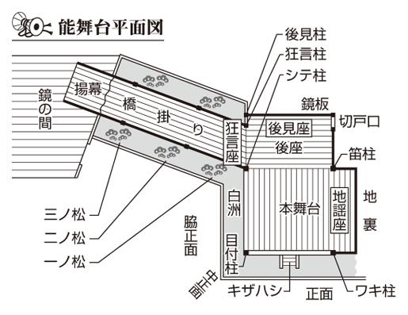

| 「通」になれる 古典芸能を楽しむ本 落語・歌舞伎から能・狂言まで (PHP文庫) | |
| 日本博学倶楽部 | |
| PHP研究所 (2005) | |

「通」になれる
古典芸能を楽しむ本
落語・歌舞伎から能・狂言まで
日本博学倶楽部
はじめに
二〇〇一（平成十三）年に能楽が、二〇〇四（平成十六）年には文楽が、相次いでユネスコ世界無形文化遺産に登録された。落語や歌舞伎、狂言は新世代の台頭により、女性を中心に若い世代にもファンが増えつつある。メディアに取り上げられる機会も増えたので、古典芸能をライブで観てみたいと思う人は多いだろう。しかし、関心はあるものの、敷居の高さから二の足を踏んでしまうという声も聞く。
だが、やはり古典芸能はおもしろい。
たとえば、落語の場合、高座で用いる小道具は基本的に扇子と手拭いだけである。落語家はこの二つの道具であらゆる場面をあらわしてみせる。手拭いはたためば財布、頭にかぶったら頭巾。扇子は少し広げれば三味線のバチ、閉じて口にくわえるとキセルとなる。おもしろいのは、同じキセルのしぐさでも役柄によって演じ分けている点だ。侍は堂々と、馬子は大切そうに深々と、芸者は艶っぽく一服するのである。
また、歌舞伎役者というと、白塗りに赤や黒のメイクをした、あの派手な化粧顔を思い浮かべる人が多いのではないか。あれは「隈取」といい、すべての演目でしているわけではない。おもに荒事という勇壮豪快な役柄のときに見られる。
赤、青、黒、茶の四色が用いられるのだが、塗ってある色はその人物の性格をあらわしている。「紅隈」と呼ばれる赤は、勇猛な武将や若々しさ、正義をあらわし、善人の場合に用いられる。一方、青は「藍隈」、茶は「代赭隈」、黒は「墨隈」と呼ばれ、暗い影の部分を強調しており、悪人や鬼、怨霊といった役柄に使われる。したがって、隈取の色の意味を知っていると、その人物が物語のなかでどんな役割なのかという見当がつけられるのである。
このように、いずれの芸能も奥が深く、知れば知るほどおもしろい。だから、とっかかりさえあれば、その魅力はどんどん膨らんでいく。
本書は、落語、歌舞伎、能、狂言、文楽という、日本を代表する五つの芸能を取りあげ、初心者でもわかるように、その魅力を解説している。各芸能ごとに「観る前に」「楽しみ方」「演目紹介」という三部に分けて、チケットの取り方や鑑賞の際のポイントといったハウツーから、歴史や小道具などのおもしろ知識までを盛り込んだ。本書が、古典芸能デビューへの「はじめの一歩」となれば幸いである。
二〇〇五年十一月
日本博学倶楽部
古典芸能を楽しむ本 目次
落語とは？
観る前に
楽しみ方
演目紹介
コラム 地方公演の舞台巡り
歌舞伎とは？
観る前に
楽しみ方
演目紹介
コラム 地方公演の舞台巡り
能とは？
観る前に
楽しみ方
演目紹介
コラム 地方公演の舞台巡り
狂言とは？
観る前に
楽しみ方
演目紹介
コラム 地方公演の舞台巡り
文楽とは？
観る前に
楽しみ方
演目紹介
コラム 地方公演の舞台巡り
装丁――中山銀士
装画――野崎一人
図版――ファクトリー・ウォーター
落語とは？
落語は滑稽話だけにあらず 諧謔精神に満ちたエンターテインメント
古典芸能としての落語には、長い間に形成された独自のスタイルがある。大ざっぱに整理すると、内容的に、「オチ」がある、形式的に、 「高座」に座って演じる、
「高座」に座って演じる、 和服を着る、
和服を着る、 扇子と手拭い以外の小道具はなく話芸だけで演じる、の四つだ。
扇子と手拭い以外の小道具はなく話芸だけで演じる、の四つだ。
のオチは、「落語」の語源にも関係している。オチは「サゲ」ともいい、話を締めくくる、気のきいた結末を意味する。「落としばなし」が「落語」というわけだ。
一六八七（貞享四）年の噺本『正直咄大鑑』に、「壱か（が）おち、弐か（が）弁説、三か（が）しかた」という有名な一節がある。噺、つまり落語は初期の時点から、何よりオチが重視されてきた。
テーマは滑稽話が中心だが、聞く者の涙を誘う「人情噺」もあり、滑稽がすべてというわけではない。人情を背景に諧謔精神に満ちた滑稽で味つけし、笑わせたり泣かせたりで総合的に世間を描くのが落語なのだ。名作といわれる古典落語には、時代を超えて人々が共感できる描写や表現があり、生きることのペーソスが感じられるものが多い。
落語独特の形式も無視できない。落語のステージといえるの高座は、重要だ。高座とは、もともと説教師が座る一段高い座のことで、落語のルーツが説教からきたことをあらわしている。
の和服は、高座と切り離せない。高座の座布団に座って演じるのに、洋服では格好がつかないだろう。
和服といっても、着流しから正装まで様々。落語家の位や話の内容などで変化する。
同じ「お笑い」でも、漫才では、いまでは和服を着る人が少ないのに、落語は昔と変わらぬ和服姿。落語が伝統芸能たるゆえんだろう。
上方落語で使うことのある「見台」「膝隠し」などの例外はあるが、基本的にはの扇子と手拭いしか使わない。扇子は閉じて箸や筆、刀、槍、開けば盃、手紙、手拭いは布だけでなく本、財布などにも見立てて使う。落語家はこの二つの道具で、あらゆるしぐさを表現する。
使うのは最小限の小道具と、噺家の体だけ。それを最大限に利用して芸の巧みさで表現する無限の世界が、古典芸能としての落語なのだ。
観る前に
落語のルーツは、平安末期から鎌倉時代にかけて各地を布教してまわった仏教の説教だといわれる。宗教と関係がなくなったいまも、落語が高座で行われているのはその名残だ。
高座だけではない。必ずオチがつくという落語の構成も、まずマクラをふり、中盤はおかしく、そして結論に導くという三部構成も、説教からきている。
一般に落語の祖といわれるのは、安土桃山時代から江戸時代にかけて活躍した安楽庵策伝（一五五四～一六四二年）という僧侶だ。策伝が自身の説教をまとめた『醒睡笑』（全八巻）には、現代にも伝わる『平林』『子褒め』などの原典と考えられるものもある。策伝が法主を務めた京都の浄土宗大本山誓願寺は、「落語発祥の寺」といわれている（ただし、「落語発祥の地」と称する神社や寺はほかにもある）。
織田信長ら戦国武将たちは、学者、僧侶、茶人などを「御伽衆」、すなわち、話し相手として抱えていた。狂歌と頓知で知られる曽呂利新左衛門は、豊臣秀吉の御伽衆である。
美濃（現・岐阜県）の豪士の家に生まれ、京都禅林寺で説教を修業し、戦国時代に西日本各地を行脚した策伝は、兄が秀吉の御伽衆だったことからその一人に加えられた。やがて徳川家に政権が移り、誓願寺の法主となった策伝は京都所司代板倉重宗のもとに御伽衆として通うようになる。『醒睡笑』は、重宗のために書かれたものなのだ。
話の名手として知られた策伝は、諸大名に招かれて『醒睡笑』にまとめた話を自ら演じて見せた。彼が落語の祖といわれるゆえんである。それまでも、『戯言養気集』『きのふはけふの物語』など滑稽な御伽衆の話を収録したものはあったが、『醒睡笑』の内容はこれらに比べてずっとエレガントで洗練されたものだった。
ただし策伝が落語を行ったのは、当時の権力者たちの前だけで、不特定の客が相手だったわけではない。このことから「落語の祖」であっても「落語家の祖」ではないという人も多い。
いずれにしても、説教から発展した御伽衆の話の滑稽な部分を、後世の人々が洗練させて完成させたものが落語だといえる。
古典落語、新作落語という言葉がある。古典、新作というからには、ある時代で分かれそうなものだが、いったいどこで区切られ、それぞれどんな特徴があるのだろうか。
落語の古典、新作に関しては、じつは明確な区分は存在しない。ちょうどクラシック音楽、現代音楽などというとき、いつの時代で分けるか明確でないのと同じである。
どの時代で分けるかについては複数の説があるのだが、もっとも一般的なのは、古典が江戸～明治時代のもので、明治後期や大正時代以後にできたものが新作という区分である。ほかに、第二次世界大戦を境とする見方も根強い。
いずれの時代で分けるにしても、古典と新作の特徴は次のようなものと考えていい。
・古典落語＝舞台は成立した時代。つまり江戸時代か、その風俗が強く残っていた明治時代初期、多くの場合、作者不詳
・新作落語＝その時代が舞台のことが多いが、なかには江戸時代を舞台にした時代劇のようなものもある、多くの場合、作者がはっきりしている
もちろん例外もある。たとえば代表的な名作古典落語『牡丹灯籠』や『真景累ヶ淵』は、幕末から明治の名人、三遊亭円朝が、自作自演したのが最初だった。
われわれ現代人としては、古典落語は風俗などがわかりづらいという反面、いかにも落語らしい味わいが楽しめるというのが魅力である。一方、新作は風俗がイメージしやすい代わりに、内容が落語のスタイルになじみにくいという側面もある。
じつは、古典落語というジャンルが語られだしたのは、戦後のラジオ放送だったといわれている。
昭和の初期に、柳家金語楼が、当時の世相を反映した兵隊落語などの新作をつくり、ラジオ放送で人気を呼んだ。その後、戦後になって五代目古今亭志ん生や八代目桂文楽などの古典落語が一世を風靡した。
そんななか、三十年近く前に三遊亭円丈が実験落語会をはじめて、新作落語に新しい息吹を与えた。その後も、春風亭昇太や、自らの落語を「創作落語」と名づけた上方の桂三枝などが、新作に意欲的に取り組んでいる。
長い伝統を持つ落語には、名人と称される噺家がたくさんいる。桂文楽、古今亭志ん生、上方の桂枝雀ら、いまでもＣＤやビデオ、ＤＶＤがある噺家も多いので、勉強の意味でその名人芸に触れてみるといい。
究極の話芸を味わいたければ、まず桂文楽（一八九二～一九七二年）の名が挙がるだろう。言葉の端々まで洗練を極めた噺ぶりで、「楷書の芸」と評され、数こそ多くないが磨き抜かれた演出は「ネタのすべてが十八番」ともいわれた。国立劇場小劇場で、しゃべり慣れた演目である『大仏』の中の人物の名前がどうしても出てこず、「申し訳ありません。勉強し直してまいります」といって高座から降り、再び高座に上がることはなかった。そして、一九七二年十二月十二日永眠。このエピソードからは、強烈なプロ意識が感じられる。
天才的で強烈な個性なら、古今亭志ん生（一八九〇～一九七三年）にかなう者はない。「存在自体が落語」ともいわれ、不思議な魅力のある噺家だった。高座以外では道楽のかぎりを尽くし、当然、赤貧をきわめた生活ぶり。飲み過ぎで高座をすっぽかすなどは朝飯前で、噺の途中で眠ってしまったことさえある。自由奔放な芸風と演目の多さは文楽とは対照的で、金を呑み込んで死んだ願人坊主の腹だけを生焼きにして金を取り出すという死体損壊の陰惨きわまりない噺である『黄金』さえも、志ん生が独特のとぼけた調子で語れば、なぜかおもしろい落語になってしまうのだ。
ユニークという点なら、桂枝雀（一九三九～一九九九年）も負けてはいない。神戸大学文学部に進むほどのインテリだった枝雀は、試行錯誤を繰り返したのち、独自の「緊張と緩和」理論にもとづく緻密な芸風を確立し、枝雀ブームを巻き起こした。日本語のわからない外国人に落語を開放した、英語落語などの功績も大きい。
ほかにも、凄みすら感じさせる話芸や揺るぎのない心理描写で『怪談牡丹灯籠』などのいわゆる円朝ものを蘇らせた昭和の名人、六代目三遊亭圓生（一九〇〇～一九七九年）、道具の使い方で真髄を発揮し、芝居噺や怪談噺で大家といわれた八代目林家正蔵（彦六）（一八九五～一九八二年）ら、名人は枚挙にいとまがない。
そして伝統芸能である落語ゆえに彼らの芸は、ＣＤやビデオ、ＤＶＤのなかだけでなく、平成の時代を生きる現役の噺家たちにも脈々と受け継がれているのである。
落語＝笑える、おかしい話、と思っている人は多いのではないか。しかし前述したように落語は、高座で、和服姿で、扇子と手拭いを小道具で使い演じる伝統的な娯楽である。つまり、かならずしも笑える話、滑稽噺だけではないのだ。
落語を話の内容で大別すると、滑稽噺（おとし噺）、人情噺、怪談噺、芝居噺、 音曲噺、の五つのジャンルに分けられる。とはいっても、ほとんどが滑稽噺というのが実際のところだ。
音曲噺、の五つのジャンルに分けられる。とはいっても、ほとんどが滑稽噺というのが実際のところだ。
落語の主流といえる滑稽噺は、オチ（サゲ）があって笑いが中心の噺である。何しろ数が多いので、様々なジャンルに分けられ、舞台や登場人物でさらに細分化される。おもなものは、長屋噺、殿様噺、若旦那噺、子ども噺、道中噺、泥棒噺などである。
人情噺は、人の人情に訴えかけてほろりとさせる、映画でいえばさしずめヒューマンドラマだ。名作に『子別れ』『お富与三郎』などがある。若手でもできる滑稽噺よりも高度な話芸が要求されるうえに、お客は笑いを求めて来ることもあり、上演の機会は減っている。
怪談噺は、いうまでもなく幽霊が登場するホラーもの。三遊亭円朝の『牡丹灯籠』『真景累ヶ淵』などが代表作だ。場内を暗くする、火の玉を飛ばすなどの演出がつくことも少なくない。また『饅頭こわい』のように、東京落語では滑稽噺なのに、上方では幽霊が出てくるので怪談噺になる噺があるのもおもしろい。
芝居噺は噺のなかに歌舞伎などの芝居を取り入れて実際に演じるもので、映画や舞台でいえば劇中劇がある作品。落語家には昔から、歌舞伎に対する憧れがあったのだ。もっとも人気の高いテーマは日本人に愛される『忠臣蔵』。ただしこれもエンターテインメントの多様化などによって、現在は下火になっている。
音曲噺は、噺の途中に三味線や太鼓などの鳴り物が入る演目をさす。日本の伝統的な音楽、つまり義太夫（浄瑠璃）、小唄、都都逸などを実際に演じるが、高度な技術が要求されることもあり、上演は少なくなった。
滑稽噺が全盛の状態といえる現在の落語だが、伝統芸能はいいかえればつねに変化する生き物でもある。低迷するジャンルも、天才の出現で思わぬ大ブレイク、ということだってないともかぎらないのだ。
落語を演じている場所には、いくつかある。
いまのところ、規模の大きい順に、劇場・ホール、寄席、落語会、の三つがある。
いわゆる「ホール落語」と呼ばれるは、メジャーな落語家の単独公演や何人かの噺家が、あるテーマや演目を決めて行う、いわばよそ行きの落語。チケットは前売りされ、座席が指定されることも少なくない。一流どころでないと出演できないから、一度高度な芸を体験してみたいという人にいいだろう。当然、情報も多い。
まずはナマの落語を楽しみたいというビギナーには、寄席が最適だ。「定席」とも呼ばれ、毎月三十一日を除くほぼ毎日、昼夜それぞれ十日交替の興行。もちろん落語が中心だが、漫才や手品もあって楽しい一日が過ごせる。
ほとんどの場合、座席は自由席で、当日券は二〇〇〇円前後。気楽に入ってすぐに見られるのが魅力だ。ただし定席があるのは、現在のところ東京だけである。
の落語会は、それこそバラエティーに富んでいる。個人や地域が席亭となって催されるが、定期的にやっているところも多い。とくに無名の若手の落語家などは、顔を売るチャンスになるので、呼ばれればどこにでも出かけて行く。
個人で開く場合、会場は公民館や飲食店などたくさんの人が入れる場所が選ばれることが多いが、とくに決まりはない。そば屋やすし屋、ホテルなどで食事とセットになっていることも多い。
また、意外に多いのが学校寄席。ほかに企業の慰安会などで落語家を呼ぶところも増えている。
一度落語を聴いてみたいと思っている人は、まずラジオで落語を体験してみるのもよい。
落語は寄席だけでなく、ラジオやテレビによっても人々に愛されてきた。家庭にいながら楽しめる落語放送は、とくに寄席まで遠い地方の人たちにとって、落語に触れる数少ない機会だった。
ラジオで最初に落語が放送されたのは一九二四（大正十三）年で、出演者は五代目柳亭左楽、演目は『悋気の火の玉』といわれる。最初はスタジオに落語家が出かけての放送だったが、一九三一（昭和六）年には寄席からの中継もはじまった。
やがてラジオ放送に欠かせない番組になった落語は、戦後、民間放送がはじまるとますます隆盛になった。名人といわれた桂文楽、古今亭志ん生らは、放送局と契約を結んでいたといわれる。
その後、テレビが普及すると、落語家はテレビの人気者になる。演芸番組も増え、ドラマやワイドショーに出演する噺家も出てきた。
だがその後、お笑いの多様化が進むとテレビの落語番組は少なくなり、現在も続く民放落語番組は日曜夕方の『笑点』だけという状況である。ＮＨＫや民放の深夜枠で放送されることはあっても、もはやテレビのお笑いの主流ではない。
そんななか、まだまだ健在なのがラジオの落語番組だ。ラジオといっても昔と違って生放送ではない。多くは高座での録音の放送である。扇子と手拭いの演技などの動きが楽しめないのは残念だが、もともと聴き手の想像力を必要とする落語は、ラジオこそふさわしいメディアともいえる。
ＮＨＫ第一放送では、古典だけでなく、東西の現役噺家の新作や、いまは亡き名人たちの録音が聴ける貴重な番組もある。
ラジオで落語の雰囲気を予習してそれから寄席へ、というのはいかがだろう。
ここでは、ビギナーの落語初体験に最適な、寄席について紹介しよう。
寄席とは本来、演芸を行う場所すべてをさすが、ここでは一年中落語をやっている定席のことに限定する。落語だけでなく漫才、手品など（色物）もやっていて、安い料金で気軽に楽しめる演芸場だ。
現在、寄席があるのは全国でも東京だけ。鈴本演芸場（上野）、末広亭（新宿）、浅草演芸ホール、池袋演芸場の四つだ。定席公演のある国立演芸場を含めても五つである。
出演者である噺家は、十日ごとに交替する。毎月一～十日までが上席、十一～二十日が中席、二十一～三十日までが下席で、それぞれ昼席、夜席で別の噺家が出てくる。
注意したいのは、落語の世界には「一門」と「会派」という団体があり、所属が異なる噺家は、同じ席に出ることはないという点だ。すべての寄席で聴ける「落語協会」、鈴本以外に出る「落語芸術協会」のほか、ともに国立演芸場で聴ける「立川流（立川談志の一派）」、「円楽一門（三遊亭円楽の一派）」がある。
ここでは、寄席がどんなところかを、末広亭を例に紹介する。
入口には寄席提灯、寄席幟、出演者の名前を書いた立て看板。どこも同じように見える寄席文字は、じつは寄席ごとに別の人が担当していて、字体も少し異なる。
当日券のみの全席自由席。カタカナで「テケツ」というチケット売場で売っている。テケツと入場券係の「モギリ」は、戸が木でなくなっても「木戸」という。
靴を下足番の男性に預けて、いよいよ畳敷きの客席へ。一階は、中央の椅子席と左右の高くなった桟敷席、二階にも桟敷席があって、収容人員は三〇〇人強だ。
「高座」は末広亭の場合、高さ三尺（約九〇センチ）、間口三間弱（約五メートル）で、奥に向かって少し狭くなる。声の響きをよくするために、杉の板戸を使っている。
落語の舞台装置として、寄席の存在は重要だ。立派なホールで楽しむのも悪くはないが、昔ながらの風情を持つ寄席で雰囲気ともども落語を味わいつくしたい。
さあ、落語を観に行ってみよう、と思っても、どこで誰の噺が聴けるのかわからない。全国で唯一寄席がある東京には、そんな人にぴったりの月刊誌がある。
落語版『ぴあ』といわれるのは、毎月二十八日発行の『東京かわら版』だ。寄席をはじめ、落語会、落語イベント毎月三三〇件の情報から、テレビ、ラジオ、書籍、ＣＤのほか、インタビュー、ニュースまで、あらゆる落語情報がつまったファン必携の一冊だ。なお、講談、浪曲の公演予定も掲載している。
三五〇円というお手頃な値段のうえに、東京の四つの寄席でこの本を見せると入場料が割引になるという特典付きだ。
『東京かわら版』は書店や都内の四つの寄席で買えるほか、定期購読も受けつけている。なお、落語界では定席の番組変更はめずらしくない。お目当ての噺家がいたら、その日に出演するかどうかを確認してから行くと、残念な思いをしないですむ。
『東京かわら版』の提示以外にも、寄席に割引で入場できる機会は多い。
末広亭では、「新宿末広亭友の会」に入ると、年会費一万円払い込めば入場料が割引きになる会員証と、三か月有効の入場券が年四回もらえる。さらに、記念品として湯のみ、手拭い、扇子のうち二点がプレゼントされるほか、会員と一緒に行った人は学生料金になるのもうれしい。
会員以外の人にはスタンプカードがお得だ。入場時にもらえるスタンプカード付きプログラムに次回からスタンプを押してもらい、これを一〇個ためると、招待券と手拭いがプレゼントされる。
このほかユニークな割引サービスを実施しているのが池袋演芸場だ。浴衣や着物で行くと入場料が割引きに、また子どもが小学生以下の親子連れも割引金額で入場できる。
さらに、とにかく安く寄席の雰囲気を味わってみたいという人には、末広亭の「深夜寄席」（毎週土曜夜）、鈴本演芸場の「早朝寄席」（ほぼ毎週日曜の午前）の「ワンコイン寄席」がいいだろう。まだ勉強中で将来有名になるかもしれないのが魅力の「二ツ目」と呼ばれる噺家の落語が、わずかコイン一枚、五〇〇円で楽しめる。この「深夜寄席」は、若いお客さんも多い。
楽しみ方
いよいよ寄席に足を運ぶと、まず目に入るのは会場の入口に並ぶ看板の文字だ。落語に詳しくなくても一度は見たことがあるだろう、太くて丸みをおびた、粋な手書きの文字で、高座のプログラム、いわゆる「めくり」にも使われる。この独特の文字を「寄席文字」という。
落語以外でも、歌舞伎や相撲などで同じような文字を見たという人も多いだろう。一見似ているが、じつは微妙な違いがあり、丸みがあって切れがあるのが寄席文字だ。ちなみに歌舞伎のは勘亭流、相撲のは根岸流という。
寄席文字は、元噺家だった橘右近（一九〇三～一九九五年）が、それまでビラ字と呼ばれていた書体をもとに橘流を創案して、寄席文字と名づけたものだ。ビラ字は寄席の広告「寄席ビラ」に使われていた字で、天保の頃、半纏や提灯などに使われる文字と歌舞伎の勘亭流を合わせて生まれたといわれる。
江戸末期から明治にかけて寄席専門のビラ屋が繁盛し、なかでも名人・ビラ清（ビラ屋の清次朗）、ビラ辰（ビラ屋の辰三郎）らの極彩色の木版ビラは人気を呼んだ。ビラ字の伝統は関東大震災でいったん姿を消したが、ビラ辰の流れをくむ前述の橘右近が寄席文字として蘇らせ、右近亡き後は門弟たちに技術と伝統が受け継がれて現在に至っている。
いまも寄席文字は、すべて橘流一門、橘会の人々による手書きである。書きやすいように筆先を短くした専用の筆を用いて書くのだ。
寄席文字は肉太で、書かれた紙にあまり隙間がない。これはぎっしり客が詰まってほしいという願いをあらわしている。やや右肩上がりなのも、縁起をかついでいる。寄席文字が縁起文字と言われるゆえんである。
橘会では、寄席文字の楽しさを味わってほしいと勉強会を開いたり、カルチャーセンターで講座を開いたりしているが、これがなかなかの盛況。人格、実力ともに揃えば、一門に入門という道も開かれている。
東京の落語界には、まるで相撲界のような厳しい階級制度がある。
噺家の出世は、「見習い」にはじまって、「前座」「二ツ目」「真打」と昇進していく。実力のみの相撲と違って年功序列は色濃いが、それでも出世のスピードは人によって異なる。真打になるまでの平均は、おおよそ十五、六年だ。
落語家志望者が入門すると、三～六か月は見習いとして、師匠の家の掃除や洗濯など雑務をこなす。その間に師匠に認めてもらえば、正式に前座名がもらえる。
前座になると、師匠宅と寄席の楽屋を往復する毎日であるが、協会などの各団体に所属してお客さんの前で落語を演じられるようになる。寄席に出たり落語会の手伝いをすれば、少ないが給料ももらえる。
しかし、若者にとってはかなりきつい。前座は平均で三年くらいだが、この期間にやめてしまう者も少なくない。
前座の次が二ツ目。これはプロとして独立するために、自分の芸を高める期間だ。
ここでやっと高座で紋付の着物と羽織を着ることが許される。前座時代より噺家らしい名に改名することもある。ただし、師匠のもとを離れるから寄席の仕事や生活の保証はなくなってしまう。
そのかわり、自由に行動できる。だからこの間に人間関係を広げて後援者を増やすことが、のちの成功にかかわってくるので大事だ。生活は苦しいが、この時期をどう過ごすかは噺家にとって重要といわれる。期間は平均十年と長い。
そしていよいよ真打への昇進となる。一人前の噺家として「師匠」と呼ばれ、寄席でもトリを務めることができ、弟子も取れるようになる。
だが、真打は噺家としてのスタートであってもゴールではない。落語家として本当に評価されるのは、真打になってからなのだ。
ちなみに、上方の落語界には、このような階級制度はない。
伝統芸能である落語、寄席には、独特の時間の流れがある。そのなかで行われる動作にはそれぞれ意味があり、何をあらわすかを知っておくと落語の楽しみは何倍にもなる。
寄席の進行の合図は「寄席囃子」で行う。太鼓を叩くのは前座だ。
一日のはじまりは、開演三十分前の「一番太鼓」。客の大入りを願って大太鼓を長バチで、「ドントコイ、ドントコイ」というリズムで叩く。
さらに楽屋で開演の準備ができる開演五分前には、笛が入ってにぎやかな「二番太鼓」、略して「二番」が奏でられる。いよいよ寄席のはじまりだ。
それぞれの噺家が登場するときは「出囃子」。「前座囃子」は出演者全員が同じ曲目だが、二ツ目以上は噺家によって曲目が決まっている。野球で打順がまわってきたときに流れるテーマ曲のようなものだ。東京にはないが、大阪には噺が終わったときの「ウケ囃子」もある。
寄席が進みトリを務める真打の噺が終わると、終演を知らせる太鼓「追い出し」「打ち出し」が鳴り出す。真打が高座でおじぎをして客を送り出すとともに、リズムは「デテケ、デテケ、テンデンバラバラ」。最後に長バチで大太鼓のまわりをこすって、ギーッという音を出すが、これは木戸を閉める音をあらわしたものだ。
また、楽屋と噺家との連絡に使われる羽織もおもしろい。放送業界などでいう「巻く（短くする）」「伸ばす」。これを伝えるのが羽織なのだ。
演者の出番はもちろん最初から決まっているが、噺家が予定通りに楽屋入りしないと噺の終わりや順番を調整しなければならない。楽屋の状況を羽織で高座に伝えるわけだ。
高座で噺家が羽織を脱いで脇へ放る。進行係の前座がこの羽織を楽屋の方へ引けば、次の人は来ているという合図だから、いつでも終わりにしていい。
羽織がそのままなら、次の人の用意ができていないから噺を続ける必要がある。いわゆる「伸ばす」だが、落語界では「つなぐ」という。ちなみに、時間を短くする「巻く」は「はしょる」だ。もっとも、最近では羽織をそのような合図に使うことは少ないようだ。
とっさの場合のつなぎ方やはしょり方も、高度な噺家の技術といえる。時間をつなぐために別の噺を続けるのは、「イモつなぎ」といって最低だ。一つエピソードを入れたり省略したりして、お客さんにわからないように調整するのがプロの仕事といえる。
落語の構成は、マクラ、本題、オチと続くのが一般的。これは能楽や人形浄瑠璃など他の伝統芸能の脚本の、いわゆる「序・破・急」に対応しているともいわれる。
昨今の高座では、時間がないときなどマクラなしにいきなり本文ということもあるが、本題に入る前にお客を噺家の世界に引き込む導入部としてマクラは重要だ。事前に演目が発表されていない場合は、マクラで客の反応を探ってから演目を選ぶという噺家もいる。噺家の個性やプロ意識は、マクラにもはっきりとあらわれるのだ。
「マクラ」という語は、「枕詞」などと同じように、ものの頭につくというところからきた。また、マクラは「しゃべる」ものだが、噺家は「マクラを振る」という。
マクラの内容は様々。大きく分けると、演目に関するもの、古典的な小咄、噺家による決まり文句、天気や身辺の話題などの世間話、といったものがある。
やはあらかじめ演目が決まっている場合に多く、「マクラ咄」とも呼ばれる。噺家が考えたオリジナルもあるが、博打の噺に使われる『看板のピン』、酒の小咄『禁酒』など、語り継がれてきた古典も多い。かつてはこの噺にはこのマクラというパターンがほぼ決まっていて、若手が別のマクラではじめたりすると、師匠に叱られたほどだった。
の噺家による決まり文句は、三代目三遊亭金馬の「お若輩な落とし噺を一席申し上げます」などが代表例。これだけで本文に入るわけではなく、このあとに世間話や小咄をマクラに振ることが多い。
いずれにしてもマクラは、料理でいえばオードブル。メインディッシュである本題を引き立たせる役目なので、あまり際立たせてもいけない。どんなマクラを振るのかに、噺家のセンスがあらわれてくるのだ。
マクラで客席を自分の世界に引き込んだあとは、いよいよ本題。背後に羽織を落とすように脱ぐ噺家がいるが、これは、さあここからが本題、という合図だ。
落語の小道具は、扇子と手拭いだけが基本。かつては高座に火鉢があり、湯のみも置いてあったようだが、いまはあまり使われない。その意味でも落語は、時代とともに、よりシンプルに洗練されているわけだ。
噺家は固い扇子と柔らかい手拭いを様々なものに見立てて、手つきとしぐさで表現する。広げたり閉じたりできる扇子と、たたんだり伸ばしたりできる手拭い。ともにフレキシブルな構造をうまく使った演技といえるが、しぐさ、手つきだけで本物らしく見せるのだから、じつにみごとなものだ。
扇子は、そのまま口にくわえてキセル、ちょっと広げて三味線のバチ、大きく広げて肩に担いだ旅人の荷物など。手拭いは、丸めてやきイモ、たたんで財布、かぶって頭巾。手紙を書くときは、扇子が筆、手拭いが手紙の合わせ技だ。
ラジオやＣＤでは無理だが、ライブやテレビ、ビデオ、ＤＶＤで落語を楽しむときには、このような道具を使う手つきとしぐさにも注目したい。当然、見る側にも想像力や表現されているものに関する知識が必要となる。
たとえば、扇子を櫓にして舟を漕ぐ動作を表現しても、客が櫓で漕ぐ舟を知らなければ伝わらない。その意味で扇子と手拭いの演技は、文化的な共通性が欠かせない、じつに高度な表現といえる。
同じキセルで一服しているところでも、侍は堂々と、馬子は大切そうに深々と、芸者は艶っぽくと演技し分ける。しぐさがリアルなら、それだけ噺も説得力が増し、客も噺に引き込まれる。
また、扇子や手拭いは落語家にとって重要なファッションアイテムでもある。自分の手拭いは毎年新調し、着物に合わせて使い分ける噺家も少なくない。
江戸、東京のほかに落語があるのは、全国でも大阪、京都の上方だけだ。当然、江戸落語は江戸弁、上方落語は上方弁と、言葉に違いがある。そのほかにも、様々なスタイルの違いがある。東京や関西に出かけた際には寄席や演芸場に足を運んで、東西の落語を比較してみるとおもしろいだろう。
前述したように、落語のルーツは戦国時代から江戸時代はじめに大名が抱えていた御伽衆である。上方には有力大名が多かったため、上方落語の歴史は江戸落語と同じくらい古い。それが江戸の粋、大阪の庶民性という異なる文化のなかで、それぞれ発展してかたちづくられてきた。
もっとも大きな上方落語の特徴は、噺の途中で「はめもの」と呼ばれる太鼓や三味線、小拍子などのＢＧＭ、効果音を使う点である。これは上方落語が、もともと屋外ではじまったことに関係している。
かつて上方では、人の多い神社やお寺、夕涼みの名所などの野外で、葦簾の囲いをつくって催していた。噺が目的でない人を呼びこむのだから、はめものでにぎやかにする必要があったのだ。一方、江戸の場合は、最初からお茶屋の座敷を会場に噺を聴きに来る人を集めて行われていたので、必要以上ににぎやかにすることはなかった。
また上方落語では、ネタによって講談の釈台のような「見台」を使うことがある。見台の前は、客席から見える側に一門の紋が入った膝隠しで隠し、見台の上には噺家の必需品、扇子と手拭いのほかに小拍子を置くのが一般的だ。講釈師が使うような張扇を置くこともある。
拍子木を小さくしたような小拍子は、噺の間を取ったり、にぎやかな雰囲気を出したり、戸の開閉、ものの落ちる音などを出したりするのに使う。
もう一つ、江戸落語との大きな違いは、前座、二ツ目、真打という階級制度がないことである。キャリアよりも、お客が呼べる、人気のある噺家が上、という上方らしい合理的な精神のあらわれともいえる。
江戸落語と上方落語は、長い間にそれぞれの文化のなかで育ってきたものだ。スタイルの違いについては前項で触れたが、内容的にも異なる点は多い。
題材にもそれぞれの町の特徴がよく出ている。江戸の落語は幕府があったために武士、侍が登場する話が多いのに対し、商人の町大阪の上方落語では商家が舞台の噺が一般的だ。
また、人気の噺家も文化の異なる東西で違いがある。粋が好まれる江戸では、どぎつい笑いよりさらりとした笑いを特徴とする噺家が人気で、反対に上方ではとことん笑わせてくれる噺家にファンが多い。
ただし、古典落語には東西で同じ内容の噺も多い。とくにユーモラスな滑稽噺は、上方でつくられて江戸に移ったものがたくさんある。
東西間を移動した噺のなかには、いつの間にか別の演題になったものもある。こうした「東西演題違い」は、それぞれの文化の差を反映していておもしろい。
食生活は、文化の違いがよく出るものの典型だろう。たとえば、そば文化の江戸に対し、上方はうどん。そこで、有名な江戸の『時そば』は、上方では『時うどん』になる。
ほかにも、小さな村の住職に収まっている元こんにゃく屋が主人公の『こんにゃく問答』は、上方では『屋問答』となり、上方の『みかん屋』は江戸では『唐辛子屋』といった具合。名作『らくだ』は、ふぐ鍋にあたって死ぬ「らくだ」というあだ名の男の話からはじまるが、ふぐ鍋が一般的でなかった江戸の噺にはふぐ鍋は出てこない。
地名が移った先になじみのあるものに替えられることもめずらしくない。大阪の『崇禅寺馬場』は江戸の『鈴ヶ森』に、京都の『いらちの愛宕参り』が江戸の『堀の内』に、というのがこのパターンだ。
興味のある人は、それぞれの噺を聴き比べてみるといいだろう。
いってみれば「一人芝居」の落語では、会話中の二人を、一人の落語家が演じる。となると、見ている方にとってはいまどちらの人物がしゃべっているのかわかりにくい。
この点を解消するために生まれたのが、顔を左右に向けてしゃべる「上下をつける」という独特の技法だ。
この場合の「上」は客席から舞台を見たときの右側。「下」は左側だ。そして落語ではつねに立場の上の者が、上手、つまり舞台の右側から下手（左側）に顔を向けるような位置関係でしゃべる。
これは同じく一人で二人を演じ分ける講談も同じ。通から見ればしゃべっているのが隠居か八五郎かは、たとえ話が聞こえなくても一目瞭然なのだ。
この「上下をつける」は、もともと歌舞伎からきている。歌舞伎の舞台左側には、役者が出入りする花道がある。人が出入りする場所は落ち着きがなく端近な場所、ということで、歌舞伎でも殿様など地位の高い人物はつねに舞台右の上手、家来など地位の低い人物は下手に位置するのがルールなのだ。
人が出入りする場所に近いところに目上の人を置かないのは、現代のビジネスマナーも同じである。どんな宴会でも主賓の席は、奥のほうと決まっている。つまりデザイン上、舞台や高座は左右対称の正面図ではなく、右側の上手が奥になった側面図なのだ。
このため同じ二人の人物でも、途中で複雑な操作をしなければならないことがある。たとえば、男性の来客とその家の女性が話をするような場面だ。
この場合、こんなふうに位置関係が逆転する。男性の客が入ってくるときは、家にいる女性が上手。それから家に入って話をすると、途中で入れ替わり、男性が上手になる。
こう読むとずいぶん無理のある動作に思うかもしれないが、こんな複雑な演技も名人は、スムーズにそれとは気づかせないようにこなしてしまう。決しておもしろおかしい場面ではないが、こうしたところにも噺家の技量は発揮されるのだ。
落語の世界には、いくつかの噺に登場する固定キャラクターがいる。彼らの性格をよく知っておくと、ネタの理解も一段と深まるだろう。
もっとも有名なのは、長屋に住む職人コンビの八つぁんと熊さん。口ぐせは、「あたぼうよ」「ちょっくらごめんねえ」。気が短くてケンカっ早いが情は深い、江戸っ子のステレオタイプだ。落語の枠を越え、新聞のコラムなどに登場することも多い。
本名は八五郎と熊五郎で、職業はどちらも大工や植木屋など。性格はどっちがどういう人物とはっきりしているわけではなく、二人出しておいてどちらかが八でもう一方が熊という程度のキャラ設定といえる。あえて分ければ、『垂乳根』でお嫁さんを紹介されたりする八つぁんはいろいろと面倒を見てもらえる放っとけないタイプ、『へっつい幽霊』で博打好きの幽霊からお金を巻き上げたり、『大山詣り』で旅先でケンカして丸坊主にされたりする熊さんは乱暴者といったところだ。
この二人以外にも〝有名人〟はいる。頭の回転は鈍いけど憎めない〝ほんわか天然ボケ〟キャラが与太郎だ。口ぐせは「アタイ」。天然ボケぶりは『時そば』『孝行糖』などで充分あらわされるが、『大工調べ』では腕のいい職人ぶり、『錦の袈裟』ではモテ男ぶりと意外性を見せる。
意外に重要なのが、幇間の一八だ。口ぐせは「結好でげすね～」「ようござんすねぇ」。
「幇間」とは金持ちの旦那にゴマをすってご祝儀をもらうのを生業としている人で、要するに太鼓持ちのことである。一流の幇間は唄に踊りと座の盛り上げ方に通じて師匠とも呼ばれるものだが、落語に登場するのはバカにされる人物ばかり。旦那のためには何でもするから、ときにはつらい目にも遭う。『幇間腹』では、鍼に凝った旦那の実験台として鍼を刺されて血だらけになる。
落語にかぎらず、芸の世界にはそれぞれ特有のしきたりがあり、客商売ゆえに縁起をかついだ習慣も多い。たとえば、演劇の世界で舞台がはじまるときなどに使われる「Break a leg !（足を折れ！）」という表現。他人の幸運を祈ると反対のことが起こるということから、頑張れ、「Good Luck !」というときにこういうようになったそうだ。こういった知識が増えるとその世界への理解もおおいに広がる。
さて、落語の舞台といえば「高座」。高座にある座布団を「高座座布団」、高座に上がるときの衣裳を「高座着」というが、こうしたネーミングにも落語家の高座への思いがこめられている。落語と座布団といえば人気テレビ番組『笑点』の「大喜利」を思い浮かべる人が多いだろうが、これも噺家にとって座布団がいかに重要かを物語っている。
寄席では、一人の噺家が高座を下りると、前座がくるりと座布団をひっくり返す。すると次の噺家が出てくる。これを「高座返し」というが、これにも独特のタブーがある。
ひっくり返すときに、絶対に客席に向けて裏返してはいけないのだ。ほこりが客席に向かって飛ばないようにという気配りからである。
この高座座布団の方向にもキマリがある。正座したとき、人は脚の左右の幅より膝からつま先までのほうが長いため、じつは座布団も少し長方形にできているのだ。そして四つの辺のうち一辺だけ縫い目のない辺があり、これが座布団の正面になる。
座布団はこの縫い目のない正面が、必ず客席側に向くように置かれている。したがって、客席に向けて裏返すと縫い目が客席側になってしまうのだ。なお、客席に縫い目を向けないのはお客さんと噺家との、縁が切れないようにと縁起をかついでのことだという。
寄席では、ライブならではの、お客さんの声をもとにその場で噺をつくる、即興的な芸もある。
その代表が「三題噺」。お客さんから三つの題をもらい、それを一つの噺にまとめて演じるアドリブ芸だ。三つの題は、関係がないほどおもしろい。
即席とはいえ、とんでもない名作が生まれることもある。ジャズなどの即興性の高い音楽で、ときに史上に残る名演が奏でられるのと同じだ。
古典になった三題噺の代表は、明治の名人三遊亭円朝が「酔っ払い」「芝浜」「革財布」の三題をまとめた人情噺『芝浜』だろう。
裏長屋に住む魚屋の魚勝がある日、女房に時間を間違えて起こされて「芝の河岸」に行くと、四二両も入った「革の財布」を拾う。さっそく家に飛んで帰り、人を集めて大盤振舞した。ていよく「酔っ払った」翌朝、こんなに飲んで払いはどうするのかという女房。大金の入った財布があるというと、財布など知らない、夢でも見たのだろうという。この事件で心を入れ替えた魚勝は、酒断ちして一所懸命に働き、三年後には店を構えるまでになる。その年の大晦日、女房が財布を出してきて、「あのときこのお金を使ってしまったら気のゆるみは一生治らなかっただろうから、夢だといってごまかした。腹が立つなら殴っておくれ」という。女房の機転に心から感謝した魚勝は、女房がつけてくれた酒を口にしようとするが、「よそう、また夢になるといけねえ」。
三題がみごとに生かされた、夢と現実の間をついた絶妙の人情噺だ。歌舞伎の演目になったり、戦前に何度も映画化された。
もっともこの噺、じつは円朝の作でなく、幕末の頃につくられた三題噺のあらすじに円朝が手を加えたものだという説もある。いずれにしても、即興でできた三題噺が名作になったことは確かだ。
ほかに円朝の三題噺には、「毒消しの護封」「鉄砲」「卵酒」の『鰍沢』、「新米の乞食」「袴着の祝い」「大仏」の『大仏』がある。ただしいずれも異説があり、噺のもとになった三題にも異説がある。
もう一つの即興落語は「お題噺」だ。お客の持ち物を借りてきて高座に並べ、その品物を洒落でつないでいって一つの噺にまとめる。
前座が客席をまわって品物を集めるが、集まるものは時計やハンカチなど大体決まっているので、三題噺より予想がついて楽なのだという。
どちらも、生の寄席ならではの楽しみだ。
噺家自身と扇子、手拭いですべてを表現する落語。実物がないのにおいしそうに見せる食のシーンは、噺家の技量が大いに問われる。名作『時そば』もおいしそうに食べてみせなければ、おもしろさは半減してしまうだろう。
古典落語には食に関する噺が多い。落語に描かれた食からは、当時の食生活がよくわかる。
近所で焼いているさんまの煙をおかずにご飯を食べろといわれる『さんま火事』、太鼓持ちの一八が鰻をご馳走になろうとある男に取り入ったが、その男が食い逃げしたために鰻代や土産代を取られたばかりか、下駄まで古いものととりかえられてしまう『鰻の幇間』、腐った豆腐に白砂糖と唐辛子の粉をまぜて長崎名物だといって気取り屋の男に食わせる上方落語『ちりとてちん』など、枚挙にいとまはない。
当時の江戸で、人々がもっともこだわったのは初鰹だろう。狂言としても有名な『白子屋政談』では、悪だくみをした髪結新三は家主の長兵衛にお金ばかりか、せっかく手に入れた初鰹の半分も持っていかれてしまう。
江戸っ子が「女房を質に入れても」買い求めたという初鰹。それだけ高価だったということで、青葉の頃に黒潮に乗って鎌倉、小田原あたりに来る初鰹に江戸っ子たちはこだわった。
しかし、瀬戸内が近く、白身の魚を簡単に手に入れられた上方の人々にとって、鰹などは「あないなもん」だったらしい。このあたりが、地方色が強かった当時のおもしろいところだ。
当時の川柳に「初がつおくすりのように盛りさばき」があるが、江戸でどんなに初鰹が重宝されたかがよくわかる。ちなみにこの頃の初鰹の値段は一匹一両二分。現代の価格に換算すると約二〇万円だという。
噺家が高座にあがるときに演奏される音楽が「出囃子」だ。もともと江戸落語にはなく、大正時代に上方から伝わったもので、真打、二ツ目は、それぞれ演奏される曲が決まっている。例をあげると、当代柳家小三治の『二上りかっこ』、当代柳家権太楼の『金毘羅舟々』などである。
曲は、邦楽が中心だが、童謡、歌謡曲などの一部が使われることもある。『笑点』レギュラーの三遊亭小遊三は『ボタンとリボン』、春風亭昇太は『ディビー・クロケット』だ。落語通ともなると出囃子だけで次に誰が出てくるかわかるから、楽しみも倍増というわけだ。
出囃子に乗って登場し、高座座布団に座り客席に頭を下げて噺がはじまる。ただこの出囃子は生演奏でないと気分は出ない。地方での興行などでは、テープが使われる場合もあるが、寄席では必ずライブで演奏されるから楽しい。
出囃子を演奏するいわゆる「鳴りもの」のメンバーは、三味線、おおど（大太鼓）、しめ（締太鼓）、とんび（笛）、よすけ（鉦）など。演奏するのは、楽屋横の囃子部屋にいる「お囃子さん」と呼ばれる女性たちと前座だ。お囃子さんが三味線を、前座が太鼓や笛などを担当する。前座にとって落語には関係なさそうな太鼓も、噺のリズムを学ぶのに大いに役立つという。
かつては「下座さん」と呼ばれたお囃子さんは、誰もが邦楽万能のベテランだ。高度な演奏技術が要求されるため、最近では若手を国立演芸場で養成し、各寄席に配属ということになっている。
芸人さんからは「ねえさん」「おねえさん」と呼ばれて頼りにされている。お囃子の役割がより重要な上方ではお囃子さんと落語家が結婚することも多く、奥さんが旦那のお囃子を務めるということもめずらしくない。
なお、曲芸や紙切りなどのＢＧＭの演奏は「地囃子」という。
演目紹介
もっともメジャーな噺の一つ。「寿限無寿限無五劫の擦り切れ......」というフレーズは、誰もが一度は耳にしたことがあるだろう。
あらすじは次の通りだ。長男が生まれて大喜びの八五郎は、いい名前をつけたいと寺の和尚さんに相談する。和尚はお経や諺からたくさんの名前を挙げてくれたが、どれも捨てがたいと思った八五郎は、全部つなげて一つの名前にしてしまう。それが、「寿限無寿限無五劫の擦り切れ、海砂利水魚の水行末、雲行末、風来末、食う寝るところに住むところ、やぶら柑子のぶら柑子、パイポパイポ、パイポのシューリンガン、シューリンガンのグーリンダイ、グーリンダイのポンポコピーのポンポコナーの長久命の長助」だ。
いい名前のおかげかすくすく成長した寿限無......は、近所の子どもたちとケンカをする年頃になる。ある日、近所の子どもが、寿限無......にぶたれたとコブをつくって泣いてきた。
ところが、子どもが「寿限無......にぶたれた」、八五郎が「何、うちの寿限無......が」なんて何度も繰り返すうちに、あまりに長くかかったのでコブが引っ込んでしまったというのがオチ。
内容がどうのこうのでなく、「寿限無寿限無五劫の擦り切れ......」というリズミカルな繰り返しそのものが魅力で、この長い名前を覚えてしまっている子どもも多い。こうした決まったセリフを繰り返す演題を「舌慣し」「口捌き」というが、技量不足の新米でも笑いが取れるので、代表的な「前座噺」にもなっている。
聴きどころはやはり「寿限無......」のリフレイン。たとえばみんなが歌う名曲ほど歌手の技量がよくあらわれるように、こうした誰でも知っている演題こそ噺家の実力がよく出る。
長い名前がテーマの笑い話は、日本の昔話や狂言のほか海外の童話にも多い。それだけ子どもに人気のあるテーマということだろう。
『舌切り雀』『こぶとりじいさん』、西洋では『金の斧、銀の斧』と、洋の東西を問わず、欲をかいて人のまねをして失敗する話は多い。『時そば』もその典型といえるが、子ども向けの昔話と違って、正直者が得をするという話でもないところが落語らしい。
江戸時代後期に江戸の名物だった、安くてうまい「二八そば」。そば粉八分につなぎのうどん粉二分でつくり、かつぎ屋台でよく売られていた。
ある日の午前〇時頃、お世辞をいいながら二八そばを食べていた男が代金一六文を払うとき、絶妙のごまかしをはたらく。
「一、二、三......」と一文ずつ渡していき、「七つ、八つ......」といったところで「いま何刻だい？」とそば屋に尋ねる。おだてられて気分のいいそば屋は、「へえ、九つ（午前〇時）で」と答えると、続けて「一〇、一一......」と数えて一文ちょろまかしたのだ。
これを見ていた与太郎。いい方法を知ったと次の晩にそばを食い、前夜の男の作戦をまねてみる。
しかし、男と同じように「七つ、八つ、いま何刻だい？」ときいた与太郎に返ってきた返事は「へえ、四つ（午後十時）で」。そのまま「五つ、六つ......」と続けた与太郎は、損してしまったというのがオチ。
時刻の呼び方が変わった現在ではわかりにくいオチともいえるが、それでも笑わせてしまうのは噺家の技量だ。前座噺としてもよく演じられる。
そばをあまり食べない上方では『時うどん』というが、こちらがオリジナルでそれを三代目柳家小さんがそばに変えて東京に移したらしい。
落語の魅力はオチや内容のおもしろさだけではないが、なんといっても『時そば』の見どころはそばの食べ方にある。二八そばは温かいそば。扇子を箸に見立ててフーフーいいながらすするしぐさは、見る者にいますぐそばを食べたいと感じさせるはずだ。
あまりに有名なタイトル。とくに「さんまは目黒にかぎる」というオチは、全落語中もっともよく知られたものといえる。
あらすじは次のようなものだ。家来と遠乗りに出かけた殿様が、目黒のあたりで空腹に耐えかねて家来の制止を振り切り、百姓家（茶屋とも）で焼いていたさんまを食べると、これがたまらなくうまかった。
その後のある日、朋輩の大名に好きな食べ物をきかれた殿様はさんまと答える。驚いた大名は上等のさんまを取り寄せ、このような下々の食べるものを食べさせて病気になったら大変と、蒸して脂をとり、骨を抜いて出す。久しぶりに食べたが、何だか目黒のさんまに比べて味気がないと思った殿様がどこの産かたずねると「房州」との返答。そこで殿様、「それではいかん。さんまは目黒にかぎる」。
スタイルは、会話より説明の部分が主となるいわゆる「地噺」。海のない目黒ではさんまが採れないことも知らずに産地の違いと思い込んだ無知な殿様の噺として知られ、「ひもじいときにまずいものなし」の教訓譚でもある。マクラで『大名の月見』のような無知な殿様が振られたら、この演目の可能性がある。
ただし噺の背景は、もう少し複雑ともいう。さんまのようなものを食べさせたことが知れると、お供の者が上役にとがめられてしまう。彼らのことを思って目黒のさんまの感動を口にできない殿様の不満が、親戚との一席で思わず出てしまったというのである。
モデルになった殿様は徳川家光とも吉宗ともいわれるが、出典となる噺は見つかっていない。将軍はさんまなど、生ではもちろん焼いたものも食べることはなかったといわれる。
落語好きだった夏目漱石が講演のなかで触れたこともある『目黒のさんま』だが、いまでも人気は衰えることがない。この逸話発祥の地とした史跡が現在の目黒区三田にあり、一九九六（平成八）年秋からは「炭焼きさんま食べ放題」が名物の「目黒のさんま祭り」も開催されている。
筑豊の炭鉱隆盛の名残をとどめる小屋
嘉穂劇場
福岡県飯塚市にある「嘉穂劇場」は一九三一（昭和六）年に開場した芝居小屋である。江戸時代の歌舞伎小屋の様式をいまに残す嘉穂劇場は、落語の地方公演の舞台となったり、歌舞伎や芝居など、多様な大衆娯楽を提供し続けてきた。
ところが、二〇〇三（平成十五）年の豪雨水害で床上浸水して、花道が壊れるなどの壊滅的な被害を受けた。すると、劇場関係者の呼びかけに、地元市民をはじめ、全国から募金が寄せられた。さらに、ゆかりある多くの芸能人らが支援にかけつけ、復興を呼びかけるオークションなどが開催された。
そのかいあって、翌年の劇場復興後は、利用申し込みが相次ぎ、落語会なども開かれている。
歌舞伎とは？
歌舞伎は、歌と舞いを見せてくれる伎だから「かぶき」と名付けられた、と説明されれば、誰もが納得しそうである。しかし本当のところは、「かぶく」という動詞から生まれたものだ。
「かぶく」は、「傾く」という言葉に由来する。まっすぐでなく傾いているという意味で、つまり正常でないさまをあらわす。そこから転じて常軌を逸している、異様、異端というような意味の言葉として、江戸時代初期には使われていた。
当時は、戦国の世が終わった頃。敗れた豊臣政権ゆかりの武将たちが、まっとうな生き方ができず、世の中に対して斜に構えて、京の町で勝手気ままなふるまいをしていた。そんな社会から逸脱した行動をする彼らは、「かぶき者」と呼ばれるようになっていく。
彼らは、反体制の主張として髪を高く結い上げたり、奇妙ないでたちに身を固め、徒党を組んで町をのし歩いた。
彼らの心を捉えたのが、当時京の町で人気のあった、出雲の阿国に率いられた念仏踊りの一座だった。念仏踊りとはいうものの、奇妙な衣装で艶っぽい歌舞音曲を演じる一座が、かぶき者のファッションのお手本になった。
現代でいえば、ロックミュージシャンやラッパーのスタイルをまねたストリートファッションで、繁華街にたむろする若者のような存在かもしれない。
そして「かぶき者」に支えられた念仏踊りが、「かぶき踊り」として新しい時代の新しい芸能の形式として根付いていく。その根底にあるのは、常軌を逸した行動で反体制の姿勢を示した「かぶき者」の精神と共通するものといえる。
観る前に
歌舞伎の元祖といわれる出雲の阿国の念仏踊りが、京都にあらわれて人気となったのが、一六〇三（慶長八）年。
巫女と名乗りながらも、阿国自身が男装して踊りを披露するほか、一座の男性を女装させるという異様ないでたちの「かぶき踊り」が評判を呼ぶ。そのうち、男装の阿国が、女装した男性を遊女に仕立てての旦那衆の「茶屋あそび」を再現した寸劇なども演じ、その評判は江戸にまで届いたという。
この阿国のあとを追って、あちこちで遊女たちによる同様の歌舞音曲の興行が行われるようになる。これが「女歌舞伎」で、この頃「かぶき」に「歌舞姫」「歌舞妃」の字があてられた。
風紀の乱れを呼ぶとして一六二九（寛永六）年に女歌舞伎が禁止されると、変わって起こったのが「若衆歌舞伎」だった。少年の歌や踊り、軽業といった芸を楽しむ風習は以前からあったが、女歌舞伎に変わって若衆が女性役を演じる芝居が行われるようになるのはこの頃からだ。
ところが稚児愛という伝統もあって、男色の温床となる若衆歌舞伎も、一六五二（承応元）年に禁止されてしまう。
そこで、若衆が前髪を剃って、一人前の男になって演じるのなら文句はないだろうと「野郎歌舞伎」が盛んになっていく。
その後の三十年間をかけて、男優が女優役を務める女形を誕生させながら、庶民の娯楽としての「歌舞伎」は成長する。そして元禄期（一六八八～一七〇四年）に、黄金期ともいえる時代を迎える。いまに伝わる荒事、和事といった芝居の形式や、それを演じて現代まで続く名跡、市川団十郎、坂田藤十郎といった役者が登場するのもこの頃からだ。
江戸時代を通じて庶民の娯楽だった歌舞伎は、反体制のエネルギーが原点にあったとはいえ、幕府の統制下での興行であった。それが、明治になると、それまで猿若町（現・浅草六丁目）でしかかけられなかった歌舞伎は、町中への進出が許される。
かわりに政府が要求したのが、新時代にふさわしいスタイルの芝居だった。そこで、ちょんまげをやめ、新風俗を取り入れた作品を上演するも、評判はよくなかった。
ようやく新しい形式の芝居が生まれるのは、一九〇四（明治三十七）年に坪内逍遥が『桐一葉』を発表してからのこと。これは、シェークスピアの歴史劇に範をとった、歌舞伎向けの脚本で、西欧の文学や脚本の素養があってこそ生まれた作品だった。これに続き第二次世界大戦前までは、谷崎潤一郎、岡本綺堂、長谷川伸、真山青果らが次々に作品を発表し、「新歌舞伎」と呼ばれる分野を築いた。
戦後になると、占領軍によって、仇討ち物のような軍国主義を助長する作品の上演に禁止令が出された。それに変わる作品の必要性から、舟橋聖一の『源氏物語』が生まれる。これは皇室がテーマというので戦前には脚色されることのなかった作品だったので人気を呼ぶ。ほかにも大佛次郎、三島由紀夫、有吉佐和子ら名のある作家たちも、古典の様式にのっとって歌舞伎脚本を書き下ろし、新作の「現代歌舞伎」を生み出していった。
さらに埋もれた古典を掘り起こし、現代に合う新しい演出で見せてくれる市川猿之助のスーパー歌舞伎も登場している。『ヤマトタケル』における宙乗りなど、あくまで伝統を踏まえながら、時代に合わせていく進取の気性もまた、歌舞伎の姿である。
歌舞伎は、役者が髷をつけたカツラをかぶり、刀を差した武士や、かんざしをキラキラさせたお姫さまを演じているから、すべて時代劇ではある。
しかし、その芝居の内容から、「時代物」「世話物」、所作事とも呼ばれる「舞踊劇」の三つのジャンルに分けられている。
「時代物」というのは、歌舞伎が成立した江戸時代よりも前の時代を舞台にした芝居をさす。『菅原伝授手習鑑』は王朝時代、『義経千本桜』は鎌倉時代を舞台にした代表作である。
また、この時代物のなかでも、とくに「お家物」といわれる芝居は独特である。これは、江戸時代のお家騒動を、前の時代に設定を替えた作品のこと。
たとえば『仮名手本忠臣蔵』は室町時代の物語に仕立てられているが、江戸の元禄時代に実際に起こった仇討ち事件をモデルにしている。当時は、それをそのまま芝居にして見せれば幕府に楯突くことにもなりかねなかったので、舞台を過去に移したのだ。
仙台伊達藩のお家騒動をモデルにした『伽羅先代萩』も、この分野の物語である。いずれにしろ、歌舞伎の大本をなす歴史劇として、現代まで演じ続けられているものが多い。
「世話物」は、江戸や大坂の市井の人々の物語で、当時の人々にとっては現代劇だった。主人公により、恋愛・心中物、侠客物、白浪（盗賊）物、怪談物といった分け方もされる。代表作に『曽根崎心中』『白浪五人男』『東海道四谷怪談』などがあり、これらも、その頃実際に起こった事件を題材にしていた。現代でいえばワイドショーや週刊誌が取り上げそうな話が多い。
「舞踊劇」は、出雲の阿国がはじめた形式にもっとも近いもので、やはり実際の出来事や事件、伝承などを長唄に合わせて見せる『娘道成寺』『藤娘』『勧進帳』などがよく演じられている。
また、脚本の内容とは別に、その芝居の成立過程から、人形浄瑠璃から取り入れた「義太夫狂言」、歌舞伎のためだけに脚本が書かれた「純歌舞伎」に分ける方法もある。
ふつう芝居を観るというとき、舞台で演じられる物語をはじめから終わりまで見るだろう。
ところが、歌舞伎の場合、物語の全編を通して上演するのは「通し狂言」と呼ばれて特別な興行になることが多い。たいていは「今月は『寺子屋』がかかる」というように、ある芝居の見せ場の部分だけを抜き出して上演する。
そしてファンは「仁左衛門さんの『寺子屋』を観に行く」という楽しみ方をしている。これは「片岡仁左衛門が演じる、『菅原伝授手習鑑』という作品の四段目である『寺子屋の場』を観に行く」という意味になる。
芝居のストーリーを観に行くのではなく、仁左衛門という役者の芸を見ることが、歌舞伎ファンの楽しみになる。当然、同じ『寺子屋』で、同じ松王丸という役でも中村吉右衛門が演じたほうが好きという人もいる。つまりある役者の芸を見ることが、歌舞伎鑑賞の一つの特徴となる。
歌舞伎はその誕生の頃から、誰が演じているかが注目されてきた。芸能として歴史を重ね、形式を整えていくにつれ、芝居のなかで役者の占める役割が大きくなった結果、役者の芸を楽しむことが主眼になったのである。
だから脚本も、最初に主役が誰かを念頭に書かれている。それだけに演じる役者の見せ場をもうける作品も多い。まず、ひいきの役者を見つけること――それだけで歌舞伎の楽しみは深くなるはずだ。
鑑賞前にまず見ておきたいのがチラシだ。ただの興行案内用のものとはいえ、かなりの情報が掲載されているから、プレイガイドのカウンターなどで手に入れるといい。観劇のついでに、劇場で翌月の興行のチラシをもらうという手もある。
いちばん大きい文字が、その興行の名前。ふつうは「○月大歌舞伎」というものや、襲名興行のほか、過去の偉大な名優の追善興行といった名目がつく場合もある。顔見世は、大物役者の競演が実現する、年に一度の恒例興行である。
その次に大きい文字が演目名で、昼の部、夜の部それぞれ上演順に並ぶ。
昼の部は、長い台本のなかから有名な場面だけを抜き取って一幕に仕立てた芝居と、舞踊劇の計三、四本が組み合わされた「みどり狂言」と呼ばれるバラエティーに富んだプログラムが多い。夜の部になると、長い芝居をはしょらずに見せる「通し狂言」がプログラムされることが多く、ほかに短い一幕物や舞踊劇で変化がつけられることもある。
書かれている演目名は、台本の正式名称でなく通称のことがある。長い題名の一部を略したり、主人公の名になっていたり、みどり狂言の場合は、「段」と呼ばれる有名な場面の名前だったりする。歌舞伎では場面の変わる一つ一つを「段」と呼び、チラシの演目の横には「～の場」というように演じられる段が添え書きされる。
演目の右側には小さく、台本の作者名が載せられていて、だれの作品かがわかる。演目の下に小さくずらずらと並んでいるのが、出演する役者の名前。姓を略して（中村）勘三郎とか（松本）幸四郎と名前が示され、何の役を演じるのかが書かれていることもある。この人のこの役ならぜひ見たいといった手がかりになるものだ。興行の期間、前売り開始日時、電話予約のための電話番号、観劇料など、こまごました情報ももちろん書かれている。
歌舞伎の劇場は、ごく一部をのぞけば全席指定だ。観劇当日いきなり行って窓口で買うことも可能だが、いい席で見ようと思えばやはり前売り券を買いたい。とくに人気の興行ならなおさらである。
演劇やバレエ、オペラなどの舞台は公演というが、歌舞伎は昔ながらに興行という。ふつうは一か月に二十五日間くらいの興行で、昼の部と夜の部の二部構成。それぞれの内容は情報誌や新聞広告で案内される。
最近は電話やインターネットでの先行予約が主流になりつつあり、これだと手軽だ。入手したチケットはあらためて劇場の窓口へ引き取りに行かなければならない場合もあるが、劇場によっては有料で自宅に送付してくれるシステムもある。これなら劇場が遠くてわざわざ足を運ぶのは......という人も安心だろう。
電話予約のときは、見たい日時、昼の部か夜の部か、予算の範囲内の席のランクを告げればいい。観劇に慣れてきたら、電話予約でも、どのあたりの席が欲しいと指定できるようになるだろう。劇場窓口で購入するときのメリットは、座席の位置を確認できて、席を選ぶことができる点だ。インターネットでの予約では、座席は選べないが、電話がつながらずにやきもきすることなく、スムーズに予約できることが多い。
前売り券は、興行する劇場のほか各プレイガイド窓口でも買えるし、電話ならチケットぴあなどでも扱われているので、こちらを利用してもいい。
前売り情報は、雑誌や新聞広告に前売り開始日が掲載されているから、その日以降ならいつでもいいが、人気の興行だと発売初日から電話が込み合うこともある。
歌舞伎座や国立劇場などでは会員制のシステムもあるので、参加すればそれなりの便宜を図ってくれる。
できるだけ早く情報を入手したかったら、各ホームページや携帯電話の「歌舞伎モバイル」が便利だ。無料のコンテンツで最新の興行情報が得られる。
歌舞伎鑑賞の楽しみの第一は、役者の芸を堪能することにあるが、役者は一代かぎり。しかし、一つの役を演じた役者の芸風が、お家芸となって延々と受け継がれていくのもまた歌舞伎の特徴である。
そんな芸を培ってきたのが脚本で、古典と呼ばれる作品は江戸時代から今日まで、歌舞伎の代表作として演じ続けられている。
そうした作品の作者で、元禄の歌舞伎黄金期を生み出した代表的な人物が近松門左衛門だ。
近松は上方の戯作者で、はじめは人形浄瑠璃のための脚本を書いていたが、のちに歌舞伎にも手を染め、当時の役者、坂田藤十郎のために多くの作品を書いている。なかでも人形浄瑠璃として書いた脚本が、歌舞伎で上演されて人気となったのが『曽根崎心中』である。
実際に起こった事件をモデルにしたこの作品のほか、同様の『心中天網島』『冥土の飛脚』など、家と金、義理といったものに縛られて破綻していく男女の愛を描いた「世話物」と呼ばれる分野は、いまも関西歌舞伎の人気演目である。
江戸時代後期の文化・文政期になると鶴屋南北が江戸に登場して、仕掛け、早変わりといった趣向を凝らした作品で評判を呼ぶ。彼はまた、江戸庶民の日常の言葉で、当時の風俗や人情を描き出し「生世話」と呼ばれる作品群を生んだ。代表作『東海道四谷怪談』は、戸板返しなどの仕掛けとともにそれが味わえる。
そして、幕末に登場するのが河竹黙阿弥だ。彼の作品の特徴は七五調のリズムのあるせりふまわしにあり、伴奏である下座音楽を多用している。作品は『三人吉三廓初買』のような盗賊を主人公にした「白浪物」が多く、台詞を数人の役者で分担する「連ね」「割り台詞」といった趣向が楽しめるのも、彼の作品ならではのものである。
歌舞伎の興行でひときわ華やぐのが、襲名披露興行だ。
歌舞伎は、役者の芸を楽しむ芝居だけに、誰がどんな役を演じるかが鑑賞する際のひとつの決め手になる。それを満足させてくれるのが、襲名興行といえる。
ご祝儀として、出演者の顔ぶれが豪華になるという特典もさることながら、襲名という晴れ舞台での最高の演技を見られるのがうれしい。
もともと襲名というのは、家に伝わる名跡を子や弟子が受け継いでいくことで、一人の役者が年齢や芸の熟達の度合いに応じて、一生のうちに何度か行われるものだ。
たとえば女形の最高峰といえる中村歌右衛門の場合、中村児太郎で子役人生をはじめ、成長につれて中村福助、中村芝と襲名を繰り返したのち、歌右衛門になるといった具合だ。
それは、芸の伝承が大前提にあって、家や一門の伝統を背負い、誰もが認めるほどに芸が習熟してはじめて許される。
だから、役者自身も自分の芸をいっそう向上させて、観客に襲名を納得してもらおうと励んで興行に臨む。そこで、長い歌舞伎愛好歴を持つ観客は、その役者本人の芸の上達を楽しみながら、先代の芸を懐かしんだりする。
そしてやはり、襲名披露をする役者の一門をはじめ豪華出演者が顔をそろえての「口上」が、ふだんの興行にはない大きな楽しみとなる。
歌舞伎は、その発祥からつねに、庶民のエンターテインメントとして人気を保ってきた。
それが近年は、伝統の継承を命題とするがゆえに、芸能から芸術になってしまった感があり、庶民から乖離しかけた部分もあった。
それに歯止めをかけようと、名門・沢瀉屋の市川猿之助が手がけているのが「スーパー歌舞伎」だ。
猿之助は、江戸時代の庶民が楽しんだように、現代人も身構えずに、気軽に歌舞伎を楽しめばいいと、新しい試みにチャレンジしてきた。『義経千本桜』で狐の化身役・忠信を演じたとき、はじめて舞台に宙乗りを取り入れ、人気を博して当たり役とした。
それを発展させたところにあるのが「スーパー歌舞伎」で、最大の特徴は新作が口語で演じられることにある。だから、解説なしでもストーリー展開がわかるし、テーマも現代的なものだから話に入りやすい。レーザー光線や本物の水を流すといった最新の舞台技術を取り入れたスペクタクル仕立ての作品が多く、衣装や小道具にも新しい素材を用いた豪華で目を見張る舞台となっている。
そのため初心者も、まるで時代劇レビューを見る感覚で楽しめる。それでも脚本づくりに、歌舞伎ならではの様式が守られていて、「見得」や「立回り」「ツケ」といった歌舞伎本来の持ち味も損ねていない。
こうした見た目のおもしろさをねらった外連芝居を演じるために、猿之助自身は歌舞伎界の異端児扱いされることもあるが、観客の絶大な支持が、スーパー歌舞伎と銘打った第一作『ヤマトタケル』から現在まで途切れずに続いている。
スーパー歌舞伎を見て歌舞伎のおもしろさを覚え、古典を観に歌舞伎座通いがはじまったという人も少なくないだろう。
歌舞伎興行が年間を通して行われている唯一の劇場が、東京の歌舞伎座である。だいたい月はじめの五日頃に初日の幕が開き、二十五日前後が千秋楽で、その間ならいつ行っても芝居が見られるという歌舞伎ファンの聖地だ。
それだけに観劇のためのサービスは至れり尽くせりである。
筋書と呼ばれるパンフレットは、毎月の興行ごとにつくられ、演目の粗筋のほか、作品の解説・裏話に加えて役者のプロフィールや役にかける意気込み、舞台写真などが掲載されることもある。初心者なら開幕までの待ち時間に読めば予備知識を仕入れられるし、観劇後に読み返せば新たな感慨に浸ることもできる。
初心者にありがたいのはイヤホンガイドの貸し出しだ。芝居の進行に合わせた解説が聞けるうえに、粗筋はもちろん、下座音楽や衣装、大道具などの説明もしてくれる。
そして忘れてならないのが、食事の楽しみだ。
豪華な会席弁当を予約しておけば、幕間に食べることのできる有名店の食堂があるし、軽食としてそばやカレーを食べられる店も入っている。甘味どころ、コーヒースタンドもあるし、自分の席で食べたいという人のために弁当の販売もしている。
最後に、観劇の記念の品が欲しい人のための売店も、歌舞伎座ならではのものだ。歌舞伎ゆかりの嗜好品のほか、役者の家紋入り手拭いや扇子、変わったところでは楽屋のれんもある。お土産用に千代紙、ポチ袋といった和紙小物なども豊富である。
歌舞伎座以外でも、タイミングさえ合えば興行を見ることのできる劇場は多い。
いちばん興行数が多いのは、東京の国立劇場だ。一、三、十、十一、十二月の定期興行のほか、六、七月には解説つきの歌舞伎鑑賞教室も開かれている。高校生向けということになっているが、一般でも入場可能だから、初心者は出かけてみるのもいい。
歌舞伎座のような雰囲気はないが、劇場の造りが現代的なため、多くの席は歌舞伎座より見やすく、なにより観劇料がリーズナブルな設定なので、はじめての人はこちらのほうがよいかもしれない。通し狂言、埋もれていた作品の復活狂言もたびたび上演するので、歌舞伎ファンにも人気がある。
次に興行回数が多いのが新橋演舞場だ。とくにここは、市川猿之助率いるスーパー歌舞伎が本拠としている劇場で、毎年二か月の連続興行が行われる。劇場の造りもミニ歌舞伎座といった趣だから、一度は足を運んでみたい。
歌舞伎界で役者もファンも特別な思い入れがあるのが年末の顔見世興行で、これが行われるのが京都・南座。四条の鴨川べりに立地していて、出雲の阿国による歌舞伎発祥の地というゆかりも深い。劇場正面に竹矢来が組まれて、演者の顔ぶれ看板「招き」が掲げられると、師走の慌ただしさと華やぎに歌舞伎ファンの胸が躍る。
大阪松竹座は、大正時代からの映画館が、一九九七（平成九）年に演劇専門の劇場に生まれ変わり、二月と七月に歌舞伎興行が行われるようになった。とくに七月興行では、役者が興行の先触れとして行う「船乗り込み」の儀式を楽しみにしている人も多い。これは江戸時代、芝居小屋に出演する役者が、船で乗りつけたのにちなんだ伝統的な行事だ。
そしてぜひ訪れてみたいのが、香川県の金丸座。国の重要文化財指定を受けた、現存する最古の劇場である。毎年四月にここで行われる「四国こんぴら歌舞伎大芝居」は、回り舞台もセリもすべて手動。江戸時代の芝居小屋そのままの雰囲気が人気を集め、チケット入手が困難なのが、よけいファンの心をくすぐるのである。
楽しみ方
歌舞伎鑑賞を一度くらいは......と思っても、そのチケットの高さに手が出ないという人は少なくない。
常設小屋である歌舞伎座では、一等席で一万四七〇〇円、二等席で一万五〇〇円、三階のＡ席が四二〇〇円、Ｂ席が二五二〇円と、二〇〇五年十一月興行は、昼の部、夜の部とも共通の観劇料だ。
これが、ちょっと豪華な気分を味わいたくて一階の桟敷席を選ぶと一万六八〇〇円。襲名興行のような特別の興行になると、各ランクとも、さらに値段が割り増しになる。これでは、歌舞伎ファンですと自称するまでに、相当な授業料が必要になる。
そこで、ちょっと歌舞伎というものをのぞいてみたい、あるいは、一度だけ観劇経験があるが、もっと見てみたいという人は、歌舞伎座ならではの「幕見席」を利用するといい。
これは歌舞伎座四階に設けられている天井桟敷席で、昼、夜どちらの部でも、演目一つから見ることができるというものだ。一演目が六〇〇円から一二〇〇円くらいに設定されていて、通し狂言で三幕物をすべて見たいというなら、その幕ごとに料金を払う。
チケットは普通の窓口とは別の専用窓口で購入する。椅子自由席九〇席、立ち見客六〇人分限定で、当日券のみが売られる。もし次の幕も続けて見たいというなら、四階に専用カウンターがあるので、そのつどチケットを買い増すこともできる。
ただ、専用階段で四階へ直通になっていてほかの階への移動ができず、お土産を買ったり食事をしたりする場がない。そのためこれまでは、役者に掛け声をかけたりする熱心な客が多かった。それが、四階席カウンターでイヤホンガイドの貸し出しがはじまったので、初心者も楽しめるようになってきた。
一階からの高さが一一メートルあるため舞台は小さくしか見えないが、逆に全体が見渡せるので雰囲気がよくわかる点も、入門者にはありがたい。
歌舞伎を観に行って、開幕前に筋書を買い、粗筋を理解した。どの役者が何の役をやるかもわかっている。ところが、独特の台詞まわしが聞き取れず、何を言っているのかわからない。その台詞をしゃべっていない脇の役者の動きも、どんな意味を持つ所作なのかがわからない......。
歌舞伎通と呼ばれるような人に同行してもらって、解説してもらうのも悪くないが、上演中のひそひそ声は、近くの席の人に耳障りだ。
こんなもろもろの不安を、すべて解消してくれるのが、イヤホンガイドである。同時進行で解説をしてくれるのだが、必ずしも歌舞伎鑑賞に入門したての人ばかりでなく、かなりの数の芝居を観てきた人にも、「へぇ～、そうなんだ」という解説が多い。
ガイドは劇場内にある専用ブースで、台本を見ながら芝居の進行に合わせてオペレーターが機器を操作し、タイミングよく解説を流してくれる。
解説の内容は、台詞の意味だけでなく、掛け言葉になっているとか、台詞にまつわる当時の生活習慣、衣装の種類や柄、下座音楽の意味、あるいは大道具や小道具の名前など広範囲にわたる。新しい登場人物があらわれれば、それを演じている役者の紹介、その役が芝居の進行にどんな役割を果たしているかまでを教えてくれる。
解説者の顔ぶれもそろっているから、たとえ同じ演目でも解説内容が変わり、何度でも聞いてみたくなる。
地方興行も含めて、たいていの劇場が保証金一〇〇〇円を預け、六〇〇円前後の使用料を払い、終演後に返すと保証金が戻ってくるシステムになっている。
歌舞伎独特の登場人物の化粧法が、「隈取」と呼ばれる赤や青、茶、黒に塗り分けられたメイクである。
隈取は、恋愛や人情話を中心に描く和事の芝居にはほとんど使われず、おもに江戸歌舞伎で盛んになった荒事の登場人物に描かれ、塗ってある色によってその人物の性格や本質をあらわしている。
だから色の持つ意味を知っていれば、隈取をした役者が登場したときから、その役者が物語のなかでどんな役割の人物なのかの見当がつけられる。
もともと隈取の色は、感情の変化により人間の顔の筋肉や骨格に沿ってあらわれる表情の陰影を強調したもので、青筋を立てるとか、顔を紅潮させるといった言葉に通じるものだ。
隈取のうち赤を使った「紅隈」は、勇猛な武将や若々しさ、正義をあらわし、役柄の基本が善人の場合に用いられる。
青の「藍隈」、茶色の「代赭隈」、黒の「墨隈」は、表情のうち暗い陰の部分を強調するのに用い、悪人、鬼、妖怪、怨霊といった存在であることを示す。
隈取は、役者本人が自分で行う。刷毛におしろいをつけて白く塗りつぶした顔に、筋肉の動きに沿って鼻筋、額などの基本線を引いてから、目尻、眉など強調する部分に色をのせる。
だからでき上がった顔は一人一人違うものになり、芝居のあと布に押し当てて写す「押隈」はそれぞれに個性が出て、客の贔屓筋に贈られたりするファン垂涎の品だ。
隈取は描き方の形式でいくつもの種類に分けられ、代表的なのが、紅隈での「一本隈」「筋隈」「剥身隈」などだ。変わったところでは、勇猛でありながらおかしみの味わいを持つ武将の「猿隈」があり、サルの顔を模したものといわれている。代赭隈では、『土蜘』という妖怪もので、正体をあらわしたあとの「土蜘隈」がよく知られている。
役者の芸を見る、ストーリー展開のおもしろさを楽しむといったほかに、歌舞伎を見る楽しみが衣装である。
実際に身につける着物より、かなり誇張されたデザインになってはいるが、豪華さでは世界の演劇のなかでも類がない。おまけに、正面から見て美しいだけでなく、隅々まで配慮の行き届いたデザインになっている。
座っていても、立ちあがっても美しいラインを描くシルエット。後ろ姿になっても観客の目を引きつけておけるよう、工夫が凝らされた柄や帯結び。さらに所作が加わっても美しさを崩さず、動くことによって生まれる効果までが計算されて、現在の形に整えられたのである。
さらに衣装は、役柄の型もあらわしている。人物の外見がその人の内面そのものをあらわすという考えに基づいており、同じような立役でも、身分によって素材や色や柄を変えてその社会的立場を表現したり、心の藤を意味する。ただ意表をついた奇抜なデザインやきらびやかさだけに目を奪われることなく、注意して見分けると、芝居に果たす衣装の役割が見えてくるわけだ。
さらに、衣装が担う演出上の役割として、「引き抜き」「ぶっかえり」といった手法が用いられているのも、歌舞伎の特徴だ。人間の姿をしているけれど、じつは鳥獣の化身だったというような役のときに用いられるもので、一瞬にして衣装が変化するのである。
衣装を何枚か重ね着しているが、上に着た衣装はしつけ糸で留められているだけ。後見役が舞台に出てきて、しつけ糸を引き抜くと、上の衣装がパラリと落ちて、全身まったく異なる衣装があらわれるのが「引き抜き」だ。「ぶっかえり」も引き抜きの一種で、こちらは肩のしつけ糸をはずして上半身だけ変身させる。
舞踊劇『娘道成寺』が、そんな衣装変わりの代表作で、お姫様がじつは蛇の化身だったとわかる一瞬である。
歌舞伎の脚本で描かれる登場人物は、いくつかのパターンの役柄に分けられる。これは歌舞伎の「型」となっているもので、善人か悪人かにはじまり、その善人ぶり・悪人ぶりでさらに細かく分類される。
ただし女形には基本的に悪役はなく、たとえ悪事を働くにしても男に尽くした結果とされ、悪役扱いはしない。あるのは若い娘やお姫さま、遊女などの役を演じるか、年増女房、奥女中、老女などを演じるかといった区別しかない。
だから「立役」「敵役」「二枚目」「三枚目」といった型によって配役が分けられるのは、男役を演じるときだけである。この型を理解していると、見ている芝居の物語の整理がしやすくなって、ストーリー展開もわかりやすい。たとえ悪人ぶっていても、心を鬼にしての態度だとか、いい人のようだが、本心は悪事を画策しているのだろうといった裏読みもできるわけだ。
「立役」というのは、善人であるのが前提だ。多くが正義を貫く庶民の味方、仇討ちを志す荒武者、主君のために命を惜しまぬ忠義者といった設定が多い。
彼らは役の持ち味によりさらにいくつかに分けられる。そのうち、男らしいのが「実事師」と「荒事師」。とくに後者の代表が『暫』の主人公のような役で、初代市川団十郎が創出した型である。
これに対し「和事師」と呼ばれるのが、上方歌舞伎の心中物の主人公のような女性っぽい役。顔を白塗りにして、なよなよとした所作が特徴だ。歴史劇のなかで前髪のある若侍に使われることも多い。
「立役」と並ぶ、もう一人の主人公的存在が「敵役」と呼ばれる悪人役だ。善と悪というわかりやすい対比で物語の進むのが歌舞伎らしさだから、欠かせない存在である。髪型、顔のメイク、衣装と見るからにわかりやすい型が造形されている。
ほかに、小屋の看板の二枚目に名前が掲げられたところから、優男役が「二枚目」、「三枚目」に掲げられた道化役などは、現代にまで残った役の型の呼称である。
歌舞伎の上演中に、舞台に出てくるのは登場人物だけではない。全身黒ずくめの人間が急にあらわれて、出ていた縁台を運び去ったり、いましも大見得をきろうとしている武者の後ろに座ったりする。
はじめて歌舞伎を見る外国人などは、舞台のスタッフが上演中にウロチョロしたとか、後ろに座った黒ずくめの役者はどんな役かと、疑問に思ったりするそうだ。
しかし日本人なら、多くの人が知っているとおり、彼らは「黒衣」と呼ばれる存在。黒い着物に黒い頭巾をつけているところからの呼び名である。
舞台の演出上、立役が悪人を斬ったあと、殺された人が舞台に転がっていては続く所作の邪魔になる。そんなとき死人が立ち上がって歩き去るわけにはいかないから、まるで丸太のようにしている役者を運び去るという役目をするのが黒衣だ。
歌舞伎を見る人たちは、それで場面転換を了承するわけで、黒は見えないもの、そして見えないものによる作業もなかったことにするというのが暗黙の了解になっている。
舞踊劇『鏡獅子』で、踊り手のために差し金の先につけた蝶々をひらひらさせたり、衣装の引き抜きに手を貸すのも黒衣の仕事。いまでは機械装置で蝶々を飛ばすこともできなくはないが、あえて黒衣を使うところが、歌舞伎の形式美といえよう。
また、黒衣の代わりに、黒の紋付袴姿で登場する後見役も、同じくいないものとみなすことになっている。たとえ引き抜きの手伝いをしたとしても、着替えたのではなく、役が変身したと解釈する。また、雪の場面では目立たないよう黒衣のかわりに白衣を登場させることもある。
歌舞伎では、伴奏音楽として三味線、鼓、太鼓、笛などの和楽器による音楽が流れる。
これが映画の名シーンで流れるＢＧＭのように、芝居の場面を盛り上げるほか、主人公が長唄の囃子に合わせて急に舞いのような所作をしたりすることもある。そう思って歌舞伎を見れば、下座音楽と呼ばれるこれらの曲も、大きな存在価値のあることがわかってくる。
もうひとつ、この長唄囃子連中と呼ばれる楽器担当の人たちには、効果音係という大きな役割が与えられている。
たとえば、太鼓の音が小さくダン、ダン、ダンと余韻のある感じでリズミカルに鳴っていれば、おそらくそれは川のそばの場面のはずだ。太鼓を長いバチで叩くことで川音を表現しているのである。同じ長バチでダ～ンと大きく、次に小さな音からしだいにダン、ダン、ダン、ダンと叩けば波音をあらわすことになる。微妙な差だが、同じ楽器で異なる水音を表現するのが囃子の熟練の技だ。
また同じ太鼓をやわらかなバチでドーン、ドーン、ドーンと同じリズムで打ち続ければ雪音となり、ドン、ドン、ドンとやや短めに小さい音に変えると、しんしんと降り積む雪の表現だ。これは『仮名手本忠臣蔵』の討ち入りの場面などで使われる。
ほかにも雨音、風の音など自然現象を太鼓ひとつで表現し分けるので、場面ごとに注意を傾けてみよう。どんな情景なのかが、さらにはっきりしてくるはずだ。
柳行李に小豆を入れて動かし、波の音を演出したりすることもあるが、やはり楽器が使われるほうが歌舞伎らしい趣が深いようだ。
歌舞伎の演出上、ほかのジャンルの芝居と大きく異なるのは、「花道」の存在である。これによって変化のある演出が可能となる。
舞台下手（舞台に向かって左側）に、舞台から客席を分けるように客席後方に延びている通路が花道だ。道という名のとおり、たしかに揚幕から楽屋に通じるもので、役者が出入りするときに使う通路ではある。
しかし、これはもう一つの舞台と考えたい。出入りに使いながら、この花道で演じられる芝居が、演出上のポイントになっていることも多いからだ。
舞台から三、揚幕から七のあたりを「七三」と呼んで、登場人物が見せ場となる芝居が、たいていこのあたりで演じられる。これらは「出端の芸」「引っ込みの芸」と呼び、役者にとっても演じがいがあるので力が入る。
出端の芸では『助六由縁江戸桜』で助六が登場するシーン、引っ込みの芸では『勧進帳』での、弁慶が飛び六方で揚幕に向かう演技がよく知られている。
観客にとっても、花道のそばに席をとれば、それこそ触れられるような位置で役者の息遣いが感じられ、汗までも目の当たりにできる。この舞台装置は、舞台と客席に一体感を生むという点でも、歌舞伎の人気浸透に果たした役割は大きい。
この花道の、ちょうど七三のあたりに設けられた「すっぽん」というせり装置も、歌舞伎の演出には欠かせない。幽霊、妖怪といった役の人物が上下して出入りに使うのだ。この約束事を知っていると、「そろそろ出てくる頃か？」などと目を向けることができて、出端の芸を見逃すこともない。
せり装置は、本舞台にも設けられていて、回り舞台とともに、役者の登場や場面転換といった演出の幅を広げている。
歌舞伎の見せ場で、「音羽屋っ！」とか「成駒屋っ！」といった役者の屋号が客席から飛ぶ。
歌舞伎見物で、舞台と観客の一体感をかもし出すのに一役買っていると感じるのが、この「大向こう」という掛け声のかかった瞬間だ。
もともと舞台正面の天井桟敷席のことを大向こうと呼び習わしていたが、熱心なファンがここに陣取って声を掛けることが多かったところから、掛け声そのものが「大向こう」と呼ばれるようになったものである。
自分も舞台に参加しているという感覚が味わえて、歌舞伎見物をより充実したものにしてくれるのは確かだが、声をかけるタイミングは非常に難しい。何度も足を運んで、ベテランたちのタイミングを覚える必要があるだろう。
ふつうは、役者が見得をきったとき、花道から登場するとき、幕切れのチョンという柝の音に合わせてというのが、三大タイミングといわれている。
しかしそれすらも、少しズレると役者の芝居のリズムを壊してしまう。なんと、声を掛けることを至上の楽しみとしている「大向こう会」といったグループがある。半ばプロ化した人たちだが、仲間に加えてもらって教えを乞い、徐々に覚えていくという手もある。
彼らの掛け声は屋号だけにとどまらず、「九代目！」と継承した名跡の代数、「神谷町！」といった住まいのある地名だったりとマニアックなものもある。世話物狂言の濡れ場で、「ご両人！」という掛け声が飛ぶこともあり、筋の展開を承知していなければ場違いになる。
初心者は、まずは役者名とその屋号を覚えるところからはじめるのがいいだろう。市川団十郎・海老蔵親子なら成田屋、松本幸四郎・市川染五郎親子なら高麗屋、坂東玉三郎は大和屋......と、演劇の専門誌などを片手に励んでみよう。
歌舞伎が人気を呼んだ江戸時代には、まだ照明装置は発達していなかった。だから芝居小屋で見物ができるのは、日のある時間だけとなる。そこで、興行は日が昇ってから日が沈むまでの間にかぎられた。
延々と一日がかりで楽しむところなど、いまならアミューズメントパークで一日を過ごすといった感覚だったのだろう。だから当然お腹もすく。
金持ちの客は、芝居茶屋を通して切符を買い、幕間に茶屋に戻って食事をしたり酒を飲んだりするか、茶屋に桟敷席まで酒肴を運ばせて飲んだり食べたりしながら見物した。
余裕のない庶民は、平土間の桟敷に座り、手軽な菓子をつまんだり弁当を持参したり寿司を取り寄せたりした。ここから生まれたのが「かべす」という言葉であり、菓子・弁当・寿司の頭文字をつないだものだ。つまり芝居見物と「かべす」は切っても切り離せない縁でつながっていたのである。
幕の内弁当という言葉も、芝居見物から生まれたもので、幕間に食べやすいよう、ご飯は握り飯にし、卵焼きやかまぼこなど一口で食べられるものを具合よく詰め合わせたのが原型で、もちろん現代の劇場でも健在だ。歌舞伎見物に出かけたときは、幕間にとる食事抜きでは、楽しみも半減すると心得たい。
茶屋へ戻る気分で、劇場に店を出している有名店に足を運べば、箱膳に詰めた色とりどりの料理が楽しめる。歌舞伎座一階の桟敷席なら、運んでもらってその場で食べられるから、ますます気分がよくなるはず。
歌舞伎座にかぎらず、暮れの南座なども観客はおしゃれをしている人が多い。
しかし特別な正装をしていなければ入場お断りということはなく、スーツやＴシャツ、ジーパンだって、いっこうにかまわない。ただ、四時間を超えることもある上演時間を考えると、楽な格好、座りっぱなしでもシワになりにくい素材やデザインといったことに気をくばりたい。
しかし、華やいだ格好で出かけたいのなら、女性の場合、お見合いのような振り袖とはいわないが、和装して行くと、歌舞伎見物という気分をより味わえるのも確かだ。
男性も、長着と羽織のお対に雪駄を履けば、どこかの若旦那の芝居見物といった風情となる。こうしたスタイルから入るのも、歌舞伎鑑賞の楽しみのひとつであろう。
座席が舞台から遠い場合は、オペラグラスを持っていったほうがいい。扇子は、夏はもちろん冬でも暖房と人いきれで暑いから、持っていると芝居見物慣れしている人に見える。
演目紹介
初心者でも長年のファンでも、歌舞伎らしい筋立てと舞台装置を楽しめるのが『東海道四谷怪談』だ。とくに初心者は、「お岩さん」のお化けの物語だと粗筋を知っている人が多いだけに、話の展開を気にせず、舞台の仕組みや仕掛けを理解するのに向いている。
殺されてお化けとなるヒロイン・お岩の夫が、じつは忠臣蔵の討ち入りをすべき浪士という背景からして、いかにも歌舞伎らしい入り組んだ設定である。
物語は、夫がお岩を捨ててよそに婿入りするために起こす殺人事件と、亡霊となったお岩の復讐が骨子である。
登場人物に悪人が多く、それぞれの思惑を秘めて殺人に走る。お岩が亡霊となって復讐のために彼らを殺していく段では、舞台装置の変化にハラハラしたり、驚かされたりすることになる。
その舞台の変化が、装置に工夫を凝らした戸板返しや仏壇返しであり、提灯抜けだ。
代表的な戸板返しは、殺されて川に捨てられたお岩と使用人の小助の二役を、一人の役者が早変わりで演じる場面で、大きな見せ場になっている。戸板の両側に張り付けられていた死体役を、戸板がくるっとまわって裏返しになっても同じ役者で見せるという仕掛けだ。
亡霊の復讐場面で、仏壇から顔を出したお岩が仏壇のなかに復讐相手を引っ張り込むというのが仏壇返し。燃える提灯の中にお岩の顔があらわれるのが提灯抜けで、いずれの場面も毒薬を飲まされて崩れてしまった顔のお岩は、鬼気迫る表情のメイクである。
髪梳きで髪が抜けるところは、カツラに仕掛けがしてあるとわかっていても、思わず目をつぶる人もいそうだ。夏の納涼芝居というだけでないおもしろさを味わえる作品である。
誰もが知っている赤穂浪士の仇討ちを、室町時代に置き換えた芝居。人形浄瑠璃としての初演は、討ち入りから半世紀も経ていない時代のことだった。そこで幕府を刺激するのを恐れて、時代設定をずっと昔にしたのである。
幕府の目を恐れた名残は、設定や登場人物の名前にもあらわれていて、有名な大石内蔵助は大星由良助という名前になっている。演目の名前は討ち入りの人数の四七が、いろはの仮名の数と同じというのでつけられたものだ。
全部で一一段に分かれている大作で、通し狂言として全編を上演しようとすると、一日では足りない。それでも、あまりに有名なので、毎年どの劇場でも、かならずどこかの段が興行演目に入っているほど人気も高い。
一一段もの長い芝居になったのは、刃傷事件のために人生を踏み迷っていく人と、その家族たちの物語が演じられるからだ。そして、彼らにまつわるドラマが、五段目以降に次々に展開されていく。
見せ場となる切腹のシーンが「四段目」で、塩冶判官と由良助のやり取りに緊迫感がある。重厚な芝居でもあり、幕の途中での出入りが禁止されるから、覚悟して鑑賞しよう。「五段目・六段目」が道行で知られたお軽・勘平のエピソードで、お軽の父親を殺す極悪人が登場したり、勘平が死を迎えたりと変化に富んでいて見ごたえがある。
「七段目」も人気のある場で、由良助の園の茶屋遊び、遊女になったお軽という、立役と立女形の競演が見どころといえる。お軽の憂いを秘めたなまめかしさと、由良助の気品ある強さ、おおらかな優しさといった表現力を楽しみたい。
あまり演じられないが、大序（初段）での人物紹介は、役者が人形になった所作をするところが、この芝居が浄瑠璃からとったものとわかるシーンになっている。チャンスがあればぜひ観るといい場である。
悪役を主人公にしながら、魅力的な人物造形に成功しているという点において、世話物狂言としては秀逸な河竹黙阿弥の作品だ。晩年の円熟期を迎えた彼が、明治時代になってから書いた作品だが、江戸の町の市井の人々を生き生きと描いている。だから主役の悪役に喝采を送りたくなる気持ちは、現代でも変わらない。
主人公は、悪坊主・河内山宗俊と彼の弟分にあたる片岡直次郎というチンピラである。宗俊は数奇屋坊主という、下級官吏だが茶会を仕切る役のため、江戸城出入りの身で、悪人ながら気品を漂わせなければならない役。直次郎は元武士で「直侍」と呼ばれている、チンピラでも二枚目の役どころである。
この二人が、それぞれに事件を起こしながら芝居は展開し、大団円の二人の逮捕に向かう。
前半の、宗俊が困っている町人に頼まれて大名屋敷に乗り込む話と、後半の直侍が義侠心から罪人になってしまい、忍んで恋人の遊女に会いに行く話とに分けて上演されることもある。そのときの後半だけの芝居は、『雪暮夜入谷畦道』の演目で興行されることが多い。
こちらの直侍は、悪役というより色男の風情で、清元の「一日逢わねば千日の」の語りにのせる名曲が、二人の逢瀬の場面に風情を添えて世話物らしさを盛り上げている。
この芝居の醍醐味は、清元の歌詞でもわかるように、黙阿弥らしい七五調の台詞のリズム感だ。宗俊が大名屋敷でタンカを切る「悪に強きは善にもと」にはじまる台詞の妙味を楽しみたい。さらに屋敷を去るときの「ばぁ～かめ！」の捨て台詞は、庶民の日頃のうっぷんが晴れたというのがよくわかる、爽快感が味わえる作品だ。
歌舞伎役者も憧れる門前町の劇場
旧金毘羅大芝居（金丸座）
いまでは歌舞伎ファンにあまりに有名になった金丸座は、一八三五（天保六）年に竣工した。金刀比羅宮の門前町の劇場として栄えた時代を経て、一九七六（昭和五十一）年に廃墟同然だった建物を、移築改修した。
回り舞台やセリ舞台といった舞台装置は往時のままで、もちろん手動式である。一階枡席、二階桟敷なども江戸時代の風情を感じさせ、歌舞伎役者らもそれを好んで、競って興行への出演希望をするらしい。
毎年四月の「四国こんぴら歌舞伎大芝居」が有名だが、一公演約七三〇人の定員で、期間中の三二公演はつねに満席。もちろん参詣ついでではなく、歌舞伎公演目当ての客ばかりである。
能とは？
時代劇を観ていると、能の場面が登場することがある。だが、ドラマの一シーンとして能を見たことはあっても、能がどういうものか具体的には知らないという人は多いだろう。
能は、江戸時代には人気の芸能で、大入り満員で客止めになったり、ときには野外での観能を雨天でも強行するほど、観客が多かった。
能は屋根のある専用舞台で、謳いながら舞う歌舞劇で、演者は面をつけている。かつては「猿楽」といい、「能」という語は技芸などをさす一般名詞だった。だが、田楽など、ほかの芸能が衰えたり、民俗芸能になっていったのに対して、猿楽が貴族趣味の加わった少し高尚な芸能として発展していくにつれ、「能」がもっぱら猿楽をさすようになり、固有名詞となっていったのだ。
その作品は、成立年代によって大きく四つに分けられる。十四～十五世紀の観阿弥・世阿弥以前の「古作」と呼ばれる古典作品、観阿弥・世阿弥などの手による大成期の作品、その後江戸時代までの作品、明治から現在までに至る「新作能」である。
このうち大成期の作品からは、能役者自身の手で作詞・作曲され、舞われてきたが、新作能は、能に詳しい文学者などが書いた脚本をもとに、能役者が曲や舞をつくったものが多い。
能の特徴はよく「幽玄」といわれる。舞の優雅さに見とれたり、謡の声を聞いているうちに、夢を見ているような心地になっていくからである。
そのため、一曲終わったあと、観客がみんな夢見心地になって、誰も拍手をすることなく役者が退場する......といったこともある。ほかの演芸では、あまりそういう例はないのではなかろうか。
この幽玄の美によって、能は、足利義満や織田信長や豊臣秀吉などといった天下人たちをも魅了し、今日ではユネスコの世界無形遺産となっているのである。
観る前に
能は、ペルシャ付近からシルクロードを経て唐代の中国に伝わった「散楽」という芸能をルーツとする。散楽は、軽業・奇術・物真似の三つの要素を持つ芸能だったが、奈良時代の日本に伝わると、もっぱらお笑い芸となっていった。
平安時代半ば、散楽は「猿楽」と呼ばれるようになる。滑稽なものまね芸というので、「猿」の字が当てられたのだ。
さらに鎌倉時代中期、猿楽は、物語的な要素が充実した「猿楽の能」へと発展していった。この「猿楽の能」が、室町時代になって舞の要素の強い「能」と、お笑いの要素の強い「狂言」に分かれたといわれている。
この能を新しい時代の芸能として大成させたのが、室町時代初期に大和の猿楽座「結崎座（のち観世座）」を率いていた観阿弥とその息子・世阿弥である。
観阿弥は、それまで単調だった能の謡に「曲舞」という語り芸の音曲を取り入れて能の音曲革命を行い、「幽玄」の芸風を確立して京都に進出した。
観阿弥が四十二歳、世阿弥が十二歳のとき、室町幕府の第三代将軍・足利義満が彼らの舞台に魅了され、観世座を庇護するようになった。義満だけでなく、公家の二条良基なども世阿弥を寵愛した。
この頃から、能は庶民を離れ、武家や貴族と結びつくようになっていく。とくに第四代将軍・足利義持がたいへん禅を好み、上層武家たちもその影響を受けていたので、世阿弥は彼らの好みに合う知的で高尚な能をつくる必要が生じた。そのため、彼は、観阿弥の影響を受けながらも、父よりもさらに高度な夢幻能を生み出したのである。夢幻能については、あとで詳しく述べることにする。
観阿弥と世阿弥、その後継者の観世元雅と金春禅竹の時代に、能は飛躍的に発展したが、応仁の乱が勃発して京の文化が廃れると、能も衰えてしまった。そんな能の衰退を救ったのは能好きの豊臣秀吉で、徳川幕府も能を庇護した。
江戸時代初期には、将軍の婚礼などの重要な儀式のときに、五日ほど祝賀能が江戸城で開催された。その初日の「町入能」のときにしか一般庶民は能を観ることはできなかった。しかし時代が下ると、庶民も入場料を払って観ることができるようになっていく。
能の演目は、シテが演じる役柄や物語の内容などによって、「脇能（初番目物・一番目物）」「修羅物（二番目物）」「鬘物（三番目物）」「雑能（四番目物）」「切能（五番目物）」に分けられる。江戸時代には「一日五番立て」といって、この順番で五種類の演目が一日にすべて上演された。
脇能は神霊が主役、修羅物は源平の武将などが主役、鬘物は女性が主役の演目。雑能には他の分類におさまらない様々な作品があり、とくに狂女を主役とする作品が多い。切能は、鬼や天狗など超人的な主役の作品が多く、最後を飾る演目なので派手である。
演じ方もこの五種類で違いがあり、一般的に、脇能はさわやか、修羅物は勇壮、鬘物は優美、雑能はおもしろく、切能は力強く速いテンポで演じられる。
これらの能の演目は、『万葉集』『古今集』『新古今集』などに収録された和歌、『源氏物語』や『伊勢物語』といった王朝文学、『平家物語』や『源平盛衰記』といった軍記物、『古事記』『風土記』などに記された伝説、中国の伝説など、様々な古典を題材に脚色されたものが多い。
したがって、能を観る前には、演目の原典に目を通しておくと理解はいっそう深まる。
能は舞や謡の要素が強い芸能で、まったく予備知識なしに観ると話の筋がわかりにくいが、事前に原典に目を通しておけば、話の筋や登場人物の関係などがすぐにわかり、すんなりと作品世界に入っていけるだろう。
逆に、原典をまったく知らずに観ると、「舞や謡の美しさは堪能できたけれど、話の筋はまったくわからなかった」などということになりかねない。
たとえば、脇能の「高砂」は『古今集』、「敦盛」や「大原御幸」など修羅物の多くは『平家物語』や『源平盛衰記』、鬘物の「羽衣」は『風土記』、「井筒」は『伊勢物語』、雑能の「葵上」は『源氏物語』、切能の「鞍馬天狗」は『義経記』を原典としている。
事前に原典に触れておくのは、能を理解する第一歩となる。
能には二四〇ほどの曲があるが、それを分類する方法に、「現在能」と「夢幻能」という分け方もある。夢幻能は、世阿弥がつくり出した様式で、今日、能が世界的に評価されているのは、この夢幻能によるといってもいいだろう。
では、現在能と夢幻能はどう違うのか？
現在能は、シテ（主人公）やほかのほとんどの登場人物が現実世界に生きている存在として登場し、物語が時間の経過に沿って進行する。登場人物たちの対立や苦悩、心情を主題とし、主として言葉のやりとりで物語が進んでいく。
これに対して夢幻能は、シテが現実に生きている人物ではなく、死者の霊や怨霊など、霊的な存在として登場する。自分が生きていた過去をふり返るという、現在と過去が交錯して語られる物語である。
このほか、二場構成の前場が現在能で後場が夢幻能など、明確にどちらかに分類できない演目もある。
一般的に、夢幻能は、前場と後場の二場構成となっており、その間にアイ（間、狂言方）の語りが入る。前場と後場ではシテが姿を変え、前場のシテは「前シテ」、後場のシテは「後シテ」と呼ばれる。
前場では、ワキ（相手役）の旅人が歴史や文学にゆかりのある土地を訪れ、そこにシテが里人の姿であらわれて、その土地に伝わる話を語ったのち、「自分はその主人公の亡霊である」と告げて姿を消す。
そこにアイが別の里人として登場し、前シテが語った物語をわかりやすく語り、先ほどの里人は誰それの亡霊だと告げて引っ込む。やがて、生きていたときの姿となった後シテが登場し、過去を語ったり、舞を舞ったりする。
この流れを把握して、夢幻能で能の真髄を堪能しよう。
いざ能を観ようと思っても、はじめてだと、どこに行けばいいのか、どれを観ればよいのか、どうやって申し込むのか、迷うもの。
まず、観能するには、どこでどんな能が上演されているかという情報を知る必要がある。
今日では、能の公演はほとんど毎日のようにどこかで行われており、新聞や『ぴあ』などの情報誌、自治体発行の広報誌、能楽堂のホームページで上演情報を入手できる。最寄りの能楽堂に電話をして、直接問い合わせてもよい。
いくつかの上演情報を仕入れたら、各流派が定期的に行っている定期能よりも、能楽堂や個人の能役者が催す企画公演を選ぶとよい。
定期能はいくつもの演目を上演するので、公演が長時間となり、初心者だと疲れてしまうかもしれない。そのためか、観客も、能役者を目指している人や観能に慣れている人が中心だ。
それに対して企画公演では、一つの演目だけ上演する場合が多く、講師の解説がついていることもある。初心者にとっつきやすく、一曲だけ密度の濃い鑑賞ができるのでお薦めだ。
チケットの入手方法は、情報誌で見つけた情報なら、プレイガイドで購入するというのがいちばん簡単だが、数にかぎりがあるので、主催者や上演される能楽堂に電話・ＦＡＸ・ハガキなどで申し込んだほうが確実だろう。
個人の能役者が主催の公演では、連絡先が個人宅になっていることも多い。インターネットで申し込める能楽堂もあるので、ネットを利用してもいい。
全国の能楽堂のなかでもとりわけ規模が大きいのが、東京都渋谷区千駄ヶ谷にある国立能楽堂だ。
ここでは、定例公演、普及公演、企画公演、狂言の会といった様々な公演が催される。特定の流派に偏らない編成なので、様々な流派の能が鑑賞できる。
この国立能楽堂は、観能のとき以外にも足を運びたい場所だ。
国立能楽堂には図書閲覧室があるので、予備知識が得られるうえに、事前に予約しておけば、過去の公演のビデオを観ることもできる。
また、資料展示室もあり、年に数回、特別展が催される。そのときによって、能楽初心者向けの展示がされたり、国立能楽堂が保管している資料が展示公開されたりと見ごたえは充分だ。まだ能を観たことのない人も、能に親しむ第一歩としてのぞいてみたい場所である。レストランや売店もあるので、能楽堂の雰囲気を味わうのにもうってつけである。
とくに観能前の予習としてお薦めなのが、毎月一回催されている無料の「能楽鑑賞講座」だ。
この講座では、第一線で活躍している研究者が講師となって、翌月に国立能楽堂で上演される公演の演目を中心に、鑑賞のポイントや作品成立の背景などを解説している。初心者にもわかりやすい内容なので、翌月にその公演を観に行くという人はもちろん、能について知りたいという人にとっても、魅力的な講座である。
受講の申し込みは往復ハガキで受け付けている。開講日や講座のタイトルなど、詳細については、国立能楽堂に電話などで尋ねるか、日本芸術文化振興会のホームページで確認できる。
日本芸術文化振興会 国立能楽堂
03（３４２３）１３３１
http://www.ntj.jac/go.jp/
とくにはじめて能の公演に出かけるときは、どのような格好をしていったらいいか気になる人もいるだろう。
服装は、「和服でなければ」と思っている人も多いかもしれないが、正月やお祝いの公演でもなければ、和服の人はあまりいない。洋服でもとくに正装する必要はなく、ふだんの外出に着るような服で充分だ。
もちろん、和服などの改まった服装をしたければ、それでもかまわない。
能楽堂へは一般的に開演の三十分～一時間前に入れるから、できるだけ時間に余裕をみて家を出よう。うっかり遅刻をすると、演目の途中では入場できない場合もある。途中入場できる演目なら、ドア付近に立つか、後ろのほうに空いた席があればそこに座って、中入のとき（前場が終わったとき）などに、静かに素早く自分の席に移動しよう。
他の芸能同様、入場するときには、携帯電話などの電源は切っておくこと。なお、落語の定席以外、客席での撮影や飲食も厳禁だ。とにかく静粛な空気を乱すことは許されない。
能の舞台には幕がないので、はじめてだと開演と終演がわかりにくいかもしれないが、開演は、何もない舞台に囃子方が登場したときから。シテ・ワキ・地謡・囃子方が順に退場して、舞台に何もなくなったときが終わりとなる。
拍手のタイミングを迷うかもしれないが、能では、拍手をしなければ失礼にあたるということはない。夢見心地で鑑賞するという能の特性を考えれば、拍手せずに夢見心地のまま余韻にひたっていてもいっこうにかまわない。
感動を拍手であらわしたいという場合は、最後に地謡と囃子方が退場するときに拍手するのが無難だろう。
初心者が能を観に行くときには、「薪能」を選ぶのもよい。
能楽堂の能が屋内で上演されるのに対して、「薪能」は野外で夜間に催される。野外に設けた能舞台の前でかがり火を焚き、能や狂言を演じるのだ。
薪能は、平安時代に奈良の興福寺の神事としてはじまった。興福寺では、かつて毎月一日から七日の明け方まで「行」があり、行の終わった七日の朝、僧たちは庭で焚き火をして、近隣の人々とともに踊りを楽しんだ。また、二月（太陽暦では三月）の行のうち、「修二会」と呼ばれていた日には、薪を奉納して悪魔払いをする習わしがあった。この二つが結びつき、二月の修二会に薪能を催すようになったのである。
薪能は明治以降に途絶えていたが、戦後に復興して、今日では五月十一日と十二日に催される。この興福寺の薪能を手本に、京都の平安神宮をはじめ、各地に薪能が広まったのだ。
近年では、社寺だけでなく、地方自治体などが公園などで開くことも多く、全国各地で薪能の鑑賞が可能となっている。
薪能のほとんどは初心者を対象としており、演目もよく知られている曲が選ばれる。誰でも気軽に楽しめるよう配慮されているので、初心者にはお薦めである。それに、かがり火のゆらめきが能の幻想的な雰囲気をいっそう盛り上げるのも、薪能の大きな魅力だ。
薪能を観るときには、あまり前に座ると、かがり火の火の粉が飛んできたり、舞台を見上げているうちに首が痛くなってくる。何列か後ろに座ったほうが快適に観能できるだろう。
能面や装束など、細部もよく観たいという人は、無理して最前列に座るより、オペラグラスを持参したほうがよい。また、薪能は夜に催されるので、夜の冷え込みに対応できるよう、上着や帽子を持参しよう。
現代の能といえば、かしこまって鑑賞しなければならないと思って堅苦しさを覚える人もいるかもしれない。しかし、能がもともと庶民の芸能から誕生したものだと教えてくれる、昔ながらの形を現代にまで伝えるイベントがある。
山形県鶴岡市黒川地区にある、春日神社の年四回の例大祭で奉納される「黒川能」がそれだ。
東北の小さな山村での行事だが、五百年間、地域をあげて伝承してきた芸能だ。春日神社の氏子は約二四〇戸で、囃子方を含めると演者はいまでも一六〇人にも及ぶという。
能面二三〇点、装束四〇〇点とともに氏子たちが守ってきた演目数は、狂言も含めて六〇〇近くもあるという規模の大きさは、特筆ものといえる。現在、実演可能な演目は二〇〇番程度しかないが、中央の流派が合計で三〇〇番前後なのだから、氏子たちの熱意も想像される。
大蔵・和泉といった中央の流派とは、扮装、小道具などに若干の違いがあるし、台詞まわしにも掛け合い部分に特徴がある。能楽堂などでの公演を見慣れた人には違和感があるかもしれないが、創始期の原型に近いものだといえる。
観能してみようと思うなら、毎年二月一日から二日にかけて行われる「王祭」が絶好のチャンスだ。上座・下座の二つのグループに分けて伝承されてきた能が、それぞれの座ごとに徹夜で演じられ、翌日には両方の座がそろって神社に奉納能を演じるからだ。
しかし、広く知られた民俗芸能だけに、観能希望者が多い。前年の四月から十一月末日までに、窓口になっている黒川能保存会に申し込んで、抽選に当たる幸運を待つしかない。
楽しみ方
能を鑑賞するときには、「番組」と呼ばれるプログラムが会場で配られる。
番組の記述方式は江戸時代以来で、独特の決まりがあるため、はじめて見ると少しわかりにくい。能を楽しむために、番組の記述方式を知っておこう。
能では、一つの演目を「一番」といい、かつては『翁』という演目にはじまって、能を七番、狂言を四番演ずるのが正式だった。今日では数が減り、能が二～三番と狂言が一番といった番組が多い。能一番だけを解説付きで演じる場合もある。
その日にどんな演目の能を演じるかは、番組の最上部を見ればわかる。最上部に大きな文字で書かれているのが能の演目のタイトル、一字ほど下げて書かれているのが狂言の演目のタイトルだ。
能のタイトルの右横に、タイトルの頭よりかなり下げた位置に書かれているのは、シテを演じる能役者の名前である。その右に書かれているのはシテヅレ、タイトルの真下に書かれているのはワキ、その左に書かれているのはワキヅレ、さらにその左に書かれているのはアイを演じる能役者の名前という決まりだ。シテ以外は、演目によっては登場しない場合もあるが、その場合は定位置が空白のままになっている。
ワキの下には囃子方が二段に分けて書かれる。上段の右は大鼓で左は小鼓、下段の右は太鼓で左は笛である。こちらも、登場しない囃子方のところは空白となる。
アイの左には、一行ほどあけて「後見」の名が書かれる。後見は、歌舞伎や芝居の黒衣にあたるもので、シテの装束を直すなどといった進行の手伝いをする。万一シテに事故が起こったときには代役ともなる。
後見の下、囃子方の左横あたりには「地謡」の名が二段に書かれている。地謡はシテ方が担当する斉唱隊で、通常は八人だ。
能の番組では、「シテ」「ワキ」といった役種や演じる役の名を書かれていないのがふつうである。それでもこの書き方の決まりを把握しておけば、どの役者が何役を演じるのかがわかるだろう。
また、演目によっては、タイトルの左に「梓ノ出」「天地之声」「舞込」などといった文字が小さく書かれていることがある。これは「小書」といい、「天地之声」ならシテが幕の内で謡を謡ってから登場するなど、演出・舞い方・衣装などがふつうと違うことを示している。小書を見ることで、「今回は少し演出が違うのだ」という楽しみ方ができる。
能の観客席は「見所」といい、舞台の正面から左後方の出演者が出入りする通路「橋掛り」の手前まで、舞台を二方から取り囲むように配置されている。
見所は、一般的に、「正面」「脇正面」「中正面」に区分される。すべて「正面」という言葉がついているように、能は真正面からだけでなく、脇正面や中正面からも鑑賞する芸能なのだ。「正面」は、舞台の正面に面した席で、舞台全体を見やすいので人気が高いが、そのぶん料金が高い。また、橋掛りでの演技は見えにくい。
「脇正面」は、舞台の向かって左側面に面した席で、正面席に比べると舞台全体を把握しにくいが、橋掛りでの演技がわかりやすい。
「中正面」は、正面と脇正面の間に扇形に広がっている。舞台の四隅に立つ柱のうち、正面と左側面の角の柱を「目付柱」というが、中正面はその目付柱のほうを向いて並んでいる。

そのため、中正面は、席によっては目付柱が目障りとなるが、舞台を立体的に見ることができる。とくに能に慣れた通の人には、正面より中正面を好む人も多いようだ。能役者も、舞台の正面ではなく目付柱を中心に舞うことが多い。そのため、正面より中正面のほうがいいのだそうである。
また、前のほうの席と後ろのほうの席では見え方が違う。前の席は細部まで見やすいが、舞台を見上げる角度になるため、前後の遠近感に乏しくなる。舞台全体を立体的に見るなら、後ろの席のほうがいい。
二階席のある能楽堂では、二階席の最前列もお薦めだ。舞台全体を見渡せるうえ、二階席は一階席より料金が安い場合が多い。
このように、同じ観能でも、座った席によって見え方がかなり違う。能を観に行ったときには、開演前に違う席に座って、舞台がどう見えるか確認して、次回の参考にするといい。
能楽堂の能舞台は、ほぼ正方形の「本舞台」、その後ろの「後座」、舞台に向かって左手に後座から伸びる「橋掛り」からなっている。舞台の大きさは能楽堂によって違うが、一般的に、本舞台は約六メートル四方だ。橋掛りの長さはまちまちで、九メートル程度のところもあれば、一三メートルぐらいの舞台もある。
橋掛りは、古くは舞台の真後ろに伸びていたが、しだいに左側に伸びて舞台の一部となり、今日では重要な演技の場所となっている。だから、橋掛りの使い方に注目するのも、能の楽しみ方の一つだ。
現在の能舞台は、十六世紀後半につくられた京都の西本願寺の能舞台をもとにしている。現存最古の能舞台で、国宝となっているので、機会があれば見てみたい。
この西本願寺の能舞台を手本にしてつくられた能舞台のなかで、もっとも完成されたものといわれているのが江戸城本丸の能舞台だったが、こちらは残念ながら焼失して現存していない。
かつて、この能舞台は屋外に設けられたため、舞台や橋掛りの上には屋根があるのだが、現在は能楽堂のように室内に入っているところが大半なので、建物のなかにもう一つの建物が入っているような格好になっている。
この舞台には、能を演じるうえで様々な仕掛けがある。たとえば、地謡や後見などは、橋掛りを通らずにいつのまにか舞台に登場している。じつは彼らは、後座の向かって右奥に設けられた「切戸口」から出入りしているのだ。
また、能舞台の下には空の大きな瓶が埋められたり吊されたりしている。これは、能役者の小気味よい足拍子を、瓶の空洞に共鳴させるためだといわれている。
さらに、この瓶は、音を吸収してよけいな残響を減らす役割も果たしている。瓶をどのように置くかは、かつて、能舞台の持ち主が拍子の音を聞きながら決めたといわれているほどで、たいへん重要なものなのだ。
だから、能を観に行って小気味よい足拍子が聞こえたら、「隠された仕掛けが一役買っているのだな」と思いながら鑑賞するのもおもしろい。
能の舞台には幕がなく、放送やベルなどで開始を知らせることもない。
いつ開演なのかわかりにくいが、ちゃんと開演の合図はある。開演時刻になると、橋掛りの奥のほうから、笛・小鼓・大鼓・太鼓の順に楽器の音が聞こえはじめるのだ。特定の曲の合奏ではなく、そこはかとなく聞こえてくる音色である。
この演奏を「お調べ」という。橋掛りの奥にかかっている揚幕の向こう側が「鏡の間」と呼ばれる部屋になっており、そこで囃子方がお調べを演奏するのである。交響曲などでオーケストラが演奏前に行うチューニングと同じようなものだ。
鏡の間には大きな鏡があり、シテはこの鏡の前で能面をつけ、役柄になりきる。お調べがはじまるときには、シテはすでに面をつけ、いつでも登場できる態勢になっている。すべての準備が整ってから、お調べがはじまる。
お調べは、開演直前の楽器の最終調整だが、それだけが目的なら観客に聞こえるところで行う必要はない。このお調べには、これから能が上演されるという雰囲気をつくり、開演の時間だということを観客に知らせる目的もある。
だから、開演を待っているときにお調べの音色が聞こえてきたら、開演の合図と覚えておこう。
実際、お調べの音が聞こえはじめると、観客たちの気持ちはしだいに舞台へと向かっていくので、客席のざわめきなども消えて、周囲は静かになる。
わざわざ最終調整の音を観客に聞かせ、開演の合図とするとは、にくい演出である。
お調べは、数分の演奏ののち、はじまりとは逆の順に演奏を終える。お調べの音が途絶えると、橋掛りと鏡の間を遮る揚幕が上がり、囃子方がその向こうから登場して、いよいよ能の開演となる。
能の出演者は分業制で演じる。役者は「シテ方」「ワキ方」「狂言方」、伴奏担当の囃子方は「笛方」「小鼓方」「大鼓方」「太鼓方」と、計七つの役籍に分かれる。
シテ方の演じる役のうち、もっとも重要な役が主役の「シテ」で、シテに連れられて登場する役は「シテヅレ」、またはたんに「ツレ」という。ワキ方が演じるのは、シテの相手役の「ワキ」と、それ以外の「ワキヅレ」だ。
ワキはシテに呼びかけたり問いかけたりし、シテはそれに応えて舞台に出たり、謡ったり舞ったりして物語が展開していく。
物語のなかで、話の筋道をわかりやすく説明する役割をはたすのが「アイ」で、「狂言方」が演じる。狂言方は、もとはもっぱら能と能のあいだに演じられる狂言にだけ出演していたのだが、いつしか能のなかにも出演するようになったのである。
「シテ方」「ワキ方」などの役籍にはそれぞれ流派があり、組み合わせに制約はない。シテ方には「観世流」「宝生流」「金春流」「金剛流」「喜多流」の五流派、ワキ方には「下掛宝生流」「高安流」「福王流」があるから、シテ方とワキ方の組み合わせだけで一五通りになる。
能を鑑賞するときは、まず、シテの流派に注目したい。
シテの五つの流派にはそれぞれ独自の演目があるが、今日では、各流派ともほとんど同じ演目を上演する。だが、同じ演目でも、観世流ではシテがワキに問いかけるところで、宝生流ではその応答がないなど、流派によって謡の詞章や節、演出や芸風が違うのだ。
各流派の詞章や節を比べると、観世流と宝生流、金春流と金剛流と喜多流にそれぞれ共通点が多く、前者を「上掛り」、後者を「下掛り」ということもある。
同じ演目でも、いくつかの流派を見比べてみると、「この流派は華やかだ」とか、「この流派は重厚だ」など、違いが見えてくるだろうから、その違いを楽しんだり、自分の好みに合う流派を探したりするのもいい。
一部の例外をのぞいて、シテは能面（面）をつけて演じる。「能面」と一口にいっても、じつに様々な種類があり、これが能の大きな魅力の一つとなっている。
能面と聞いて、真っ先に思い浮かぶのは女の面ではないだろうか。女面は、能面のなかでもとりわけ「能面らしい」といわれ、年齢や性格によって細かく分かれていて、種類が多い。数百種類あるといわれているが、よく使われているのは数十だとされている。
まず、若い女面の基本形となっているのが「小面」。若い女性でも、成熟した女性だと、「若女」「増」「孫次郎」などを用いることが多い。中年女性の面には「曲見」「深井」などがあり、高齢の女性の面には「姥」「老女」がある。この「姥」と「老女」には使い分けがある。一般的な年老いた女は「姥」の面で、「老女」は若いときに男たちを悩ませた美女など、特殊な設定の女性の年老いた姿に用いる。
老人の面である「尉面」も種類が多く、厳格な表情の「小牛尉」、鬼や卑しい身分の老人に用いられる「笑尉」、優雅な舞を舞う老人に使われる「皺尉」、悪霊や超自然的な老人に使われる「悪尉」などがある。
男面では、柔和な表情の「中将」が若い武者や平家の怨霊などに用いられ、きりっとした「平太」は源氏や勇ましい武者の怨霊に多く使われる。源頼政の「頼政」や個性的な僧の「俊寛」など、特定の人物専用の面もある。
このほか、鬼女の「般若」、恨みを鬱積させた女性によく用いられる「泥眼」、悪鬼が用いる「顰」など、鬼神や怨霊の面も多い。
これらの能面は役者の顔より少し小さく、面の周囲から顔がはみ出すが、これは、人間がつけているとわかるつけ方でなければならないからだとされている。とくに女面は、あごが少しはみ出して見えるようにかけるのがよいという。
能面の種類を知っておくと、面を見て、「あれは『老女』の面だから、若いときに美人だったおばあさんなんだな」など、役柄をつかみやすい。演目についての予備知識がなかったり、話がわからなくなっても、話の筋が想像できる手だてになるだろう。
能の所作（演技）は、「カマエ」と「ハコビ」が基本といわれる。「カマエ」は立っているときや座っているときの姿勢、「ハコビ」は歩くことだ。
能の歩き方は独特で、足袋を履いた足の裏を床から離すことはない。足の裏を床にぴったりつけ、床面をるように歩くところから、「り足」と呼ばれる歩き方である。演目によっては、つま先立ちで歩くなど、り足以外の歩き方をする場合もあるが、大半の能はり足で歩く。り足で歩く能独特の「ハコビ」は、体が上下左右に揺れ動かず、安定していて、なめらかで美しい。
一口に「り足」といっても、歩幅や速度、強弱、前進するか後退するかなどによって、相手役との距離や関係、空間の広がり、心理状態などが表現される。
たとえば、り足で一足だけ後退するのが、その役者が演じている人物の落胆や悲嘆をあらわしている場合もあれば、一歩二歩と後退するのが苦悶をあらわしていることもある。逆に、一歩の前進が決意や歓喜を意味することもあるし、舞台を一周して長い道のりを旅したことをあらわす場合もある。
このように能の「ハコビ」は一歩ごとに重要な意味を持っており、一歩としてむだな「ハコビ」はない。
だから、能を観るときには、役者の足運びに注目してみるといい。「このシテはいま喜んでいるのだな」とか、「悲しんでいるのだな」とわかって、おもしろい。
能舞台の背景には、「鏡板」といって、板壁に苔むした松の老木の絵が描かれている。この松は、かつて能が神社や寺院の境内で上演されていた名残である。
かつての寺社は神仏混淆で、神社と寺院がいっしょになっていて、境内に「影向の松」と呼ばれる老松を植えていた。古来より、松はめでたい樹木とされていたので、神が一時姿をあらわすよりしろとされていたのだ。境内に能舞台があった頃、観客は舞台の周囲の芝生に座って観能したのだが、影向の松の姿がよく目に入ったらしい。そこから、能舞台にも、かつて寺社の境内で演じていたときと同じように、影向の松の絵を描くようになったのだといわれている。
神の宿る松だから、鏡板は、能舞台のうちでももっとも神聖な場所なのだ。
また、橋掛りの両側にも松が三本ずつ、等間隔に植えられている。人の背丈ほどの高さで、舞台に近いほうから順に、「一ノ松」「二ノ松」「三ノ松」と呼ばれている若松である。
これも、能がかつて野外で演じられていた名残だ。古くは橋掛りも楽屋もなく、舞台の後ろに幕を張って出演者が控えており、登場するときには幕から出て林のなかを歩いて舞台に達した。その名残で、橋掛りの両側に松を配するようになったのである。
この松は、たんにかつての名残というだけでなく、能の演出でも重要な役割をはたしている。橋掛りを進んでくる役者が松のそばを通り過ぎるごとに、観客は、しだいに舞台に近づいてくるという印象を強く受けるのだ。
だから、能を観るときには、役者が「三ノ松のところまで来た」「一ノ松まで来た」というふうに、橋掛りにいる役者の位置を知っておけば興がわこうというものだ。
観能するときは、つい能役者ばかりに注目してしまいがちだが、「後見」にも注目してみよう。
後見は、通常は紋服姿で登場し、舞台後方の後座に座って、シテを補佐する。演目によっては、シテだけでなく、囃子方に後見がつく場合もある。また、『道成寺』では、鐘を上げたり下げたりするため、「鐘後見」という特殊な後見がつく。
シテの後見は、通常は二人、重い演目では三人以上つき、主要なほうを「主後見」と呼んで、それ以外の後見を「副後見」という。
後見の仕事は、開演前にシテの着付けを行ったり、作り物を出し入れしたり、道具の受け渡しをしたり、上演中にシテの衣装の乱れを直したりと、広範囲に及ぶ。けっしてたんなる雑用係ではなく、シテが詞章を忘れて詰まったときには詞章を教える。シテが急病や事故で舞台を続けられなくなったときには、代役を務める場合もある。全体の進行を監督し、上演中のあらゆる不測の事態に備えるのも、後見の重要な仕事なのだ。
このため、後見は、当然のことながら上演する演目に詳しくなくてはならず、未熟な役者にはとてもこなせない。原則として、その演目を演じた経験があり、シテの役者以上の力を持つ役者が務めることになっている。
後見が円滑にシテを補佐できるよう、後見とシテの間には決まりごとがある。
たとえば、上演中にシテが杖などの道具を下に置くときには、音を立てないように静かに置くか、音を立てて落とすか、注目するとおもしろい。シテがその道具をまた使うときは静かに置き、後見に片づけてほしいときには音を立てておくことになっているのだ。
能役者が舞台で身につける衣装を「能装束」または「装束」という。能独特に様式化された豪華絢爛な衣装だ。
この能装束は、貧しい庶民の役柄でも豪華な衣装をまとっているなど、現実の人間の服装とはずいぶん違う。そのため、どんな役柄なのか装束からは判断しにくいと思うかもしれないが、そうではない。じつは、役柄によってある程度の約束事があり、それを知っていれば、装束から性別・年齢・身分や職業、ときには性格などもわかるのだ。
まずわかりやすいのが、「紅入」と「紅無」という色の区別だ。装束に赤い色が入っていれば「紅入」で、若い女性の装束にはこれを用いる。女性でも中年や母親になると、赤い色が入らない「紅無」や、赤が少ない装束となる。男性でも、若い貴族などは「紅入」を使う。
だから、装束の色を見て、「あのシテは若い女性だ」などとわかるのである。
また、貧しい庶民の仕事をする女は、「縫箔」と呼ばれる小袖の袖を通さずに腰に巻き、その上に「水衣」と呼ばれる質素な膝丈の装束をつける。狂女の外出着にも用いられる姿だ。このいでたちの女性が登場し、狂女でなければ、「仕事をしている女性」と思えばいい。
装束で性格をあらわすものとしては、三角形が連続した「鱗模様」が代表的だ。嫉妬深い女性を蛇になぞらえてか、鬼女などには、蛇を象徴する「鱗模様」が用いられる。
このようにいくつかの決まりがあるのだが、どの装束を選び、どれとどれを組み合わせるかは、役者自身が決める。選択の範囲はけっこう広く、役者の個性が反映するから、装束を見ていると、役者の好みがわかって興味深い。
能の出演者は、役者から地謡・後見・囃子方まで、全員が扇を持っている。おもにシテ方やワキ方が持っているのは、閉じたときに先端が広がる「中啓」と呼ばれる扇、役者以外が持つのは先端まできっちり閉じる扇で「鎮扇」という。狂言方は鎮扇を用いる場合が多いが、演目によっては中啓を用いる。
扇の骨には白骨と黒骨があり、白骨は神や老人やワキなど、黒骨は女性や武者の怨霊などに用いられる。ワキの扇は白地に墨絵などの簡素なものが多く、シテの扇には多彩な図柄が描かれる。女性役の「鬘扇」、修羅物に用いる「修羅扇」、鬼役が用いる「鬼扇」など、役柄によって図柄が違い、とくに鬘扇は年齢によっても違いがある。若い女性は朱色で縁取りした「紅入」、中年や年老いた女性は朱色の入らない「紅無」を使うのだ。
つまり、扇を見れば、若い女か中年女か区別がつけられるわけだ。
さらに、この扇の使い方にも、じつはちゃんと意味がある。
まず、地謡が自分の前に扇をおくのは、舞台で演じられている物語との境界線をあらわしている。物語の登場人物ではないというしるしだと思えばいい。
役者の扇の使い方にも意味があり、たとえば、扇の地紙の部分を左手で持ち、大きく前に出したら、「羽根扇」といって、天女の衣がたなびくさまや、狂女の心が揺れ動くさまをあらわしている。
また、扇を体の前から大きく上にはね上げるのは「勇健」といい、喜びや心の晴れた状態をあらわしている。
扇を刀や楽器など別の存在に見立てる場合も多い。たとえば武者が扇を左腰につけ、地紙を一枚だけ残して閉じ、右上にかざしたら、扇を刀に見立てて、刀を抜くしぐさをしているのである。
こういった扇の使い方を少しでも知っておくと、「あれは『勇健』だから喜んでいる」など、話の展開や登場人物の心情などがわかりやすくなり、演目内容に対する理解がぐっと深まるだろう。
能舞台には、笛・小鼓・大鼓・太鼓の囃子方がいる。このうち太鼓の加わらない演目も多い。
能を観るとき、この囃子方の小鼓の演者にときどき目を向けてみるのもおもしろい。小鼓は適度な湿り気を必要とする繊細な楽器で、上演中でもときどき息を吹きかけて湿度を保たなければならないので、ひょっとすると息を吹きかけているところを目にすることができるかもしれない。
囃子方はときおり「ヤハー」「ヨーイ」などといった掛け声をかける。楽器を演奏しているのにどうして掛け声が必要なのか、ふしぎに思うところだが、あの掛け声は、他の出演者への合図なのである。
能では、囃子方は八拍子で演奏するが、役者や地謡が謡う「謡」は拍子に束縛されない。そのため、囃子と謡の拍子が合っている「拍子合」と呼ばれる部分のほかに、両者の拍子が合っていない「拍子不合」と呼ばれる部分が生まれる。
拍子不合の部分で、謡の山場のところに華やかな演奏がくるようにしたり、謡の終わりと囃子の終わりを一致させるため、囃子の譜面には、囃子の判断で自由に演奏できる箇所がところどころにあるのだ。その箇所で囃子は同じ演奏を何回か繰り返すなどして、謡にうまく合うように調節する。
この緊張感が能音楽の魅力の一つなので、拍子不合にさしかかったら耳を傾けてみよう。
また、囃子方は、謡に合わせて演奏を調節するだけでなく、どこを演奏しているのか、これからどう演奏するつもりなのかを、他の囃子方や出演者に伝える必要がある。そのために用いるのが掛け声なのだ。
一見指揮者不在に思われる能だが、じつは役者から地謡・後見まで、囃子方の掛け声によって動かされているのである。
観能のときには、舞台に置かれている「作り物」にも注目したい。
作り物とは、上演するたびに作成される道具類のことで、保管しておいて何度も使う道具類は「小道具」と呼んで区別する。
一般的に、小道具は小さいもの、作り物は小道具に比べて比較的大きなものが多いが、小さな作り物もある。能では写実的な舞台装置はできるかぎり省かれており、その演目にどうしてもなくてはならない道具だけを登場させるので、作り物も写実的ではなくて簡素だ。
そのなかでもとくに有名で大がかりなのが『道成寺』の鐘だ。
『道成寺』は、男に捨てられた女が大蛇となって、道成寺の釣り鐘に隠れた男を巻きつけて焼き殺すという伝説の後日談で、女が白拍子（シテ）に化身して道成寺を訪れたところ、女の上に鐘が落下し、女は鬼女の姿で鐘から出てくる......という話だ。
シテが落下する鐘のなかに入らなければならないので、当然、シテがすっぽりと入れる大きさがなければならない。それに、前ジテの白拍子姿で鐘に入って、そのなかで後ジテの鬼女に着替えるので、鐘のなかには鬼女の面や装束、小道具を隠さなければならない。そのため、能には珍しいほど大きくて複雑な作り物となっているのである。
鐘は竹でつくられるが、それでも重さが七〇キログラムほどあり、落下する鐘に飛び込むのは危険を伴う。過去には、鐘の天井に頭を強く打ちつけたシテや、鐘の縁に膝が当たって大怪我したシテもいたという。
そこまで大事に至らなくても、鐘を上げたらシテが向きをまちがえて後ろ向きに入っていた......ということもあったそうだ。
この『道成寺』の鐘はいきなり落下して登場するが、作り物には、最初から舞台に置かれているのに、シテがそこに立ち寄らず、最後にはじめてそこに立ち寄る瞬間が山場となっている場合も多い。
だから、作り物に布がかかっていたら、たいていの場合、それはまだ舞台場に存在していないものとする。
演目紹介
『羽衣』は、『丹後国風土記』に記された羽衣伝説を題材にとっている。ただし、場所は丹後（現・京都府北部）ではなく駿河（現・静岡県）の三保で、物語の筋も原典とは少し違う。
漁師・白竜（ワキ）が三保の浦で美しい衣をみかけ、家宝にするため持ち帰ろうとすると、天人（シテ）があらわれ、「それはわたしの羽衣だから返してほしい」と頼む。白竜が拒むと、天人は「天界に帰れない」と悲しむ。かわいそうになった白竜が、「天人の舞を見せてくれるなら羽衣を返す」というと、天人は、「舞うには羽衣がいるのでまず返してほしい」と。
白竜が、「羽衣を返したらすぐに飛んでいってしまうだろう」と疑うと、天女は「天人はうそをつかない」というので、白竜は羽衣を返す。天人は美しい舞をみせ、宝を降らせたのち、天に帰っていく。
全国各地に見られる羽衣伝説がすべて、天人が羽衣を奪った男と結婚して子供を生んだあと、羽衣を取り返して天に帰るという話になっているのに対して、能の『羽衣』では、漁師がすぐに羽衣を返す。原典の羽衣伝説に比べ、漁師の行動は良心的だ。それだけにきれいで格調高い話となっている。
また、数多くの羽衣伝説の地のうち、原典にある丹後ではなく、富士山を臨む駿河湾の三保の松原を舞台にしているのも、この能の雰囲気を盛り上げている。
能の舞台に背景の絵はないが、詞章によって富士山が遠くに見えているという設定がわかるから、その風景を思い浮かべてみるといい。天人が舞いながら天に帰っていくという非現実的な設定も、美しい富士山を背景にすると、ありえることに思えてくる。
それに、この演目で天人が舞う「駿河舞」という舞には、天人の舞にはじまるという伝説が残されている。それもこの能の作者が三保を舞台に選んだ理由ではなかろうか。天人の舞という伝説を持つ舞だと知ったうえで観れば、舞台の上で天人のシテによる舞はいっそう感慨深いだろう。
ともあれ、『羽衣』は、筋がわかりやすく、所要時間も一時間半ほどとあまり長くない。上演の機会も多いから、足を運んでみるといい。
初心者には退屈に思えたり、わかりにくかったりしがちな演目の多い能のなかで、娯楽要素が強くてとっつきやすいのが『土蜘蛛』だ。流派によっては「土蜘」とも書かれる。
『土蜘蛛』とは、『古事記』『日本書紀』『風土記』で、大和朝廷に服従しない人々の蔑称として用いられている語だが、能の『土蜘蛛』では蜘蛛の化物として登場する。『平家物語』剣の巻に書かれた源頼光の武勇伝や名剣伝説と結びつけた化物退治の物語である。
病気の源頼光（主ツレ）のもとに侍女の胡蝶（ツレ）が薬を持って帰る。そこへ怪しい僧（前シテ）があらわれ、頼光に蜘蛛の糸を投げかける。頼光は刀で斬りつけ、傷を負った僧は姿を消す。
物音を聞いて駆けつけてきた独武者（ワキ）に、頼光は事情を語る。
独武者は従者（ワキヅレ）を連れて血痕をたどり、城山にたどりつく。古塚から土蜘蛛の精魂（後シテ）があらわれ、独武者たちに巣糸を投げつけて戦うが、やがて退治される。
初心者にもわかりやすく、白い紙テープを用いて舞台いっぱいに広がる蜘蛛の糸の演出がみごとで、人気の高い演目だ。とくに薪能などの野外の大衆向け公演では、『土蜘蛛』が欠かせない演目になっている。
能を観たいが途中で退屈になるのではないかと心配な人、時代劇などの娯楽活劇が好きな人などにとくにお薦めの演目だ。能を見慣れた人なら、前場がシテと主ツレの対決で、ワキが後場から登場するという、ほかの作品とは一味違った構成に注目してみるのもいいだろう。
年頭の初会や神事能、記念能では、最初に『翁』を演じるのが能の世界の習わしになっている。
そんな慣習があるほど、『翁』は能の数ある演目のなかでもかなり特殊で、「『翁』は能にして能にあらず」といわれているほどだ。
なにしろ『翁』では、シテが能役者自身として面をつけずに舞台に登場し、舞台上で翁の面をつける。能にはシテが面をつけない演目もあるが、能役者自身として登場したり、舞台上で面をつける演目はほかにない。
『翁』に登場する役者は、シテの翁のほか、千歳という若者と狂言方が演じる三番叟の三人で、まず千歳が神を招くための露払いの舞を舞う。千歳は、観世流と宝生流ではシテ方のツレ、金春流・金剛流・喜多流では狂言方が演じる。
千歳が舞っている間にシテは翁の面をつけ、千歳の舞につづいて呪歌を唱え、邪悪なものを封じたり、天下泰平・五穀豊穣・国土安穏などを祈る。そのあと三番叟が舞ったあと、黒面の翁の面をつける。
翁の面と黒面の翁の面は、面そのものが神体とみなされる。つまり、『翁』は、二人の人間が面をつけて、白と黒の顔をした二人の神に変身するという内容で、観客に観せる芸能というより、天下泰平などを祈る儀式といったほうがいい。
このように大切な神事なので、『翁』は、能が生まれた頃からずっと、他の演目とは別格の扱いをされてきた。それだけに「翁」を演じる役者は、他の演目を演じるときとは心構えが違う。「上演中に失態があるとよくないことが起こる」といわれているので、失敗は許されない。
また、上演前の一定期間、役者は精進潔斎し、調理や暖房に用いる火を家族と別にする（「別火」という）。潔斎期間は、今日では一日だけだが、かつては二十一日間に及んだという。
このように神聖な演目なので、神事に臨むというおごそかな気持ちで鑑賞したいもの。はじめての観能で「翁」を選ぶより、少し能に慣れてから観て、その特別さを味わうのもいいかもしれない。
海上に浮かぶ神秘的な
厳島神社能舞台
一九九六（平成八）年に世界遺産に登録された厳島神社には、能舞台が付設されている。舞台も橋掛りも海上にぽっかり浮かんでいて、神社同様に国の重要文化財にも指定されている。
江戸時代のはじめに、広島藩主によって建てられた、この能舞台の特徴は、海上建築のために通常の能舞台で使う床を踏み鳴らしたときの共鳴装置が使えず、特別な工法になっている点だ。それが潮の干満によって異なる共鳴音を響かせて独特の雰囲気を出す。
毎年四月十六日から十八日の桃花祭での奉納「神能」は、素人も参加するイベントで、満潮時には、水上の舞いを観るかのような趣があり、観光気分で鑑賞するのはもったいないほどだ。
狂言とは？
狂言は日本の古典喜劇で、室町時代から能と同じ舞台で演じられてきた。一日の公演で能と狂言を取り混ぜて上演するという伝統は、今日にまで受け継がれており、能と狂言を合わせて「能楽」と呼ぶこともある。
関係の深い能と狂言だが、いっしょに上演されていても、両者にはずいぶんと違いがある。
まず、能が舞踊中心なのに対して、狂言は台詞が主体の物語り芸となっている。
内容も狂言は、演目の圧倒的多数が笑いの要素を含む。ごく少数の例外をのぞいて、狂言は人を笑わせ、楽しませる芸能と思えばいい。
また、狂言は、演目の八割以上が二～四人の登場人物で演じられ、ほとんどの演目が上演時間十五～四十分と能にくらべて短い。「古典芸能は途中で退屈するのでは？」と二の足を踏んでいる人でも、狂言なら、短くてお笑い主体なのだから、まず退屈する心配はないだろう。舞や謡ではなく台詞が中心というのも、話がわかりやすくてとっつきやすい。
狂言のもう一つの大きな特徴は、登場人物の多くが親近感を持てる現実世界の人間に近いという点だ。
能のように昔の人間が亡霊となってあらわれるのではなく、おもに現実の人間の喜怒哀楽が描かれる。登場人物の多くはあまり高い身分の人間ではなく、よしんば大名が登場しても、室町時代の話なので、江戸時代の厳格な身分制度に基づいた大名とは違って仰々しくはない。ほとんどは地方の小領主といった風情の庶民的な大名だ。
盗人や詐欺師といった犯罪者が主人公の話もたくさんあるが、悪事を企んでも失敗するなど、観客が同情したくなるような、なんとなく憎めない人物になっている。
大名でも犯罪者でも、狂言の登場人物は、庶民に親しみの持てる人々なのだ。こういった庶民性も、狂言の大きな特徴といえる。
観る前に
狂言は、能と同じく、奈良時代に中国から伝わった「散楽」にはじまる。平安時代に「猿楽」と呼ばれるようになったこの芸能は、滑稽なものまね芸だったといわれている。つまり、能より狂言のほうがかつての猿楽に近いといえるだろう。
やがて猿楽が物語の要素の強い「猿楽の能」に発展していくと、そこから本来の猿楽に近いお笑い芸が分かれて、今日の能に近い演目の間に上演されるようになっていったようだ。
その後、能が十四～十五世紀の観阿弥・世阿弥父子の時代を経て大きく進化していったのに対して、狂言はあまり変化せず、能の座のなかで従属的な立場に置かれた。仏教思想が広くいきわたり、死と隣り合わせの日常を送る武士が支配者となっていた時代だから、お笑い芸の狂言より深遠な能のほうが高く評価されたようだ。
十六世紀末の豊臣秀吉の時代には、秀吉が大和猿楽四座を保護して役者に俸禄を与えたので、狂言役者は能役者とともに生活を保障され、芸に専念できるようになった。
これは徳川幕府にも受け継がれた。狂言と能はともに武家の式楽（儀式に用いられる芸能）となり、狂言役者は能のシテ方（主人公）に従属した。狂言役者は能役者などとともに世襲で幕府や藩のお抱えとなったので、生活の心配なく芸を代々伝承していけた。
だが、明治維新を迎えると狂言役者は大きな打撃を受ける。江戸時代のような生活の保障はなくなったうえ、笑いは軽視され、上層階級は能を保護したが狂言には関心を示さなかったのだ。
第二次世界大戦後、ようやくお笑いが市民権を得るようになり、狂言が注目されはじめた。室町時代以来、能の下位に置かれてきた狂言が、能と対等の芸能として認められるようになったのは、戦後のことなのである。
能には五つの流派があるのに対して、狂言は、現在、「大蔵流」と「和泉流」という二つの流派に分かれている。
江戸時代にはこれに「鷺流」を加えて三つの流派があり、大蔵流と鷺流は幕府お抱え、和泉流は尾張徳川家のお抱えとなっていた。
だが、明治維新後、狂言役者たちが為政者の保護を受けられなくなって危機に陥った時期、鷺流と大蔵流は次々に断絶。なんとかがんばっていた和泉流も少し遅れて断絶してしまった。その後、大蔵流と和泉流は、弟子筋の役者たちが活躍して流派を復興させたが、鷺流はついに復興できず、能楽界の表舞台から姿を消した。
今日、大蔵流と和泉流はそれぞれいくつかの家に分かれ、大蔵流の家は東京と関西、和泉流の家は東京と名古屋に分布している。
狂言は、同じ演目でも、流派や土地や家によって演じ方に違いがあるので、比較してみるのもいい。
一般的に、大蔵流と和泉流の違いは、大蔵風が古拙な味わいを残しているのに対して、和泉流は現代的で叙情性豊かな歌謡的要素を持ち、都会的で洗練されているといわれている。
また、大蔵流のなかでも、東京の大蔵流は格調を重んじた芸風で、関西の大蔵流はくだけた芸風といわれており、東西の違いが大きい。
和泉流も、東京より名古屋のほうがくだけているが、名古屋和泉流は関西大蔵流ほどではない。狂言は、関東から関西へと、西にいくほどくだけた芸風になっていく傾向があるようだから、格調高い狂言を観たければ東京で、くだけたものを観たければ関西でというふうに、地域で選んでみるのもいいだろう。
ちなみに、お茶の間でも有名な野村萬斎氏は、和泉流のうち、東京の野村万蔵家の狂言師である。
狂言には、独立した演目として演じられるふつうの狂言（「本狂言」ともいう）のほか、「能」の章でも少し触れたが、能の一部として演じられる「間狂言」もある。
二場構成の能で、前場と後場の間をつなぐのに、狂言師が「アイ」として登場し、語ったり、演技をしたりするのが「間狂言」だ。
「間狂言」は、大別すると、語るだけの「語り間」、アイが物語の進行に直接かかわってくる人物として登場する「会釈間」、複数の狂言師が寸劇を演じる「劇間」に分けられる。間狂言のなかでもっとも多く見られるのは語り間である。その多くを、座って語る「居語り」が占め、とくに夢幻能でよく見られる。
居語りは、事件の起こった土地に住んでいるという設定で、土地にまつわるいい伝えをよく知っている人物として登場する。ワキに問われると、座って物語の解説や補足をする。前場で能の前シテがほのめかしていった過去の出来事を、わかりやすく説明してくれるので、とくにシテの謡の意味がよくわからなかった人は、注意して語り間を聞くとよい。
居語りに対し、語り間のうちで立ってしゃべるのが「立ち語り」だ。末社の神として社寺の由来などを語ったり、急使が事件を知らせる場合が多い。
「会釈間」は、登場人物の一人または複数を狂言師が担当するもので、語り間のような定まった形式はない。
「語り間」や「会釈間」に対して、独立性の強いのが劇中劇の「劇間」だ。『嵐山』の間狂言の『猿聟』、『賀茂』の間狂言の『御田』など、能から独立して上演されることも多い。
能は苦手だが間狂言は観たいという人は、こういった「劇間」が独立して上演されるときに観に行くのも一つの方法だ。
狂言を演じる役者は、「狂言師」と呼ばれる。ところが、能を演じる役者は「能師」とはいわないのだから、狂言の役者だけ「狂言師」と呼ぶのは奇妙に思える。
じつは「狂言師」というのは、まちがった呼び方ではないが、正式名称でもない。
狂言は、先にも述べたように、かつては能のシテ方に従属しており、今日でも能といっしょに上演されることが多いので、能と合わせて「能楽」と総称される。そのため、狂言の役者も、能を演じるシテ方やワキ方、囃子方などとともに「能楽師」とか「能役者」と呼ばれるのだ。
「能楽師」のうち、狂言を演じたり、能のアイ（間狂言）を演じる役者を、能の「シテ方」「ワキ方」「囃子方」に対する呼び名として、「狂言方」という。この「狂言方」が狂言師の正式な呼称なのである。
能楽師のうち、狂言方と能のワキ方と囃子方を総称して、「三役」ともいう。能と狂言の公演では、流派や役者が主催の場合、能のシテ方が中心となることが多い。狂言方は、ワキ方や囃子方とともに、公演ごとにシテ方の依頼を受けて雇われるのである。
ただ、狂言の役者を「能楽師」というと、能を演じる役者とまぎらわしい。とくに狂言の地位が向上した今日では、狂言だけを演じる公演もよく行われるので、そんなときに「能楽師」というと奇妙に聞こえ、観客は混乱する。
そこで、いつしか狂言の役者だけを「狂言師」と呼ぶようになったのだが、これはあくまで通称なのである。
とはいえ、もちろんまちがいではないし、狂言が能と対等の芸能と認知されている今日では、「狂言師」というのがふさわしい呼び方かもしれない。
狂言は基本的に喜劇だが、すべての狂言が笑える話というわけではない。なかには、人生の不条理や悲哀を感じさせる演目もある。
たとえば、『川上』は、眼病で盲目になった男が霊験あらたかと評判の川上の地蔵に祈ったところ、「妻と離別するなら、目を開けてやろう」といわれる。男が同意すると目が開くが、迎えにきた妻がそれを聞いて嘆くので、男が離縁しない決心をすると、ふたたび目がみえなくなる......。
この演目を観て笑う人はいないだろう。視力を取るか妻を取るかで揺れ動く夫の姿に、夫婦の絆についてしみじみと考えさせられる。
人生の岐路で何度も様々な選択を迫られるのはいつの時代も同じ。時代や立場が違っても、普遍的な主題といえる。
やはり笑えない演目の『月見座頭』も、人間の性の不可解さを追究した話だ。
秋の夜に出会った座頭と男が、歌を詠んだり酒を酌み交わして交流する。別れたあと、男がいたずら心を起こし、引き返して、別人のふりをして座頭にけんかをしかけ、突き倒して逃げる。座頭は「さっきの人と違って情のないやつだ」とつぶやく......。
いったん心を通わせた人間を、別れたとたんに自分の心を狂わせて痛めつける男の心理や、同一人物と気づかない座頭の哀しさは、観る者を考えさせる。
狂言が描く滑稽さは、様々な人間模様を高みから見下ろして、普遍的な人間像を描写しているところにある。そのため、ときにはこれらの演目のように、喜劇の枠を越えて、笑うよりもしんみりしたり、考えさせられる演目も存在するのである。
笑える演目だけでなく、こういったしみじみした演目を観てみるのも、狂言の大きな魅力である。
狂言の主役は「シテ」と呼ぶ。これは能の主役と同じ呼称だが、シテの相手役の呼び方は違う。能では、シテの相手役は「ワキ」だが、狂言では「アド」と呼ぶ。
漢字で書けば、「シテ」は「仕手」だが、「アド」のほうは諸説ある。
有力な説としては、「挨答」ではないかといわれている。
「挨答」の「挨」は「挨拶」で、「答」は「応答」。「挨答」とは「挨拶し応答する」の意味の熟語だという。また、室町時代には、相手の言葉に納得したときに「挨答を打つ」という表現をしたともいわれている。
主役の相手方は、主役に呼びかけたり、返事をしたり、あいづちを打ったりするのだから、「挨答」が「アド」になったというのはたしかに納得できる。
もう一つの説として、「後」という説もある。「後を受ける」という意味で、「後」というようになったという説で、こちらももっともらしい。
どちらが正しいかは定かでないが、とにかく、能のワキにあたる狂言役者を「アド」と呼ぶと覚えておけばいい。
相手役が複数の場合、能では「ワキ」以外を「ワキヅレ」と呼ぶが、狂言では全員が「アド」で、もっとも重要なアドを「主アド」または「一のアド」、二番目を「次アド」または「二のアド」、三番目を「三のアド」......などと順位をつけて呼ぶ。ただし、和泉流では、相手役が二人の場合のみ、二人目のアドを「小アド」と呼ぶ。
こういった呼び方のほか、アドが複数の場合、「女」「婿」「百姓」など、たんに役柄名で呼ぶことも多い。また、何人ものアドを総称して「立衆」と呼ぶこともある。
狂言を観ていると、登場人物としてよく「太郎冠者」が登場する。狂言の演目（約二五〇）の四割近くに登場する役柄で、しかもその半分ほどは太郎冠者が主役となっている。狂言の登場人物のなかでももっともなじみが深く、狂言を代表する人物といってもいいだろう。
ただし、ひとりの人物がそんなに多くの狂言に登場しているというわけではない。「太郎冠者」とは、特定の人物をさす固有名詞ではないのである。
「冠者」とは、昔の男性が成人式である元服の儀式ではじめて冠をかぶったところから、元服した若者や若い使用人をさすようになった言葉。しかし狂言では、年齢に関係なく、たんに使用人の意味で用いられている。「太郎」というのも固有名詞ではなく、筆頭の人物をさすのに用いられる語だ。つまり、「太郎冠者」とは、使用人の筆頭ということになる。
狂言には、複数の冠者が登場する演目もあり、その場合、二人目は「次郎冠者」、三人目は「三郎冠者」となる。この場合の「次郎」「三郎」も人名ではなく、「二人目」「三人目」の意味だ。
冠者は、使用人のなかでは最下層ではなく、上位の身分のようだが、主人の思いどおりに差配させられる、弱い立場の人間なのだ。狂言の太郎冠者は、そうとはいえ、主人に叱られても翌朝にはけろりと立ち直っているようなたくましさを持っている。
太郎冠者の性格や能力は、演目によって様々。いたずら者や失敗だらけの者もいれば、有能で賢い者もいる。アドとして登場するときには、頭のよいしっかり者の場合も多いが、シテの場合はたいてい、愚かで怠け者で酒飲みといった欠点だらけの人物となる。
観客にとっては親近感の持てる役柄だが、現実的で身近な人物だけに写実性が求められ、役者にとっては難しい役柄だ。
役者自身の人生観や人柄がにじみ出る役柄なので、自分の感性に合うお気にいりの役者を探したいなら、太郎冠者が登場する演目を観に行くのも手である。
いざ狂言を観たいと思っても、どこで公演しているのかわからない......。
そんなとき、狂言も能も観たいという人なら、能の公演に行けば、狂言も上演されている。
ただし、かつての能の公演では、能と狂言が交互に上演されていたが、最近では、能の番数に関係なく、狂言は一番だけという公演が多い。その代わり、狂言だけを上演する公演が、能楽堂だけでなく、劇場や学校の講堂といった能舞台以外の場所でもよく催されている。ほとんど毎日、日本のどこかで狂言が上演されていると思っていいだろう。
狂言をたくさん観たい人、能にあまり興味がなくて狂言だけ観たい人は、こういった狂言だけの公演にいくのがお薦めだ。
様々な公演情報を広く知るには、能の場合も同じだが、専門誌を見るのがよい。たとえば『能楽タイムズ』には、全国の狂言と能の公演情報が掲載されている。
公演によっては、情報雑誌『ぴあ』の「能・狂言コーナー」にも載っているし、能楽堂や流派によってはホームページをつくっているところもあるので、インターネットで調べるという方法もある。
たとえば、大蔵流茂山千五郎家のホームページ「お豆腐狂言 茂山家」（http://www.soja.gr.jp）では、公演案内や出演者予定などがわかるほか、不定期発行のメールマガジンに申し込むこともできる。メールマガジンでは、茂山千五郎家の狂言公演やチケット情報などを配信してくれるので、チケットを購入する参考になる。
また、和泉流の野村万作氏・野村萬斎氏のホームページ「万作の会」（http://www.mansaku.co.jp）でも、両氏の公演案内がわかる。
このほか、役者によってはファンクラブがある人もいる。好きな役者がいる人は、そこに入会して情報を手に入れるというのも一つの方法だ。
京都に旅行したときや、テレビの歴史ドラマなどで、「壬生狂言」の名を耳にしたことのある人も多いのではないだろうか。
「壬生狂言」は、笑いの要素も多くて、狂言の一種ではあるが、一般的な狂言とはまた違う。正式には「壬生大念仏狂言」といい、鎌倉時代に壬生寺を興隆した円覚上人が、仏の教えを群衆にわかりやすく教えるために考案した芸能である。難しい説法で仏の教えを説くのではなく、わかりやすくおもしろい芸能によって、広く一般民衆に仏教を広めようとしたのだ。
さらに近世からは、壬生狂言は説法の手段としてだけでなく、庶民の娯楽としても発展した。今日も地元などの有志による「壬生大念仏講」の人々によって継承され、国の重要無形民俗文化財に指定されている。
この壬生狂言は、台詞中心の狂言とは対照的に、台詞はいっさい用いない。すべて身ぶり手ぶりの無言劇である。
演目は、『土蜘蛛』のように能をもとにしたものもあれば、狂言の『鍋八撥』をもとにした『炮烙割り』のように、狂言由来のものもある。そのほか、もともと布教目的ではじまっただけに、独自に創られた仏教的題材の演目もある。この点でも、壬生狂言は「狂言」の範疇におさまりきれない芸能といえるだろう。
また、壬生狂言の舞台となる壬生寺の大念佛堂（狂言堂）には、綱渡りの芸をする「獣台」や、鬼などが二階から一階に飛び込んで消える「飛び込み」といった特殊な装置があり、演目によっては曲芸の要素も強い。
もう一つ、壬生狂言が狂言と違う点として、『棒振』以外の演目では登場人物すべてが面をつける。
壬生狂言は年に三回、春・秋・節分に定例公開されるほか、近年は、京都以外でも出張特別公演が開かれることがある。
今日では、狂言は能とともに日本国内だけの文化ではない。日本で能や狂言を鑑賞する外国人は多いし、毎年、海外でも多数の能や狂言の公演が催されている。欧米の演劇関係者が能や狂言を観て影響を受けたというのは、よく聞く話だ。近年では、日本語を話せる欧米人の研究者や大学生が、能や狂言を鑑賞するだけでなく、実演までもするようになってきている。
日本で能や狂言の実技を習っている外国人も少なくないし、アメリカなどでは、能や狂言の謡や台詞を英訳し、英語による公演も行われている。
能の場合、七五調謡を外国語に直すとどうしても違和感が生まれやすいが、狂言は台詞主体なので、あまり違和感がないそうだ。
なかには日本語で狂言を上演する外国人もいる。イタリアでは、ローマ大学東洋学部日本語学科の学生たちが、「ローマＫＹＯＧＥＮ一座」という狂言の一座をつくって、ほぼ完璧な日本語で狂言を公演しているのだ。
イタリアでは、ルネサンスの頃に「コメディア・デラルテ」と呼ばれる即興喜劇が誕生したが、これが狂言によく似ている。
それに注目した早稲田大学国際教養学部の関根勝教授が、イタリア喜劇を狂言に翻案するなど、イタリア喜劇と狂言の研究を行った。そして国際交流基金の派遣教授としてローマ大学に出向したとき、学生に狂言の指導をした。それがきっかけで、「ローマＫＹＯＧＥＮ一座」誕生となったのである。
この一座は、二〇〇五年九月に来日して、福岡の大濠公園能楽堂、名古屋の名古屋能楽堂、京都の金剛能楽堂、大阪の大阪能楽会館、横浜の青葉公会堂、東京の国立能楽堂と、日本縦断公演をした。
演目は、シェークスピアの『十二夜』を日本の大名の話に翻案した『酔っ払いの仕返し』と、シェークスピアとイタリア喜劇の筋をもとにした新作『恋の骨折り』だ。女性の役は女性が演じるなど、日本の狂言とは違う点もあり、東西文化が融合した国際的な狂言となった。
楽しみ方
狂言には、舞台の使い方にいくつかの約束事がある。
まず、舞台を三×三に九等分して、もっとも奥の列の中央を「大小前」、向かって右側を「笛座前」という。二列は向かって左から「脇正」「正中」「地謡前」、最前列は左から「目付（角）」「正先」「脇座前」と呼ばれる。
また、舞台の向かって左の最奥部の隅、「シテ柱」と呼ばれる柱近くには「常座」、その対角線上に位置する右手前の隅近くには「脇座」と呼ばれる場所がある。
常座のやや奥は「名乗座」とも呼ばれる。狂言は、最初に登場する人物が名乗りを上げるところからはじまる演目が大半であるが、その位置は、この名乗座の場合が多い。
舞台に出てきた登場人物は、すぐに名乗ったり、会話をしたりせず、舞台の大小前や舞台の背後の後座、渡り廊下の橋掛りなどに無言で座っていることがある。登場したときだけでなく、狂言の途中でそれらの席に座ることがある。
これは、ふつうの演劇でいえば舞台袖に引っ込んでいるのと同じ。「あの人は舞台にまだ登場していない」とか、「いったん引っ込んだ」と思えばいい。二人の人物が会話をするときには、一般的に、名乗座と脇座で向き合う。
演目によっては、狂言の途中で、独白しながら、名乗座から目付（角）と脇座前を経てまた名乗座へと、舞台を半円形か三角形にまわることがある。これは、「道行」といって、外出や旅行をあらわすという約束事になっている。だから、役者が名乗座から出発して舞台をひとまわりしたら、話の展開によって、「外出した」「旅行している」と思うとよい。
古典芸能の台詞は、慣れないと意味が聞き取りにくいもの。ところが狂言では、はじめて観に行っても「聞き取りやすかった」「意味がよくわかった」という人が多い。
まず狂言師の声は、お腹の底から発声され、マイクなど使っていないのによく響きわたる。かつてワイヤレスマイクのなかった時代に、現代劇に出演した狂言師の声が劇場の隅々までみごとに響いたのが評判になり、俳優やアナウンサーが狂言を学ぶようになった......という逸話もあるほどだ。
狂言の発声練習は、ひたすら師匠のまねをすることによって身につけるもので、「近くで聞いてもうるさくなく、会場のいちばん奥まではっきり聞こえる」のが理想とされているという。
この遠くまでよく聞こえる発声に加えて、狂言の言葉遣いはわかりやすい。「～でござる」など、現代の言葉遣いとの違いはあるが、子どもでも理解できる言葉遣いである。
これは、室町時代から江戸時代にかけて、庶民が日常会話に使っていた口語である。
同じく室町時代の言葉遣いでも、能の場合だと「～で候」といった文語調なのだが、狂言で用いるのは口語なので、現代の言葉遣いとそれほど違いが大きくないため、なじみやすいのである。
室町時代の庶民の話し言葉と知ったうえで狂言の台詞を聞いていると、なかなか興味深い。くしゃみのことを「くさめ」といっていたり、ブタ・猪を「いのこ」というなど、昔の人々が使っていて、いまは使われなくなったり、一部の地域の方言にしか残されていないような古い言葉に出会えるのだ。
だから、古典などで昔使われていた言葉を知っていると、狂言がいっそうわかりやすい。
逆に、狂言の台詞を聞きながら、「昔の人はこんな言葉を使ってたんだなあ」と思いをはせるのも、おもしろいかもしれない。
狂言は能に比べて写実的なので、雰囲気を出すのに効果音が欲しい。しかし、狂言では道具を使って音響効果を出すことはない。そこで、ときおり狂言師が動作に合わせた擬音を口でしゃべることがある。実際に出る音を誇張して様式化し、役者が口に出すようになったのである。
たとえば、蔵の戸を開ける場面では「グワラ、グワラ、グワラ......」と口でいい、家の戸を開けるときには「サラサラサラ......」という。戸の重さによって開けるときの音が変わるので、擬音もそれに合わせて変えているのだ。
家の戸を閉めるときなら、「サラサラサラ、パッタリ」と、語尾の「パッタリ」で閉め終わったことをあらわす。
酒を注ぐときにも、「ドブドブドブ......」といいながら注いで、空になるときは「ピショピショピショ」と変わる。
このほか、茶わんを割るときには「グワラリン、チーン」という。
擬音を題材にした演目まである。『鐘の音』という演目では、鎌倉の様々なお寺の鐘の音が登場する。寿福寺では「ジャーン、モーンモーン」、極楽寺では「ジャガジャガ」、建長寺では「コーン、モーンモーン」というふうに、お寺によって擬音を変えてあるのだ。
こういった擬音は、狂言独特の演出で、世界にも類例がない。擬音を口にしながら動作すると無音より臨場感が出るだけでなく、滑稽味が出る。
擬音がなくても、動作によってどんな演技をしているのかわかるのに、擬音という手法が生まれたのは、やはり狂言が喜劇なので、この滑稽味を出すという意味合いが大きかったからだろう。
能は面をつけるが、狂言は面をつけずに素顔で演じる......というイメージを持っている人が多いのではなかろうか。だが、狂言にも、能面ほど種類が多くはないが、何十種類かの面があり、全体の二割ほどの演目で面が用いられる。
狂言で面を用いるのは、神や鬼などの超人的な存在、動物や植物の精、老人、女性を演じるときである。女性は面をつけない場合も多いが、不器量な若い女、年配の女性、尼などの役の場合や、はじめ被き（ベールのような被り物）を被って登場する演目のときなどには面を用いる。
また、能にはない狂言独特の面の使い方として、面をつけて鬼に化けるなど、人間の登場人物が面をつけて人を脅したり、だましたりするという演目もある。
どの登場人物が面をつけるかは、能に比べて自由だ。能ではシテが面をつける演目が多いが、狂言では、脇役が面をつけることも多い。
能に比べて狂言に面を用いる演目が少ないのは、狂言の登場人物の大多数が現実世界の人間だからだ。
じつは、能でも、現実世界を生きている男性の役では、特定の人物や職業をあらわす例外をのぞいて面をつけない。それに対してシテは女性や幽霊や超人的存在の演目が多いので、結果として、大多数の演目でシテが面をつけて登場する。
一方、狂言はシテも現実世界を生きている人間の場合が多いし、女性の役でも面をつけないことも多い。そのため、面を用いない演目のほうがはるかに多く、「狂言は面をつけない」という印象を持たれやすいのだ。
面をつけた狂言を観たかったら、神や鬼、動植物の精、老人、尼などの登場する演目か、面で人を脅したりだましたりする筋立ての演目を選ぶといい。
表情が豊かな狂言の面には、能面とは一味違った、喜劇らしい笑える趣がある。
同じ舞台で演じられても、狂言の装束は能装束に比べてずいぶん簡素だ。能で使われる装束は絹でつくられるが、狂言のみに用いられる装束はすべて麻製。形や意匠も室町時代の庶民の服装を様式化したものなので、庶民的である。
この狂言独自の衣装には、肩衣・狂言袴・長裃・素袍などがあり、肩衣と狂言袴は太郎冠者などの庶民の男性役、長裃は太郎冠者が仕える主人、素袍は大名や婿が用いる。長裃と素袍は上下揃いの装束で、袴が長くて床に引きずっている。
素袍は礼装、長裃はその略式、肩衣と狂言袴は庶民の普段着に上着を羽織ったような服装と思えばいいだろう。
肩衣や長裃・素袍の下に着るのは、能にも用いる「熨斗目」という装束で、「縞熨斗目」と「段熨斗目」の二種類がある。
縞熨斗目は太郎冠者や庶民の男性が用い、段熨斗目は太郎冠者の主人や大名などが用いる。段熨斗目のうち、色を配したものは「紅段熨斗目」と呼ばれ、大名や婿などが着用する。
女性役の装束も能とはかなり異なる。「縫箔」と呼ばれる小袖を用いるのは能と共通しているが、頭には長い黒髪の鬘を用いない。「美男鬘」といって、白い麻の布を頭に巻き、布の両端を腰のところまで長く垂らしている。これは室町時代の働く女性の姿をなぞったものである。
能装束に比べて簡素な狂言の衣装だが、絢爛豪華でない代わりに、染めが凝っている。なかでも観て楽しいのが太郎冠者の肩衣で、鬼瓦や花札、カマキリなど、大胆な柄が大きく描かれている。
狂言、とくに太郎冠者の登場する演目では、装束の柄に注目してみよう。
役者が着ぐるみを着て舞台に登場する......というと、お笑いのコントを思い浮べるところだが、なんと、狂言にも着ぐるみの動物が登場する。
狂言にはじつに様々な動物が登場するが、そのなかには、「モンパ」と呼ばれる着ぐるみに、面をつけて登場する演目もあるのだ。
たとえば『横座』は、牛を手に入れた男が目利きのために牛博労（または牛主）のところに連れていくと、牛博労は、「それは自分の失った牛で、『横座』と名を呼ぶと答えるはずだ」といい、答えたら返すと約束させる......という話だ。
たんに牛や馬を連れ歩くだけなら、棹に垂れをつけたハタキのような道具を用いて表現するのだが、この話では、牛が「モー」と答えるので、人間が演じなければならない。そこで、モンパを着て、「賢徳」という面に角と黒頭（黒髪が広がったような鬘）をつけるのだ。
モンパと黒頭と「賢徳」の面という組み合わせは、牛のほか、様々な動物に用いられる。『犬山伏』に登場する人食い犬、『蟹山伏』に登場する蟹の精などもこの組み合せだ。
「賢徳」の面ではなく、その動物専用の面をつける場合は、もっと今日のコントの着ぐるみに印象が近い。
たとえば『狸腹鼓』は、女狸が尼に化けて、「殺生をやめるように」と漁師を説得しようとする話で、尼姿で登場したシテは途中で狸に変身する。この狸は、狸の着ぐるみに狸の面をつけている。尼姿のときには、着ぐるみの上に尼の装束をつけ、狸の面を花帽子で隠しているのだ。
このほか、『釣狐』に登場する狐、『猿』『猿座頭』『猿聟』に登場する猿も、それぞれの動物専用の面を着用する。
こういった着ぐるみが登場する演目を観ると、敬遠されがちな古典芸能もけっして難しいものばかりではなく、狂言は喜劇なのだと実感できる。
古典芸能は難しそうだからと二の足を踏んでいる人も、そうではない人も、着ぐるみの登場する演目をみれば、狂言にいっそうの親しみが湧くはずだ。
狂言の演目にはいくつかの分類方法があるが、おもにシテの役柄によって分類すると、「脇狂言」「大名狂言」「太郎冠者狂言」「婿狂言」「女狂言」「鬼狂言」「山伏狂言」「出家狂言」「座頭狂言」「集狂言」「舞狂言」に分けられる。
「脇狂言」は、昔の正式な能楽の公演会では『翁』に次いで上演される脇能の次、今日の狂言だけの公演会では最初に演じられる演目で、福の神を主人公にした神物など、めでたい演目だ。
「大名狂言」は大名、「太郎冠者狂言」は太郎冠者、「婿狂言」は舅とはじめて対面する婿、「鬼狂言」は鬼、「山伏狂言」は山伏、「出家狂言」は僧、「座頭狂言」は盲目の芸能者である座頭を主人公にしている。
「集狂言」は他の分類に入らない様々な演目を集めたもので、商人物・盗人物・山賊物・すっぱ（詐欺師）物・耕作人物・親族物・友人物・檀那場物・唐人物・王朝物などがある。「舞狂言」は能のような狂言だ。
シテ（主人公）はほとんどが男性だが、「女狂言」ではアドとして登場する女性がシテに劣らない重要な役割をはたす。シテが夫でアドが妻という設定の演目が多い。
この「女狂言」に登場する女たちは、「わわしい女」とよく形容される。「わわしい」とは、「口やかましい」「うるさい」という意味だが、ことさら口やかましく演じられるわけではなく、悪意による表現でもない。
多くの場合、シテの夫は気が弱くて頼りなく、妻はそんな夫に苛立ってか、気性が激しくて実行力がある。『鎌腹』という演目では、鎌をふりかざして怠け者の夫を追いかけまわるし、『千切木』では、連歌仲間との諍いに負けて帰ってきた夫に棒を持たせ、むりやり仕返しにいかせる。
能に登場する女性たちが苦悩し心乱れる女たちで、狂女が主人公の演目も多いのとは対照的である。
女らしさを強調することなく、女としてよりも人間として描写されているので、狂言の女たちの多くは化粧も面もつけない。それによっても女たちのたくましさが浮き彫りにされるという趣向である。
狂言では、そんな強い妻と気弱な夫が紡ぎ出すおかしさも楽しめる。
酒を酌み交わしたり、酒で失敗したり......というのは、現代人でもよくあることだが、狂言にもよく登場するし、大酒飲みの登場人物も多い。
ここから、室町時代の庶民がよく酒を飲んでいたのがわかる。
古い時代、庶民が酒を飲むのは特別な儀式や祭りのときにかぎられ、ふだん飲めるものではなかった。しかし、室町時代に酒造技術が発達し、一般的にも出まわったので、特別なとき以外にも酒を飲む機会が増えたのだ。
狂言で酒を飲む場面では、三杯目で酔うというのが一つの型になっている。一杯目を飲んだあと味について聞かれると、「ただ冷やりとしたばかりで風味が知れませぬ」などといって二杯目を催促し、二杯目を飲んだあと、味をほめる。さらに三杯目を催促して、飲みかけたときに「ごほん、ごほん」とむせ、それをきっかけに酔っていくという展開である。
酒を注いだり、注いでもらったりする演技は、能に比べて写実的だ。
能では、扇を広げて酌をし、注いでもらう側も扇を差し出すが、狂言では、酌には扇を用いても、杯には扇でなく、桶の蓋を用いる。小道具として酒樽を出し、酒樽から桶の蓋に注ぐ場合もある。
おもしろいのは、「飲む」という意味で、「飲む」のほかに「食べる」という表現も用いられている点である。酒といえば、今日ではもっぱら清酒だが、室町時代には違っていた。清酒もつくられるようになっていたが、よく飲まれているのは濁り酒だった。原料が主食と同じ米なのだから、濁り酒だと、「食べる」といういい方がぴったりだったのだろう。
酒を勧めたり飲んだりする場面になったら、「食べる」といわないか、注意して観るのもおもしろい。
このように狂言からは、室町時代の庶民の生活がうかがえるものもある。
狂言は、能と同じ舞台で演じられる芸能なので、客席と舞台の間に幕はない。
だから、能の場合と同じように、「気がついたらいつのまにか終わっていた」ということになりやすい。
狂言の終わりはどうやって判断すればいいのだろうか？
狂言の終わりは、大きく分けて、演技をしながら橋掛りの奥の揚幕に入っていく場合と、舞台の上で演技を留める場合がある。
もっとも多いのは、「追い込み」といって、太郎冠者などが謝りながら揚幕に逃げ込み、続いて、主人などが「やるまいぞ、やるまいぞ」といいながら追って入る終わり方だ。
演技しながら揚幕に入る終わり方には、このほか、囃子物によって浮かれながら次々に退場していく「浮かれ込み」もある。
このように揚幕に入って終わる演目はわかりやすいが、舞台場で留める演技はちょっとわかりにくい。
こちらは、掛け声をかけて片膝をついて終わりの「ガッシ留め」、舞台に最後に残った人物がくしゃみをして終わりの「くさめ留め」、正面を向いて笑って終わる「笑い留め」、主人に叱られた太郎冠者が平伏して終わる「叱り留め」、台詞で終わる「台詞留め」、笛が「シャギリ」を吹いたあと掛け声をかけて膝をついて終わる「シャギリ留め」など、種類が多いから、覚えるのがたいへんだ。
それに、くしゃみをしたからとか、笑ったからといって終わりとはかぎらないので、話の途中なのか終わりなのか判断しにくい。舞台で留める場合でも、役者はそのあと橋掛りから引き揚げていくので、揚幕に入るところで拍手するのが無難だろう。
狂言役者の修業の課程をあらわす言葉として、よく「猿にはじまり狐に終わる」といわれる。
この「猿」とは、『猿』に登場する小猿のことである。
『猿』は、大名が小猿を連れた猿曳きに出会い、（矢を入れて背負う道具）に猿の毛皮を張るために小猿を得ようとする。脅されて一時は承知した猿曳きだが、小猿の無邪気なしぐさに、「自分は殺されても猿は殺せない」と泣き伏し、大名もほだされる......という話だ。
小猿役は小さいほうがいいので、小さな子どもが演じる。センスのある子なら三歳でも演じられるが、ふつうは六歳前後ぐらいではじめて演じるらしい。小猿役で初舞台に立つので、「猿にはじまり」といわれるのだ。
ただし、実際にはこの役が初舞台とはかぎらず、これより演技のかんたんな『以呂波』で初舞台に立つ場合も多い。
その後、段階的に難しい役をするようになり、二十歳ぐらいで『釣狐』のシテをはじめて演じると、師匠に一挙手一投足教えてもらう段階は卒業したとみなされる。
『釣狐』は、老狐が猟師の伯父の僧に化けて、狐を罠にかけるのをやめるよう説得して成功するが、そのあとつい罠にかかってしまい、猟師に見つかって追われ、逃げていく......という話で、狂言のなかでは上演時間が長い。
そのうえ高い技術と集中力、かなりの体力を必要とするたいへん難しい役で、大蔵流では「極重習」、和泉流では「大習」に分類して重視している。
「極重習」や「大習」というのは、それぞれの流派が選んだ難しい演目のことで、大蔵流の「極重習」は、数多くの演目のなかで『釣狐』『花子』『狸腹鼓』の三曲だけ。いかに難しい演目なのかわかるだろう。
これを初上演すれば一人前と認めてもらえるので、「狐に終わる」といわれるのだが、もちろんこれで修業が終わりというわけではない。このあとも、師匠の指導を受けながら、今度は教わる通りに演じるのではなく、自分で工夫をこらして芸を磨いていく。それに、『花子』は『釣狐』よりさらに難しいといわれ、二十代半ばになって演じることが多い。
こういった狂言師の修業課程を知っていれば、『猿』や『釣狐』を観に行くとき、感慨深いものがあるだろう。
演目紹介
『棒縛り』は、太郎冠者狂言の代表作ともいえる有名な演目だ。
急用で外出することになった主人が、使用人の太郎冠者と次郎冠者に留守番をさせようとするが、秘蔵の酒を盗み飲みされないように一計を案じる。まず次郎冠者に「得意の棒使いの技を見せろ」といい、次郎冠者が棒術を披露すると、その棒に縛りつけ、つづいて太郎冠者も後ろ手に縛る。
主人が外出したあと、太郎冠者と次郎冠者は、工夫を重ねて盃に酒を注ぎ、一方が盃を持って相手に飲ませてやるという形で、協力し合って酒盛りをする。
酔って謡ったり舞ったりしているところに主人が帰宅すると、ふたりは、盃に映った主人の顔を見て、「酒への執心があらわれたのだろう」と悪口をいい......という話である。
主人が太郎冠者と次郎冠者をだまして縛りつける手口も、縛られた二人が知恵を出しあってまんまと酒を飲む方法も、奇抜でおもしろい。酒宴の場面では、手を縛られた不自由な状態で足と首だけ動かして舞を舞うのもみどころだ。
動作が派手で、内容もわかりやすくて初心者向きのため、海外でもよく公演される。はじめて狂言を観るという人にもお薦めの演目だ。
この話は、流派によって演出が少し違う。
先に紹介したのは大蔵流の演出で、次郎冠者がシテとなっているが、和泉流では太郎冠者がシテで、棒に縛られるのも太郎冠者である。また、最後は、次郎冠者が棒で主人を追い込んで終わる型と、主人が二人を追い込んで終わる型がある。
何回観ても飽きない楽しい演目だから、流派による違いや、終わりの型による違いを比べてみてはいかがか。
『萩大名』は、大名をシテとする大名狂言のうち、「遠国大名物」に分類される。
遠国大名物は、訴訟のために上京して京都に滞在している遠国の大名が主人公で、訴訟が無事にすんで近いうちに帰国するという設定が多い。室町時代には、地方の小領主が近隣の領主と境界線争いなどでもめて、訴訟のために上京するということが多かったのだろう。
『萩大名』の主人公も京都に長期滞在している遠国の小領主で、帰国前にどこかに遊びにいきたいと思い、太郎冠者に相談する。太郎冠者の薦めで下京のある家の庭園に萩の花を見に行くことにしたのだが、その庭園の主人は、庭を見にきた人に即興で和歌を詠むよう所望する。
和歌など詠めない大名は、太郎冠者に聞き覚えの和歌を教えてもらうが覚えきれない。そこで、太郎冠者は、扇の骨をさせばその数で「七重八重」、脚の脛をさせば「萩」というふうに、大名に送る合図を決める。
いざ出かけると大名は失言ばかり。和歌を詠むときにも、せっかく決めた合図がうまく通じず、あきれた太郎冠者は帰ってしまう。残された大名は、最後の「萩の花かな」というところで「太郎冠者の向こう脛」といって恥をかく......。
大名とはいっても、地方の小領主には、無教養で無風流の無骨者が多く、それを誇張したのである。
だが、田舎大名の無風流さを風刺しながらも、冷たく見下しているような視点は感じられない。『萩大名』をはじめ、狂言の大名は無邪気でおおらかだ。
『萩大名』では、大名の失敗のおかしさとともに、愚かながらも明るく陽性の人物描写を楽しみたい。
この萩大名は、高校などで行われる公演としても人気が高い。つまり高校生でもとっつきやすい演目なので、初心者にはうってつけの作品である。
狂言の演目のなかには、一休さんのとんち話でおなじみの話もある。『附子』という演目だ。ただし、狂言の原典となっているのは一休さんの話ではなく、鎌倉時代の説話集『沙石集』に収録されている「児ノ飴クヒタル事」という話である。
主人が外出することになり、留守中に使用人の太郎冠者と次郎冠者に砂糖を食べられてしまわないよう、「これは附子という猛毒で、附子のほうから吹く風に当たっただけで死んでしまうから、近づかないように」と脅してから出かける。
二人はそれを信じて砂糖を入れた桶を怖がっていたが、好奇心にかられ、のぞいてみたくなった。附子からの風が自分のほうにこないよう、扇であおいで近づいてのぞくと、砂糖が入っている。
ふたりはすっかり食べてしまい、そのいいわけにするため、主人が大切にしている掛け軸を破り、茶わんを割る。やがて帰ってきた主人に、二人は泣きまねをし、「誤って掛け軸と茶わんを壊してしまったので、附子を食べて死のうとしたが、まだ死ねない」といいわけする......。
題名にもなっている「附子」とは、トリカブトを原料とする毒薬のことである。
このあらすじを読んで、「この話なら知っている」という人も多いことだろう。
おなじみの話なので親しみやすく、話もわかりやすく、上演される機会も多いから、最初の鑑賞作品にこれを選ぶのもいい。
初心者向けとはいっても、初心者だけでなく、狂言に慣れている人にも満足できる演目だ。台詞・動き・謡・舞がバランスよく含まれ、狂言のなかでも秀作の一つといわれている。
砂糖を貴重品扱いするのは、現代人の感覚ではふしぎかもしれないが、室町時代には砂糖は貴重品だった。今日のような白砂糖はまだなかったから、黒砂糖の水飴のようなものだろう。
そんな室町時代と現代の違いに注目してみるのもいい。
東日本に唯一残る近世の能舞台
中尊寺白山神社の能舞台
栄華を極めた奥州藤原氏三代の初代清衡が建立した、中尊寺白山神社の能舞台。豊臣秀次が関白時代に訪れて観能したという歴史を誇っていたが、幕末に火事にあっている。すぐに再建されたものの、工費が続かず、完成は第二次大戦後という長い年月をかけて再生した。近世能舞台遺構としては東日本唯一で、国の重要文化財の指定も受けている。
現在は、伊達家お抱えだった喜多流宗家が奉納する薪能が、毎年八月十四日に奉納行事として行われており、藤原栄華の時代を彷彿させる雰囲気をかもし出す。
五月の藤原まつりの一行事として、四日に行われる白山神社祭礼での能も恒例になっている。
文楽とは？
文楽は江戸時代に完成された、三百年以上の歴史を持つ人形浄瑠璃芝居である。二〇〇三（平成十五）年には世界無形文化遺産に認定され、海外でも評価の高い北野武監督の映画『Ｄｏｌｌｓ』のモチーフになったこともあって、今、人気上昇中である。
そんな文楽の魅力とは何だろう。文楽は西洋のオペラと同様の音楽劇である。劇を語るのは人間だが、演じるのは別の人間が操る人形だという特殊な演劇構造が、なじみのない者には驚きだ。これが外国人にとっても、現代の日本人にとっても新鮮なのである。
文楽を成り立たせるのはいわゆる「三業」。浄瑠璃を語る「太夫」、伴奏の「三味線弾き」と、語りに合わせて人形を操る「人形遣い」の三者だ。
このうち太夫だけが声を発する。一人で登場人物全員を語り分け、季節や時刻などすべての背景を説明するのが太夫だ。語り芸としての浄瑠璃はすでに一五三一（享禄四）年の『宗長日記（手記）』（宋長は連歌師）に出ているが、当時は座頭が琵琶や扇拍子で節をつけて語っていたらしい。
奏楽のすべてを担当するのが三味線弾きである。ときに激しく、ときに甘く、登場人物の感情や情景を的確に表現するが、三味線は決して太夫より前面に出ることはない。
演じる人形を操る人形遣いは、大人三人で遣う。世界に人形劇は多いが、こうしたスタイルは他に例を見ない。もとは宗教的なものだったのが、娯楽として民衆に迎えられたのだ。
人形の首と右手を担当するのが「主遣い」、左手が「左遣い」、足が「足遣い」。舞台で人形を引き立てるため、三役とも頭巾に黒衣といういでたちである。「足遣い十年、左遣い十年」といわれるほど、熟練を必要とするのが人形遣いの芸である。
最初はどこを見ればいいか、とまどうかもしれない。だが、物語が進むにつれ三者は一体となり、その隙のない調和は、他の芸術形式では絶対に表現できない独自の世界を現出して見せる。
一度味わうと、またそのドラマチックで幽玄な世界に立ち戻りたくなる。
観る前に
江戸時代に成立した文楽だが、語り、三味線、人形という三つの要素は同じでも、最初から現在と同じスタイルだったわけではない。
語りのルーツは室町時代。浄瑠璃姫と義経の恋物語を語り歩いた「浄瑠璃語り」である。それに大陸伝来の楽器からできた三味線で伴奏をつけるようになり、やがて箱のなかで人形を操る「人形まわし」が加わって、大衆芸能としてかたちが整ったのは江戸時代初期の十七世紀はじめだったとされる。
最初は大道芸人として巡業していた浄瑠璃語りたちは、そのうち都市に小屋を構えるようになる。十七世紀中期のことだ。この頃は、まだ文楽とは呼ばれていない。
ちょうど時を同じくして、浄瑠璃界に二人の天才が生まれた。一人は一六八四（貞享元）年に、大坂道頓堀に竹本座を構え、いまも義太夫節の名が残る語りの竹本義太夫（一六五一～一七一四年）、そしてもう一人は、義太夫浄瑠璃の作品を手がけた近松門左衛門（一六五三～一七二四年）である。
いわゆる義太夫節を確立した義太夫と近松は、『曽根崎心中』『心中天網島』などの名作を生み出した。大坂市井町人の暮らしを描いたこれらの作品は「世話物」と呼ばれ、舞台や映画になった作品も多い。
『曽根崎心中』が世に出た一七〇三（元禄十六）年、義太夫の弟子・豊竹若太夫が豊竹座を創設。重厚な竹本座と、華麗な豊竹座がしのぎをけずる、いわゆる「竹豊時代」を築いた。
近松作の頃の人形は、現在と違って一人遣いで演じられていた。現在のような三人遣いになったのは、近松没後十年の一七三四（享保十九）年、竹本座の『屋道満大内鑑』が最初である。
三人遣いで人形のスケールが大きくなり、それまでできなかった表現が可能になったことで、舞台の迫力は格段に増した。その後も、からくりに才能を発揮した竹田出雲らの登場により浄瑠璃は最盛期を迎え、人気はもはや歌舞伎をもしのぐほどだった。複数の作家の合作という現在のハリウッドなどに通じる方法で、物語に複雑さを加えたのもこの頃だ。
しかし十八世紀半ばには、竹本座と豊竹座とは凋落する。その後、文化文政期（一八〇四～一八三〇年）のはじめ、淡路出身の浄瑠璃語りが大坂に「高津新地の席」を建て、三代をもって大成した。
この浄瑠璃語りの名が植村文楽。初代が文楽軒で、三代目が文楽翁である。明治になって座名を文楽座とし、これは現在も続いている。やがて「文楽」というと浄瑠璃そのものを指すようになった。
つまり、「文楽」とは最初は個人名、それが座名になり、ついには普通名詞になったのだ。
文楽作品は、「時代物」と「世話物」に大別される。
時代物とは、文楽が成立した江戸時代以前の過去の歴史的な事件を題材にした物語をいう。
貴族や武士の事件を扱い、なかでも源平ものが多い。源平の戦い、熊谷直実の一ノ谷の戦を描いた『一谷嫩軍記』などが代表作だ。また徳川時代は将軍家を扱ったものや政治的な事件を取り上げるのは禁じられていた。そのため、時代を『太平記』の頃に移した『仮名手本忠臣蔵』のように、当時の事件を前時代に置き換えた作品も多く、これらも時代物に分類される。
時代物は歴史を扱っているといっても、純粋な歴史劇ではない。むしろ誇張された表現で、様式やスケールの大きなドラマツルギーを楽しむものといえる。衣裳なども時代考証は二の次だから、全体的に完全なエンターテインメント志向だ。
対して世話物は、江戸時代当時に起こった一般民衆の事件を脚色したもの。この場合の「世話」とは「世間のうわさ」、または「日常の言葉で語られる庶民の世間的な話」という意味だから、世話物は現在なら週刊誌やテレビのワイドショーなどで報道される事件を題材にした物語ということになる。
近松の『曽根崎心中』が最初の世話物で、当時の庶民の圧倒的な支持を受けて新作が次々につくられた。また、時代物に比べて物語が短いのも特徴。なお、世話物の発生は文楽より歌舞伎のほうが早かった。
文楽はもともと昔あった事件の物語が基本だから、主流は江戸時代からずっと時代物である。世話物は一日の興行では添え物的な存在で、世話物の開拓者近松でさえ生涯の作品は世話物二四篇に対し、時代物は八〇篇を超えていた。
時代物も世話物もそれぞれ魅力的な世界を持っているから、両方合わせて楽しんだほうがいいだろう。また、文楽の作品が歌舞伎になったり、あるいは反対に歌舞伎の作品が文楽になっているものも多いから、歌舞伎と見比べるのもおもしろい。人間が演じるのと人形が演じるのと、それぞれのよさがある。
多くの作品を別の角度から鑑賞することで、伝統芸能に対しての理解はいっそう深まるだろう。
文楽には時代物と世話物があるが、時代物のほうがストーリーも長く、構造も複雑だ。
文楽では、小説などの「章」にあたる構成単位を「段」と呼ぶ。他の分野では一般的に「章」の下の構成単位を「節」と呼ぶが、文楽では「段」の下もまた「段」という。物語の構成単位を、すべて「段」と呼ぶのが文楽の特徴だ。
時代物は五段形式。イントロとして時代設定や事件の経緯を説明する初段に続き、二段、三段、四段、五段に分かれ、各段はさらに二つか三つの段に分かれる。
各段が分かれる場合、第一場を「口」、第二場を「中」、第三場を「切」という。このうちもっとも重要な場面である切をとくに「切場」と呼び、口と中は合わせて「端場」。歌舞伎では「五幕一二場」のように「幕」と「場」を使い、ラストシーンを「幕切」というが、「段」しかない文楽では「段切」という。
おもしろいのは、全五段といっても、クライマックスは二段目、三段目、四段目のそれぞれにあり、結末を示すだけの五段目はそれほど重要ではないことだ。だから、五段目を上演しないこともめずらしくない。
構成が複雑で、歴史大河ドラマのような時代物は、二～四段目でそれぞれ一つずつの物語が完結していく。たとえば源義経の時代を描いた『義経千本桜』は、二段目は平知盛、三段目はいがみの権太、四段目は佐藤忠信はそれぞれ主人公となり、全体として一つの作品『義経千本桜』を形成している。
世話物はもともと時代物の添え物的な存在で、短いだけに構成もシンプルだ。多くは「上・下」「上・中・下」の二～三段構成になっている。
世話物は江戸時代の庶民に起こった事件を題材にしているから、時代物のような入り組んだ長い物語にはならない。また、それだけに各段の物語が時代物に比べると連続性が強い傾向がある。
文楽の物語は、時代物にしろ世話物にしろおおむね悲劇性が強い。そんな文楽にも、息が詰まる鑑賞時間の風通しをよくするような、笑える「チャリ（茶利）場」や歌や踊りの「景事」がある。ちょうどギリシャ悲劇に道化やコーラスが欠かせないのと同じ構造だ。
観客の笑いを誘う滑稽なチャリ場は、あくまで作品中の一場面、あるいは一段のなかのある場面に挿入されるだけで、文楽では全編笑いという作品はない。語源は『和田合戦女舞鶴』で鶴ヶ岡の別当阿闍梨が、手負いのふりをして相手を欺くしぐさや言葉がおもしろくて好評だったのを「阿闍梨場」といったのが「チャリ場」になったといわれている。最初は文楽の用語だったのが、のちに歌舞伎でもいうようになった。
代表的なチャリ場の一つが『生写朝顔話』の「笑い薬」。悪役の医者が薬を飲んだところ笑いが止まらなくなり、「こりゃたまらん。ハハハハハ......」と笑い苦しむさまがおかしい。
一方の景事は、舞台や映画ならミュージカルシーン。流麗で叙情的、叙景的な言葉を曲節豊かに演奏する音楽的な場面だ。歌舞伎では「所作事」というが、もともと上方では歌舞伎のこうした場面も景事と呼んでいた。
ほかの場面と違い、多人数の太夫、三味線の掛け合いになる。ここでの演奏は三味線がリードし、太夫は歌うように語り、人形は優美に踊るようなアクションになる。
脚本の上では、いわゆる「道行」といわれる部分が景事にあたる。道行は登場人物が目的地まで移動する道中で、それを華やかな曲節や踊りで彩るわけだ。子ども向けの人形劇や昔の映画などでも、人物がどこかへ行くとき歌いながら進むシーンがよくあるが、それも道行の名残といえる。
道行は時代物では必ずつけられ、『義経千本桜』の静と忠信の主従「道行初音旅」などがよく知られている。また、死の世界へ向かうだけに、深まる情愛を歌いつつも悲しい心中物の道行も味わい深い。
文楽は大阪という土地と切り離すことはできない。大阪生まれ、大阪育ちの義太夫節が大阪弁で語られる。それは文楽のもっとも重要な特徴の一つだ。
「〝情〟を語る芸だから〝浄〟瑠璃」といわれるように、文楽で描かれるのはストーリーではなく、人間の情なのだ。
文楽で描かれる武士や町人の心情は、愛する親や子に対する普遍的なものである。それゆえ海外でも受け入れられるのだろう。
しかし、文楽の人情、風俗、習慣などはすべて大阪のものであり、それを描くためには、義太夫で節をつけて語る部分、地合も含めて、大阪弁のアクセント、イントネーションが不可欠なのだ。
かといって義太夫は、現代の大阪弁ともまた違っている。作品に描かれている当時の大阪言葉、上方弁なのだ。
生粋の大阪人でなければ本当の義太夫節は備わらないということで、人間国宝だった豊竹山城少掾ら東京生まれの名人も、アクセント、イントネーションの克服には苦しんだ。
これほどまでに大阪弁にこだわるのには、文楽が太夫と三味線から成り立っているからだ。「義太夫は音曲の司」。つまり音曲の最高のものとされる義太夫節は、三味線と一体となってすべてを表現する。三味線と大阪弁がベースの義太夫節とが一緒に育ってきた以上、完璧な大阪弁でなければ完全な表現はできないだろう。
上方漫才が関西弁でなくては成り立たないように、英語の詩が日本語に翻訳してもその美しさのすべてが伝わらないように、文楽の世界は大阪弁の義太夫節でなければ語れないのだ。
文楽は、現在、完全な実力主義が貫かれている。これがほかの伝統芸能と大きく違っている。
第二次世界大戦後、文楽の世界では、太夫、三味線、人形遣いの三業の文楽技芸員が急速に減少した。多くの名人が亡くなる一方、後継者がなかなか増えなかったのだ。
そこで、日本芸術文化振興会（国立劇場）では、文楽協会と協力して三業の文楽技芸員を一般から公募して養成することにした。文楽研修生である。
第一期の募集は一九七二（昭和四十七）年。研修期間二年の全日制で土日祝日以外の毎日、義太夫、三味線（太棹）、人形実技といったそれぞれの専門技術を中心に、日本舞踊などの関連芸能、作法などの指導を受ける。受講料は無料だ。
もちろん高度な技術を要する文楽の三業が、二年間の研修だけで身につくはずはない。研修が終わると改めて幹部の師匠について芸名をもらい、実際の舞台で修業に励む。若い世代の技芸員は、こうした研修生～師匠付という道を歩むのが一般的だ。
能や歌舞伎の後継者も、同じように国立劇場で募集して養成している。しかし、家元制度のある能や、まだまだ門閥意識が強い歌舞伎では、別の社会の出身者が研修生になっても一流にはなりにくい。
ところが文楽の場合、いまではこうした家元制度や門閥意識から自由になっている。実力さえあればいくらでもいい役がもらえ、人間国宝、芸術院会員といった栄誉を受けることも夢ではない。実力あるものが脚光を浴びるという、不文律が貫かれている。
たとえば人間国宝、竹本住大夫に抜擢されて相方を務めた三味線方、五世野澤錦糸は一九五七（昭和三十二）年生まれ。高校卒業後、第三期研修生から由緒ある五世錦糸を襲名したのは、文楽界はじまって以来だ。
死ぬまで修業といわれるように、道は厳しく、決して完成することはない。だが、それがやりがいのある仕事であることを示すように応募者は増えている。
文楽の公演には、フランス料理でいえばフルコースのような「通し狂言」と、アラカルトのような「みどり」がある。これは歌舞伎と同様だ。
通し狂言とは、時代物の作品を大序から大詰まで通して上演すること。またはその作品をいう。
時代物は完全に通して上演するとかなり長く、全部で十時間ほどかかる。そのため、いまでは通し狂言を上演するときは、昼と夜の二部に分けて八時間程度にしている。五段構成の時代物では結末を伝えるだけの五段目を省略することは多く、「通し狂言」とうたっていても五段目が上演されないことも少なくない。
また、短縮版の「半通し」もある。ストーリーのまとまりのいいところだけを抜き出して、四時間程度で上演してしまうダイジェスト版だ。
これに対して「みどり」は、時代物の三段目や四段目、世話物の一場などのうち有名な段を集め、見どころ聴きどころを多くした上演形式だ。映画でいうなら名作ミュージカルの名シーンを集めた『ザッツ・エンタテインメント』シリーズのようなものだろう。
みどりという言葉は「よりどりみどり」からきたといわれる。「見取り」とも書き、「みどり式」ともいう。
時間的な制約もあって通し狂言はなかなか上演されないのが実情で、今日ではみどりでの上演が多くなっている。しかし文楽は、歌舞伎に比べれば通し狂言は多い。
充分な時間をかけた通し狂言でしか味わえない感動もあるし、いいとこどりのみどりも魅力がある。どちらかにこだわる必要はないが、観劇に行く際にはどちらの公演かはあらかじめ確認しておいたほうがいい。
最近の文楽人気の盛り上がりや、また劇場そのものが小さいこともあって、発売と同時にチケットが売り切れるという公演も少なくない。二〇〇〇人収容の歌舞伎座に対し、大阪の国立文楽劇場は七三一席、国立劇場（東京）も文楽の行われる小劇場は五五四席しかないのだ。
そのために、チケットを確実に入手するにはスピードが命だ。チラシ、情報誌、ホームページなどで公演情報をチェックして、まず行きたい日を決める。発売されたら、すぐに申し込むこと。
チケットの入手方法もいろいろある。劇場の会員組織、国立文楽劇場の「国立文楽劇場友の会」、国立劇場の「あぜくら会」に入会する、劇場チケットセンター、チケットぴあ、ローソンチケット、旅行会社、ＪＲ、ＪＡなどのプレイガイド、の三つだ。
劇場の会員組織に入会すると、会員割引価格でチケットが買えるほか、公演情報などが載った会報を購読できる、一般前売に先行して予約できる（あぜくら会）などの特典がある。入会金、年会費は国立文楽劇場友の会がともに一〇〇〇円、あぜくら会がともに二〇〇〇円。リピーターにはリーズナブルな値段だろう。
劇場チケットセンターも窓口のほか、電話、インターネットでも予約でき、コンビニや宅急便精算もできるので便利だ。国立劇場のみ座席指定も可能。また、公演によっては枚数制限もあるので注意したい。
プレイガイドでも文楽のチケットは買えるが、やはり劇場窓口かチケットセンターで買うのがベストだろう。
また大阪から遠くに住んでいる人で、国立文楽劇場での文楽を堪能してみたいという人には、便利な「文楽宿泊パック」もいい。劇場から地下鉄でひと駅の都ホテル大阪では、公演チケット一等と一泊朝食がセットになっている。
シングルより、ツイン、トリプルと人数が増えるほどお得だから、グループでの文楽ツアーを考えている人にはとくにお薦めだ。
楽しみ方
文楽を観に行って最初に目にするのが番付だ。歌舞伎のように門閥意識が強くなく、能のような家元制がない実力主義の文楽の世界では、番付を見ればその実力がわかる。
番付は公演ごとに発行され、相撲の番付にも似ている。相撲は縦長だが、文楽のは横長である。文字は歌舞伎の勘亭流に近い。上演演目のほか開演時間、観劇料などの基本データ以外にずらりと並ぶのは、太夫、三味線、人形遣いという三業の名前だ。
番付の名前は、実力者ほど大きく太く書かれている。そしてさらに細かい情報を示す、いくつかの記号や約束があり、これらを理解すると観劇の楽しさはさらに増すだろう。
番付は全体に上下の二段構成。上段には太夫と三味線の、下段には人形遣いの名前が書かれている。
まずは太夫から。最高位の太夫は名前の上に「切」の字があるが、これは段のクライマックスである切り場を語る「切り場語り」で、それだけの実力の持ち主ということだ。
なお、太夫や三味線が二人連名で載っていることがあるが、その場合は右端が「書き出し」といって第一人者。一つの段で太夫が交替する場合、名前の上に「口」とか「奥」とかいう字がつき、これは語る順番や格の違いによる。
次に三味線。三味線のトップ「三味線格」には、名前の上に「三味線」と書かれている。通常は一つの段に一人だが、「連れ弾き」といって二人で演奏することもあり、その場合は「ツレ」という字がつく。
おもしろいのは、「沢」という字の字体で位を示すこと。三味線弾きの芸名は、鶴沢、豊沢、野沢、竹沢など、すべて「沢」という字がつく。この「沢」の字が旧字体の「澤」が最高位、次が草書体の「」で、その下が略字の「沢」になるのだ。ちなみに、太夫の芸名には竹本と豊竹の二つがある。
人形遣いの名前は番付下段。並び方は一番のベテランが左端、二番手が右端になっている。なお、左遣いや足遣い、一人で遣う「つめ人形」や「動物」などの人形遣いの名は番付に出ない。
大阪の国立文楽劇場は七三一席、東京の国立劇場小劇場は五五四席と、文楽の行われる劇場は座席数は少なく、劇場自体も小さい。それでも座席による見え方、聞こえ方の違いは大きい。好みの席を決めておけば、鑑賞の楽しみも倍増するだろう。
一般的にベストといわれる席は、どちらの劇場とも前から五～八列あたりのやや上手寄り、つまり客席から舞台に向かってやや右寄りの位置だ。近からず遠からず、正面の舞台が立体的に見え、しかも上手側の床に近いから、太夫と三味線の迫力あるサウンドがダイレクトに耳に届く。
両劇場とも座席のほとんどが一等席で、したがって料金もほぼ同じ。公演による違いはあるが基本的に、大阪は一等席五八〇〇円、二等席二三〇〇円、東京は一等席が六〇〇〇円、二等席が五〇〇〇円だ。
ところが通の人、とくに何より義太夫が聴きたいという人にとっては、もっといい席がある。国立劇場の三等席、床下席は、目の前に迫った床の陰になって舞台は太夫すら見えないが、その代わりすぐ真上にいる太夫の語りを思う存分味わえて、料金は一五〇〇円と、一等席の四分の一だ。義太夫好きにとっては、まさに堪えられない席である。
リーズナブルなチケットなら国立文楽劇場にもある。文楽を楽しむ奥の手ともいえる幕見席だ。
幕見席とは、文字通り公演の一幕だけ、幕が開いて次の幕が閉まるまでを観る席。どの幕かは公演ごとに劇場側が設定し、料金も公演によって異なる。
場所は不確定ながら、後方に八席用意されている。まずは一度体験してみたいというビギナーから、ここだけ観れば充分という通まで、それぞれに合わせて利用するといい。
文楽にかぎらず、情報量が増えると楽しさは増す。いろいろ調べて自分に合った鑑賞スタイルを見つけよう。
文楽を観に行ったら、まずパンフレットを買おう。映画のパンフレットは観終わってからという人も多いが、文楽の場合は開演前に手に入れておいたほうがいい。
太夫、三味線、人形が織り上げる文楽の世界は、ただ観るだけで充分におもしろい。日本語のわからない外国人にも、楽しめる芸能だということは確かだ。
だが、物語や時代背景などを知っているのといないのでは、理解や感動に大きな差がある。西洋のオペラなどと同様で、最初にストーリーなどを頭に入れておかないと、観ているだけで物語を理解することは難しい。
何しろ三百年前の上方弁で語られる世界なのだ。四文字熟語や古語も多く、独特の節まわしで聞き取りづらい。また、聞き取れたとしても現代人の感覚では理解できない感情も少なくないから、日本人でもそうそうわかるものではない。
そういうわけで文楽を存分に楽しむためには、予備知識が欠かせない。演目について書物やインターネットなどでよく調べておくのもいいが、観に来る人向けに解説されたパンフレットは、その日の舞台の理解を深めるには最適といえる。
パンフレットは映画のパンフレットに比べても高くない手頃な値段である。解説、番付、物語、史跡などの記事のほか、義太夫の台本である「床本」がついてくる。文楽にはじめて接する人には何をいっているかがわかって大変重宝する。早めに入場して読みながら開演を待つのもよいだろう。
また、劇場で有料で貸し出しているイヤホンガイドも初心者にはうれしい。義太夫の語りの内容、時代背景や人物設定、衣裳や小道具の話まで、舞台の進行に合わせて解説してくれる。
公演後に返金される保証金が一〇〇〇円で、終了後に返却すれば戻ってくる。使用料が六五〇円ほど。英語版もあるので、日本語のわからない外国人を連れていっても役立つだろう。
柝（拍子木）が「チョンチョン」と鳴ってお囃子が入り、幕が開く。半分ほど開いたところで太夫と三味線のいる「床」の奥から「ハッ」という声がし、太夫と三味線弾きが「盆」に載って登場。大道具は出ていてもまだ人形はいない舞台の上で、黒装束の男が柝を打ち鳴らしたあとで「口上」といわれるあいさつを述べる。文楽のはじまりだ。
「東西」ではじまり、演目と太夫、三味線の名前を紹介すると、再び「とざいとーざーい（東西東西）」といって黒装束の口上は引っ込む。続いて床では、太夫が台本である「床本」を頭に頂いて深々と祈り、三味線も息を整えると、いよいよ文楽の舞台のはじまりだ。
このように、オープニングが儀式的なことでは歌舞伎より上だろう。柝が鳴って幕が開くのは歌舞伎と同じだが、この「定式幕」の開け方は歌舞伎が左から右なのに対し、文楽では右から左、つまり上手から下手に動く。
また、開演を知らせるのは、「とーざい」「とざいとーざい」というおなじみの「東西声」。「東西の方々」、英語でいえばさしずめ「レディス・アーンド・ジェントルマン」にあたり、「みなさん、ご静粛に」というこの口上は人形遣いが務めることが多い。劇場に東西声が響くと場内の雰囲気は緊張したものに変わり、開演を前に誰もが胸を躍らせる。
口上は床が交替するたびに行われるが、同じ演目の続きの場合には、「ただいまの次」「ただいまの切」という口上。切場語りの資格がない太夫のときは、切場でも「切」といわずに「奥」という。
太夫と三味線弾きがのって登場する盆もおもしろい。盆の床の中央には表裏が金銀の箔を押した幅二・七メートルの衝立があり、その盆が回転する。衝立の反対側に別の太夫、三味線が座っていて、交替のタイミングを見計らって盆をぐるりと回転させるのだ。
儀式的で荘重なオープニングは文楽らしさを感じさせる。俗世とは次元の違う文楽の世界に入っていくために、水先案内人の役目を果たすのが口上の東西声なのだ。
文楽では、いつも太夫のほうが三味線弾きより大きい。実際には体の大きさにそう差があるわけではない。太夫独特の装備のために大きく見えるだけなのだ。そしてその装備は、太夫の熱演を大きく助けている。
前から見ると同じ正座でも、太夫は「尻ひき」という小さな台にお尻を載せた、いわば立膝のような姿勢をしている。この体勢で前に置いた「見台」に手をつくと力を入れやすいのだ。
一方の三味線弾きは、普通に正座するより低い姿勢だ。袴をはいているのでわからないが、膝と膝の間はこぶし二つ分ほど開け、踵を割ってお尻をぺたりと座布団につけてしまっている。長時間力のかぎり三味線を弾くのに適したどっしりした構え。これなら、立膝の格好をした太夫のほうが大きく見えるのも無理はない。
ほかにも太夫の装束は、ハードワークである語りのための様々な工夫がされている。
まず、下腹にしっかりと巻かれた腹帯。これは三味線弾きも巻くことが多い。
腹帯は幅の広い柔道の帯のようなもので、声を出すときに力が入るように巻く。腹帯は使い込んだもののほうが締まりがいいので洗わないのが普通。洗ってしまって叱られた若手もいるという。
次に、衣裳の仕上げに懐に入れる「オトシ」。筒状の袋に砂やあずきを入れたもので、「砂袋」ともいうが、昔からの呼び名はオトシだ。
重さは太夫によって違うが、五〇〇～七〇〇グラムくらい。腹の前をどっしりと落ち着かせ、腹から声を出すのを助ける。
尻ひき、腹帯、オトシとも、ぐっと腹に力を入れるためにある。それだけ太夫の語りは体力が必要ということだろう。
なお太夫や三味線弾きの衣裳、「肩衣」と「袴」はお揃いだ。太夫が三味線弾きの分まで用意して貸与するのが通例で、肩衣の色柄は自由なので、季節や狂言によって変えている。
太夫の装束、持ち物は市販されていないものが多く、たとえばオトシは自分でつくるか、先輩からもらうしかない。また、床本を載せる見台は注文生産品。漆器屋に特別注文するが、材質の選択や紋を入れたりと手がかかるので、平均的なもので二〇〇万～三〇〇万円するという。
文楽での太夫は一人で何役もこなしている。
まず、役者である人形のセリフ「詞」を語る声優、次に季節や時間、心情や行動、風景や歴史背景などの「地」を語るナレーター、旋律のある詞を語るボーカリスト、それから脚本である床本をどう解釈し、全体の動きを決める指揮者や演出家、と太夫の仕事は多岐にわたる。
一見、人形に合わせて語っているように思えるが、そうではない。つねにお客さんのほうを向いて語っている太夫が、テンポやリズムも含めて三味線や人形の動きを決めているのだ。
文楽の登場人物は一人ではない。それでも文楽は通常一人の太夫が語るから、当然、太夫はすべてのキャストの詞を担当することになる。老若男女のすべてを一人で演じるのであれば、声を変えるのかと思うだろうがそうではない。文楽では女のような声、子どものような声といった物まねのような声色を使うことをしない。すべて太夫の地声でその人物らしく演じ分けている。
太夫の語りの方法は独特だ。一つ一つの音をなだらかにつないで語る「音遣い」や、「間」の取り方、発声や言いまわしなどで、いろいろな人の感情を表現する。
発声も注目すべき点が多い。歯、舌、唇、のどの働きを目いっぱい駆使するという。太夫は声が重要な仕事でも、美声がいいというわけではない。それだけ太夫の発声は独特だということだろう。
そして、太夫の語りで重要な位置を占めるのが大阪弁だ。正確なアクセントで語らなければ、登場人物の感情は正確に伝わらない。
なお文楽では、人物の感情を正確に伝えるのにリアリティーを求めないのが特徴だ。むしろ実際にはあり得ない、誇張された表現で真実を描く。
たとえば「エーヘ、アーハ、エーヘ、アーハ」と繰り返し、「アーハ、ハハハハハ」と笑う、『菅原』の時平ら悪魔的な人物の「大笑い」も、実際にその人物がそうやって笑うわけではない。誇張した表現で人物の本質をあらわすのが、文楽におけるリアリズムなのだ。
目が動き、口が動き、手首や腕が動く。文楽のように三人の人形遣いが操る人形劇は、世界にも例がない。最初は一人で遣っていたのを、一七三四（享保十九）年に、より人間の動きに近づけるために生み出された手法だといわれるが、これによって表現の可能性は大きく広がった。
煙草を吸ったり縫い物をしたり。それまでの人形には不可能だった動作が演技に加わったことで、見る者は実際の人間の生活を見ているようなリアリティーを感じられるようになった。
人間に近いだけでなく、足拍子に乗って踊るような文楽人形独特の魅力にあふれた動きも楽しめる。また、人間の役者が演じる歌舞伎などではどうしても役者その人の個性が出るが、人形が演じる文楽では作家が描いた登場人物そのものに接せられるのも特徴だ。
人形遣いの三人は、首と右手担当の「主遣い」を中心に「左遣い」と「足遣い」。左遣いと足遣いは主遣いの動きに合わせ、体の一部のように操作する。「足遣い十年、左遣い十年」といわれ、長い経験を積まないと主遣いにはなれない。
主遣いは人形の胴串を左手に持ち、左手で顔の表情を、右手で右手を操作する。左遣いは右手で人形の左手を操作するだけでなく、左手で刀などの小道具を取り出すのも仕事だ。足遣いは人形の後ろから中腰で足を動かすが、足のない女性の人形では着物の裾を動かすことで歩いているように見せる。また、音の強弱によって感情をあらわす人形の足音「足拍子」は、足遣いが床を踏んで立てる音だ。
足遣いが中腰で苦しいため、姿勢が楽になるように主遣いは「舞台下駄」を履いて一番高くしている。高さは遣い手の背の高さなどによって違うが、一七～三五センチほど。底は滑り止めのため、わらじのようなものがついている。
一つの人形に三人もいては鑑賞の邪魔になることから考え出されたのが「黒衣」というシステムだ。黒い衣裳を着れば舞台で消えたことになるのが、歌舞伎にも通じる日本の伝統芸能の約束事である。
ただ最近の主遣いは、顔を見せて人形を遣う「出遣い」が主流になってきた。あのみごとな主遣いはどんな顔をしているのだろうという観客の要望からはじまったものだが、原則としては主遣いも黒衣で遣うことになっている。
人形は、人形遣いの顔から胸のあたりの高さの宙に浮いている。立って演じる腹話術師を思い浮かべてみるといいだろう。
高い位置にある人形を座敷や地面の上を歩いているように見せるためには、座敷や地面のほうを人形の高さに合わせなければならない。大道芸人の傀儡師は首にかけた箱のなかで人形を操っていたが、大きな装置で多くの人形が演じる文楽では、舞台上の装置で高さを調節している。
文楽の舞台では、地面にあたる高さが手前にあり、その奥の少し高いところに家の装置「屋体」がある。人形遣いはこの二つの高さより低いところに自分たちの足を置いて、人形を地面や座敷の高さに掲げているのだ。
それは文楽独特の舞台構造によって可能になる。舞台には客席から近い順に「一の手」「二の手」「本手（三の手）」という塀のような三つの手があり、屋体や背景などの大道具は本手の奥に吊り下げられている。このうち地面の高さ、つまり「平舞台」が二の手、座敷の高さが本手だ。
ということは人形遣いは、地面にいる人形の場合は二の手と本手の間、座敷にいる人形のときは本手の奥にいることになる。手の高さは、客席と舞台の境界線の一の手が八寸（約二四センチ）、二の手が一尺六寸（約四八センチ）、本手二尺八寸（約八四センチ）。人形の高さとして、座敷にあたる本手はちょうどいいが、二の手は低過ぎると思うだろう。
それを解消して二の手を人形の高さに合わせるため、二の手と本手の間は一尺二寸（約三六センチ）ほど低くなっている。奥行六尺五寸（約一九五センチ）のこの場所を「舟底」といい、地面の高さにいる人形遣いはここに立っているのだ。ちなみに本手の向こう、座敷にいる人形を遣う人がいる場所は「二重」という。
客席からは見えない手の下では、「介錯」と呼ばれる人形遣いが、必要な小道具を「蓮台」に載せて運んでいて、ジャストのタイミングで人形遣いに手渡す。文楽を成り立たせる人形遣いは、操作している三人だけではないのだ。
文楽の人形の顔は、「首」と書いて「かしら」と読む。ほとんどの首は同じものを複数の役で使いまわす。それでも種類は多く、男の首が三〇種、女の首が一五種ほどあるほか、特殊なものが約二五首ある。
同じ首でも髪や顔の塗り色が変わると、なかなか同一の首には見えない。とはいえ首によって役の性格や役割が決まってくるから、覚えておくと物語をより楽しめるだろう。なお文楽の首の名は、初演の役名からつけられたものが多い。
男の首では、まず「文七」。顔立ちが整い線が太く、いかにも男性的。しかも憂いがあるから、知勇を備えた武士、運命のいたずらにもじっと耐える悲劇的主人公に使われることが多い。白塗りは『菅原』の松王、薄卵塗りは『一谷嫩軍記』の熊谷、卵塗りは『妹背山』の鱶七らに使われる。眉が上下に動く「アオチ眉」と「ヨリ目」の動きが可能だ。
次に知謀に優れた武士の役が多い「検非違使」。文七より少し小ぶりだが、一文字に結んだ口元が意志の強さを感じさせる首だ。『義経千本桜』の知盛らに使われる。
目は細長く面長、立役の首よりやや小ぶりでやさしげな二枚目首が「源太」。『曽根崎心中』の徳兵衛、『義経千本桜』の義経らイケメン役ばかりだ。
女の首の種類は男の首の半分ほどと少ない。また、とくに名前もなく動きも少なく、役柄の幅も狭い。男の首にない特徴としては、下唇の下に打ってある「口針」という針。ここに手拭いや袖口を引っ掛け、首を振り、肩をふるわせて、歯を食いしばって泣いている感じをうまく表現する。
まず、十代の清純で愛らしい役に使われる「娘」。丸顔と細面があり、髪によってけっこう違った顔つきになる。花かんざしをつけた姫から庶民の娘まで何でもこなす。役は『義経千本桜』の静ら。「笹屋」と呼ばれることもあるが、これは娘首の得意だった名人、笹屋喜助（芳兵衛とも）にちなむ。
次に年寄り役に使う「婆」。一見して婆さんだとわかる。「切髪」という白髪の鬘をつけた『菅原』の覚寿ら「時代の婆」と、ゴマの鬘をつけた『合邦』の玉手の母ら「世話の婆」がいる。
このほか、特定の役にしか用いられない首、「一役かしら」とも呼ばれる首がいくつかある。代表的なものに、かわいい娘の顔が一瞬のうちに、口がガブッと大きく割れ、目をむいて角が飛び出す「がぶ」。キツネに変身する首もある。ほかには、立回りで斬られたときに顔の前半分が割れて落ち、梨を割ったようになる「梨割り」。残酷で恐ろしいと思うだろうが、なかに目が描いてあるので、むしろ笑ってしまう。
文楽の音楽は浄瑠璃の一種で、義太夫節という。十五、六世紀頃にはじまった浄瑠璃は「語り物」でもあり、「謡物」でもある。
伝統芸能である義太夫節は、声や音の高さや節まわし、間の取り方や演奏の速さなどを厳格に決めている。
義太夫節は原則として、一人の太夫と一人の三味線で、登場人物から場面の情景も語ってしまう。これは、どんな長い段でも同じである。道行や景事といういわばミュージカル的な場面では複数の太夫、三味線が並んで演奏したりするが、これらはあくまでも例外にすぎない。
太夫と三味線は、歌手とピアノ伴奏者のように一糸の乱れもない義太夫節の世界を形成する。ときに誇張された表現は、命を吹き込まれたような人形の動きとみごとに溶け合い、人間以上のリアリティーを現出させる。
義太夫節で使うのは、日本の三味線のなかでも一番大型の「太棹」だ。強弱と間合い、リズムとテンポなど、自在に操られて流れ出る音は、人物の心理や情景までもをあらわす。
豊かな三味線の表現の秘密を、ある三味線弾きはこう語っている。「手のみで弾くのではない。登場人物の気持ちになって弾くしかない」と。
気持ちを弾くため、三味線弾きは楽譜である「朱」を完全に頭に入れて舞台に臨むというから大変だ。
義太夫節のリズムやテンポを決めるのは太夫だが、三味線が決して太夫に合わせるだけではない。ときには三味線がリードすることもあり、それによりすばらしい義太夫節が奏でられるのである。
また、三味線の役割として重要なものの一つに、伝統芸能としての文楽の伝承の部分がある。何人もの名人が長い歳月をかけて磨いた芸が後継者に受け継がれることにより、文楽の伝統は支えられているのだ。
演目紹介
近松門左衛門の代表作というだけでなく、文楽に「世話物」というジャンルを確立した歴史的作品で、歌舞伎や映画としてもおなじみだ。しかも主人公たちの心情は現代の我々にもわかりやすいので、ビギナーにはうってつけの作品といえる。
一七〇三（元禄十六）年に実際に大坂で起こった事件を題材に、近松はわずか一か月後に浄瑠璃として上演した。テレビのない当時、実際の事件が人形劇のかたちで演じられた本作は、現代でいう再現ドラマといったところか。
しかもこれまでの時代物と違って、市井の男女が主人公なのだ。人々の熱狂は大変なもので、近松と竹本座の人気を不動のものにした。
厄年二十五歳の醤油屋の手代徳兵衛と二十一歳の天満屋の遊女お初が、悲劇に一直線に向かっていくストーリー。徳兵衛は、主人の妻の姪との結婚をすすめられるが、お初がいるからとこの話を断る。そのために母は受け取った金を返さなければならなくなる。そこで、友人の油屋九平次に貸した金を返してもらおうとするが、九平次は謀略をめぐらして証文は無効だというのでケンカになる。
天満屋に忍び入った徳兵衛をかくまったお初は、店に来て徳兵衛の悪口をいう九平次に対して一歩も引かず、縁の下の徳兵衛に覚悟を促す。追い詰められた二人はあの世で結ばれることを誓い、最期の場所となる曽根崎の森に向かう......。
この物語が昔もいまも人々の胸を打つのは、純粋な愛を抱いた恋人が残酷な世間の仕打ちの前に破局に追い込まれながら、それでも愛を貫こうとする心情ゆえだろう。世話物ととともに、心中物というジャンルを確立した点でもまさに記念碑的な作品だ。
心中場への道行は名シーン。「この世の名残 夜も名残 死にゆく身をたとふれば」という名文句でドラマはクライマックスに達し、いつの時代も見る者に鮮烈なカタルシスに誘う。
時代物『仮名手本忠臣蔵』は、おなじみの赤穂浪士の仇討ちを題材にしている。ただし当時は幕府に関する物語の上演は禁じられていたため、三百年以上前の『太平記』の世界に移しかえて浄瑠璃化された。
上演後すぐに歌舞伎化もされたが、いつの時代も不入りがないところから、芝居の起死回生の妙薬「独参湯」ともいわれる。『忠臣蔵』を知っていればストーリーは把握しやすいから、現代人のビギナーにも観賞しやすい。
初演は事件から四十七年後の一七四八（寛延元）年の竹本座。竹田出雲、三好松洛、並木千柳の合作である。敵役、吉良上野介は高師直、浅野内匠頭は塩冶判官、大石内蔵助は大星由良助になっている。塩冶判官とは、赤穂の名産、塩からとった名だ。
おもなストーリーはもちろん四十七士の討入りである。さらには、仇討ちに反対した父と主君内匠頭の板ばさみになって切腹した萱野三平である塩冶家家臣早野勘平と、腰元お軽との駆け落ちなどの副筋も加えられ、ドラマはいっそう盛り上げられている。
見どころは満載だが、お軽と勘平が活躍する五～七段目が人間ドラマとして評価が高い。そしてもっとも有名なのが、死を覚悟した男の美学が描かれる、「塩冶判官切腹の段」だ。死装束の塩冶判官が「由良助はまだか」というシーンはコントにもよくなったが、それだけオリジナルのこの場面が迫力があるということを示している。あきらめた判官が腹に刀を突き立てたときに駆け込んだ由良助に、判官は「わが鬱憤晴らせよ」と言い残す。
「通さん場」といわれるこの段は、厳粛なムードを壊さないために途中入場はできない。またここでは太夫の語りが止まり、三味線の音と人形の動きだけでクライマックスを描き出す画期的な手法が取られている。
一七五一（寛延四、宝暦元）年初演、並木宗輔ら合作による『一谷嫩軍記』は、源平の一ノ谷の戦での熊谷直実の物語を脚色したもの。これまた歌舞伎でも人気の高い時代物の傑作で、見どころは三段目の「熊谷陣屋」だ。
テーマは戦のむなしさと、主君への義とわが子への愛の藤を通じて描かれる武将の悲劇。戦争の絶えない時代、そんなニュースが流れるなか会社と家庭との板ばさみを味わう、現代人の心に深く響く題材といえる。
直実は主君の義経から、「一枝を切らば一指を切る」という制札（立て札）の暗示を受ける。源平の戦いで源氏の優勢な状況下、後白河院の血筋を引く敵方の平敦盛は守れ、そのかわり一子を切れという暗示だ。敦盛は今回初陣を迎えた直実の子・小次郎と同い年の十六歳である。
直実の苦悩がわかるためには、彼と家族の人間関係を知らなければならない。直実の妻、つまり小次郎の母・相模にとって、敦盛の母・藤の局は恩人である。後白河院の御所に勤めていた相模は、直実との不義が問われるところを藤の局の情けで逃がしてもらったのだ。悩みに悩んだ直実は、敦盛の身代わりにわが子・小次郎の首を討ち、敦盛を討ったことにして陣屋に帰る。
陣屋には、敦盛の仇を討ちに来た藤の局が来る。本当は自分の子を討ったのに、嘘の手柄話として敦盛を討ったことを相模に聞かせる直実に、わが子の仇と藤の局が斬ってかかる。
直実はいったんは逃がそうとしたと語り、藤の局も気が収まって涙にくれる。そして、本当に敦盛を討ったのか確かめに来た義経が敦盛の首の実検をする。
義経の前に差し出されたのは、直実と相模の子・小次郎の首。はじめて真相を知った藤の局は声も出せず、相模はわが子にすがりつく......。この事件のあと、直実は出家する。
複雑に絡み合う人間関係におしつぶされてわが子の命を奪ってしまった直実の悲劇は、ひとごととは思えないリアルさで見る者に迫る。それが本作の人気が衰えない理由だろう。
見どころは多いが、演出の面からいうと、マクラから段切まで緩急自在の語り口があげられる。
文楽の語りは冒頭のマクラがゆっくりで、ラストの段切は速いスピードでたたみかけるのが特徴だ。「熊谷陣屋」では前段からのつなぎが異様に長く、「奥へ連れて行く」というわずか八音に約二分かける。そこから段切に向かってスピードアップ。クライマックスの長語りを、すさまじい速さで一気に語りまくる。
この緩急の妙にひたるのは、文楽ならではの醍醐味。生で味わえば、感動はさらに大きくなるだろう。
町民の熱意で復元された娯楽の殿堂
内子座
現在も、なまこ壁や格子戸の家並みが残る愛媛県の内子町。この町の住人が、取り壊されそうになっていた劇場の命を救った。それが内子座である。
大正天皇即位を祝って建てられた入母屋造りの木造二階建て建築で、木蝋生産、生糸産業で町が豊かだった時代の記念碑的存在だ。町の経済的ゆとりが、住民に芸術を愛する心を育て、その結晶として歌舞伎、文楽から落語、映画まで広いジャンルの娯楽を住民に提供する場として建設された。
町民らの取り壊し反対運動の末、みごとに復元され、空調などの設備も整え、現役の劇場として使われるほか、建物の見学客も集めている。文楽の公演が年に一回の恒例である。
参考文献
【落語】
『落語ハンドブック』山本進編、『落語鑑賞の基礎知識』小山観翁（以上、三省堂）／『落語にアクセス』小野幸恵（淡交社）／『落語お作法』（ぴあ）／『学校百科・はじめてみる伝統芸能４ 古典落語』川村恵（クロスロード）／『落語の鑑賞２０１』延広真治編ほか（新書館）／『落語の世界』今村信雄（平凡社）／『日本の伝統芸能７ 大道芸・寄席芸』大野桂（小峰書店）／『上方演芸辞典』前田勇編（東京堂出版）／『落語食譜』矢野誠一（青蛙房）／『柳家花緑と落語へ行こう』柳家花緑（旬報社）／『落語入門百科』相羽秋夫、『落語鑑賞学入門』小山観翁（以上、弘文出版）／『柳家花緑の落語』柳家花緑監修ほか、『落語を楽しもう』石井明（以上、岩崎書店）／『落語家になるには』生田誠（ぺりかん社）／『とことん楽しむ落語のすべて』ＴＢＳ落語研究会編（日本文芸社）／『落語文化史』朝日新聞社編（朝日新聞社）
【歌舞伎】
『カブキハンドブック』渡辺保編（新書館）／『歌舞伎ハンドブック』藤田洋（三省堂）／『伝統芸能シリーズ２ 歌舞伎』和角仁（ぎょうせい）／『歌舞伎入門』（婦人画報社）／『歌舞伎入門』古井戸秀夫、『歌舞伎文化の諸相』赤間亮ほか、『歌舞伎のキーワード』服部幸雄（以上、岩波書店）／『歌舞伎にアクセス』伊達なつめ（淡交社）／『市川染五郎と歌舞伎に行こう！』（旬報社）／『新潮古典文学アルバム22 歌舞伎』古井戸秀夫ほか（新潮社）／『歌舞伎』小山内新（モード学園出版局）／『歌舞伎鑑賞ガイド』（小学館）／『歌舞伎へどうぞ』諏訪春雄（ポプラ社）／『歌舞伎はともだち（入門編）』ペヨトル工房ほか（ペヨトル工房）／『歌舞伎幕間ばなし』文化出版局編集部編（文化出版局）／『シリーズ舞台うらおもて１ 歌舞伎』ふじたあさやほか（大月書店）／『歌舞伎通になる本』小山観翁（グラフ社）／『歌舞伎ざんまい』いまいかおる（朝日ソノラマ）／『歌舞伎未来形』小松成美ほか（マガジンハウス）／『歌舞伎がわかる本』弓削悟（金園社）／『歌舞伎お作法』神山彰ほか監（ぴあ）／『３日でわかる歌舞伎』三隅治雄監修ほか（ダイヤモンド社）
【能・狂言】
『初めての能・狂言』山崎有一郎監修ほか、『能・狂言図典』小林保治ほか編、『能 狂言鑑賞ガイド』羽田昶監修ほか、『能がわかる１００のキーワード』津村禮次郎（以上、小学館）／『能と狂言の世界』小林責（講談社）／『能・狂言 なんでも質問箱』山崎有一郎ほか、『野村萬斎 Ｗｈａｔ ｉｓ 狂言？』野村萬斎ほか、『能を彩る扇の世界』（以上、檜書店）／『現代能楽講義』天野文雄（大阪大学出版会）／『能楽鑑賞百一番』金子直樹ほか、『能にアクセス』井上由理子、『壬生狂言』壬生寺編ほか、『狂言入門』（以上、淡交社）／『伝統演劇を学ぶ』観世榮夫ほか（角川書店）／『能楽ハンドブック』戸井田道三監修、『狂言ハンドブック』小林貴監修ほか（以上、三省堂）／『狂言辞典事項編』古川久ほか編（東京堂出版）／『古典芸能楽々読本』井上由理子（アートダイジェスト）／『能・狂言辞典』西野春雄ほか編、『能 梅若六郎』梅若六郎ほか（以上、平凡社）／『笑いの芸術・狂言』、『薪能入門』（以上、婦人画報社）／『風姿』金剛永謹監修ほか（光村推古書院）／『能楽手帖』権藤芳一（駸々堂出版）／『能』丸岡大二ほか（保育社）／『ＮＨＫ日本の伝統芸能２００５年度』日本放送出版協会編（日本放送出版協会）／『狂言鑑賞案内』小山弘志編（岩波書店）／『ザ・伝統芸能』文化庁監修ほか（大蔵省印刷局）／『伝統芸能シリーズ５ 能・狂言』松田存（ぎょうせい）／『日本の伝統芸能２ 能と狂言』児玉信（小峰書店）／『能って、何？』松岡心平編（新書館）／『能 狂言道しるべ』児玉信ほか（主婦と生活社）
【文楽】
『文楽の世界』権藤芳一（講談社）／『文楽ハンドブック』藤田洋編（三省堂）／『文楽に連れてって！』田中マリコ（青弓社）／『文楽の女たち』大谷晃一（文藝春秋）／『豊竹咲甫大夫と文楽へ行こう』豊竹咲甫大夫（旬報社）／『ＮＨＫ日本の伝統芸能 文楽鑑賞入門 』日本放送協会、日本放送出版協会編（以上、日本放送出版協会）／『文楽のすべて』高木浩志、『文楽入門』水落潔指導、『文楽にアクセス』松本盟子（以上、淡交社）／『古典芸能楽々読本』井上由理子（アートダイジェスト）／『伝統芸能シリーズ３ 文楽』山田庄一（ぎょうせい）／『歌舞伎・文楽の見方が面白いほどわかる本』七海友信（中経出版）／『日本の伝統芸能４ 人形芝居と文楽』後藤静夫（小峰書店）／『ザ・伝統芸能』文化庁監修ほか（大蔵省印刷局）／『学校百科・はじめてみる伝統芸能３ 文楽』藤田洋監修（クロスロード）
』日本放送協会、日本放送出版協会編（以上、日本放送出版協会）／『文楽のすべて』高木浩志、『文楽入門』水落潔指導、『文楽にアクセス』松本盟子（以上、淡交社）／『古典芸能楽々読本』井上由理子（アートダイジェスト）／『伝統芸能シリーズ３ 文楽』山田庄一（ぎょうせい）／『歌舞伎・文楽の見方が面白いほどわかる本』七海友信（中経出版）／『日本の伝統芸能４ 人形芝居と文楽』後藤静夫（小峰書店）／『ザ・伝統芸能』文化庁監修ほか（大蔵省印刷局）／『学校百科・はじめてみる伝統芸能３ 文楽』藤田洋監修（クロスロード）
本書は、書き下ろし作品です。
著者紹介
日本博学倶楽部（にほんはくがくくらぶ）
歴史上のできごとから、さまざまな文化・情報、暮らしの知恵まで幅広く調査・研究し、発表することを目的とした集団。
主な著書に『「県民性」なるほど雑学事典』『「関東」と「関西」こんなに違う事典』『「歴史」の意外な結末』『雑学大学』『世の中の「ウラ事情」はこうなっている』『歴史の意外な「ウラ事情」』『雑学博物館』『歴史の「決定的瞬間」』『歴史を動かした意外な人間関係』『まだまだあった！ 世の中の「ウラ事情」』『戦国武将・あの人の「その後」』『幕末維新・あの人の「その後」』『日露戦争・あの人の「その後」』『戦国武将「できる男」の意外な結末』（以上、ＰＨＰ文庫）などがある。
「通」になれる
古典芸能を楽しむ本
落語・歌舞伎から能・狂言まで
著 者：日本博学倶楽部
 Nihon Hakugaku Kurabu
Nihon Hakugaku Kurabu
この電子書籍は『古典芸能を楽しむ本』二〇〇五年十二月十九日第一版第一刷発行を底本としています。
電子書籍版
発行者：清水卓智
発行所：株式会社ＰＨＰ研究所
製作日：二〇一二年六月十一日
本書の無断複写（コピー）は著作権法上での例外を除き、禁じられています。